AOSTOCK
ระบบบริหารสต๊อกสินค้า · หลายสาขา
ระบบนี้ทำอะไรได้บ้าง
และงานแต่ละอย่างไปทางไหน
คู่มือการใช้งานฉบับอ่านง่าย — ภาพรวมระบบ ขั้นตอนทีละข้อ เหตุการณ์จริง ถาม–ตอบ และเช็กลิสต์ประจำวัน อธิบายด้วยภาษาธรรมดา มีแผนภาพและภาพหน้าจอจริงประกอบ
เหมาะสำหรับเจ้าของร้าน ผู้จัดการสาขา พนักงาน ฝ่ายบัญชี และผู้ทดสอบระบบ
พนักงานเปิดร้าน ขาย รับของ นับของ ปิดร้าน
ผู้จัดการสาขาดูแลพนักงานและงานในสาขาตัวเอง
ฝ่ายบัญชีดูบิลขาย เงินเข้า และภาษี
ผู้ดูแลระบบดูทุกสาขา ตั้งค่า และดูรายงาน
ฉบับขยาย 12 ต.ค. 2569 · ปรับปรุง 19 ต.ค. 2569 · 18 หัวข้อ · ภาพหน้าจอถ่ายจากระบบทดสอบ ชื่อคนและตัวเลขในภาพเป็นข้อมูลสมมติ
สารบัญ
อ่านส่วนไหนก่อนดี
พนักงานหน้าร้าน — ข้อ 2, 3, 5, 6, 7 และ 8 · มีปัญหาดูข้อ 14–15 · พิมพ์เช็กลิสต์ในข้อ 16 แปะไว้ข้างเครื่อง
ผู้จัดการสาขา — ข้อ 3, 8, 9, 10 และ 14 · เช็กลิสต์ของผู้จัดการในข้อ 16
เจ้าของร้าน / ผู้ดูแลระบบ — ข้อ 1, 4, 11 และ 13 · ตั้งเครื่องข้อ 17
ฝ่ายบัญชี — ข้อ 3 (เรื่องเงิน), 12 และเช็กลิสต์ในข้อ 16
ภาพหน้าจอในคู่มือนี้ถ่ายจากระบบทดสอบบนจอขนาด iPad แนวนอน ชื่อคน ชื่อบริษัท และตัวเลขเป็นข้อมูลสมมติ
หน้าจอจริงอาจต่างไปเล็กน้อยตามสิทธิ์ของแต่ละคนและขนาดจอ · ข้อความในเครื่องหมาย “ ” คือข้อความหรือชื่อปุ่มที่เห็นบนจอจริง
1 ระบบนี้คืออะไร ใครใช้บ้าง
AOSTOCK คือระบบหน้าร้านกับระบบนับของรวมไว้ในที่เดียว ใช้ได้หลายสาขาพร้อมกัน
เปิดผ่านเว็บได้ทั้งบน iPad มือถือ และคอมพิวเตอร์ ไม่ต้องลงโปรแกรม
ระบบช่วยอะไรบ้าง
- รู้ว่าของเหลือเท่าไร ทุกสินค้า ทุกสาขา ขายไป รับเข้า หรือของเสีย ระบบบวกลบให้เอง
- ขายแล้วออกบิลได้ทันที เลือกบิลธรรมดาหรือบิล VAT รับเงินสดหรือเงินโอน ระบบคิดเงินทอนให้
- รู้ว่าเงินในลิ้นชักควรมีเท่าไร ตอนปิดร้านนับเงินแล้วเทียบได้เลยว่าตรง ขาด หรือเกิน
- ย้อนดูได้ทุกอย่าง ใครทำอะไร เมื่อไร กี่ชิ้น แก้หรือยกเลิกต้องใส่เหตุผลทุกครั้ง
- ผู้ดูแลเห็นทุกสาขาจากที่เดียว มีรายงานยอดขาย และส่งแจ้งเตือนทาง Telegram / อีเมลได้
ใครใช้ระบบ และเห็นอะไร
พนักงาน
- เปิด–ปิดร้าน
- ขาย ออกบิล รับคืน
- รับของเข้า ตัดของออก นับของ
- เห็นเฉพาะสาขาตัวเอง
ผู้จัดการสาขา
- ทำได้แบบพนักงาน (ตามที่ติ๊กให้)
- เห็นทุกอย่างในสาขา
- เพิ่ม / แก้ / พักงานพนักงานในสาขา
- แก้งานของคนอื่นและย้อนหลังได้
ฝ่ายบัญชี
- ดูบิลขายทุกสาขา
- เงินสด / เงินโอน / VAT
- ดาวน์โหลดไฟล์ไปทำบัญชี
- ตั้งค่าเลขที่บิล
ผู้ดูแลระบบ
- เห็นทุกสาขาพร้อมกัน
- ตั้งค่าสาขา พนักงาน สิทธิ์ สินค้า
- รายงานยอดขายทุกแบบ
- ตั้งการแจ้งเตือน
ข้อมูลกลางที่ทุกคนใช้ร่วมกัน
รายการสินค้า (ใช้ร่วมกันทุกสาขา) · ของคงเหลือ (แยกตามสาขา) · บิลขาย · ใบรับเข้า / ตัดออก / ตรวจนับ / รับคืน · เงินในลิ้นชักของแต่ละวัน · ประวัติการทำรายการทั้งหมด
เรื่องสาขา — รายการสินค้ามีชุดเดียวใช้ทุกสาขา (เพิ่มสินค้าใหม่ครั้งเดียว ทุกสาขาเห็น)
แต่ จำนวนของคงเหลือแยกกันแต่ละสาขา เงินในลิ้นชักและการเปิด–ปิดร้านก็แยกกันแต่ละสาขา
2 การเข้าใช้งาน
พนักงานและผู้จัดการสาขาเข้าด้วย ชื่อผู้ใช้ + PIN 4 หลัก ส่วนผู้ดูแลระบบและฝ่ายบัญชีเข้าด้วย ชื่อผู้ใช้ + รหัสผ่าน
หน้าเข้าสู่ระบบจึงมี 2 แท็บ ต้องเลือกให้ถูกแท็บ
พนักงาน — แท็บ “พนักงาน (PIN)”
- ครั้งแรกบนเครื่องนั้น กด “ไม่มีชื่อคุณ? พิมพ์ชื่อผู้ใช้” แล้วพิมพ์ชื่อผู้ใช้ของตัวเอง (ภาษาอังกฤษพิมพ์เล็ก เช่น nipa)
- กด PIN 4 หลักบนแป้นตัวเลข ครบ 4 หลักระบบเข้าให้เลย ไม่ต้องกดปุ่มอื่น — กดผิดใช้ปุ่มลบทีละตัว หรือ “ล้าง”
- ครั้งต่อไป เครื่องจำชื่อไว้ในแถว “เลือกชื่อของคุณ” แค่แตะชื่อตัวเอง แล้วกด PIN
- ไม่อยากให้เครื่องจำชื่อ — ตอนพิมพ์ชื่อ เอาติ๊ก “จำชื่อฉันไว้บนเครื่องนี้” ออก หรือกดปุ่ม × บนชื่อนั้นทีหลัง
ผู้ดูแล / ฝ่ายบัญชี — แท็บ “ผู้ดูแล / บัญชี”
- พิมพ์ชื่อผู้ใช้และรหัสผ่าน แล้วกดเข้าสู่ระบบ
- เครื่องส่วนตัว ติ๊ก “จดจำการเข้าสู่ระบบ 30 วัน” ได้ ไม่ต้องกรอกทุกครั้ง (กดออกจากระบบเมื่อไร การจดจำบนเครื่องนั้นก็หายไป)
- ลืมรหัสผ่านหรือโดนล็อก — ติดต่อคนดูแลเว็บให้ตั้งรหัสผ่านใหม่ ตั้งใหม่แล้วปลดล็อกให้ทันที
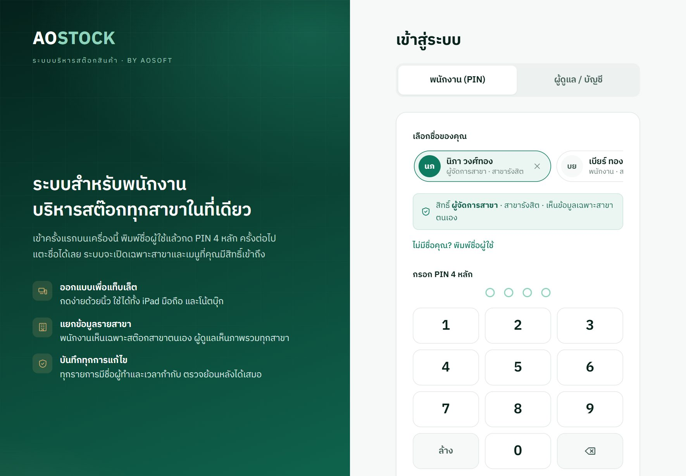
หน้าเข้าสู่ระบบ — แตะชื่อที่เครื่องจำไว้ แล้วกด PIN 4 หลัก
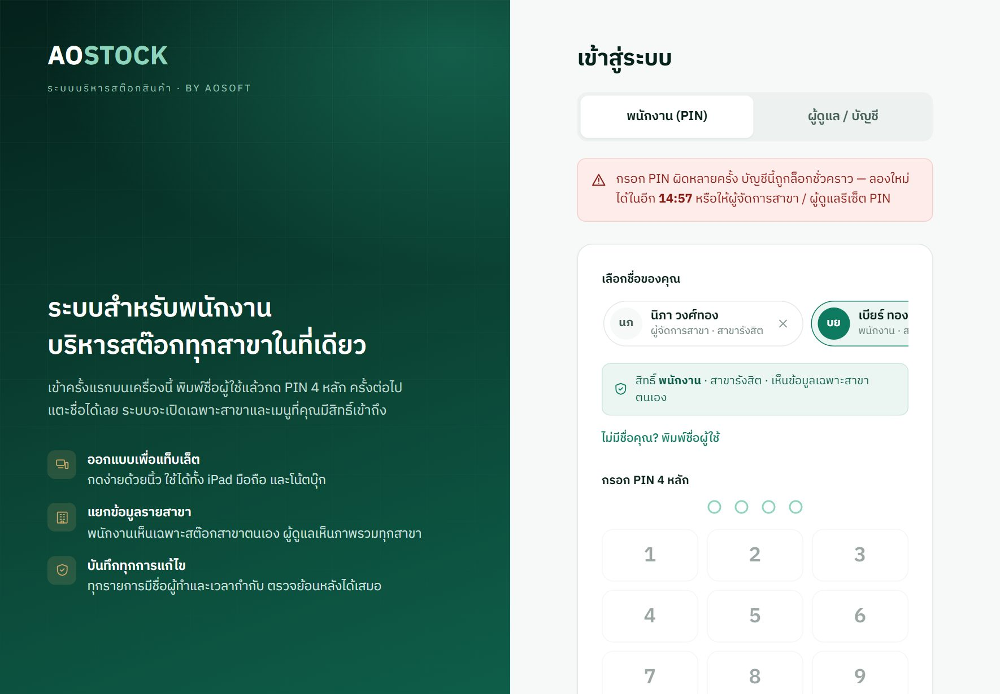
กรอก PIN ผิดครบ 5 ครั้ง — บอกเวลาที่ต้องรอ นับถอยหลัง และแป้นกดไม่ได้
เครื่องจำชื่อได้อย่างไร — เครื่องหนึ่งจำได้สูงสุด 12 ชื่อ เรียงคนที่เข้าล่าสุดไว้ก่อน
ชื่อที่ไม่ได้เข้าเครื่องนั้นนานเกิน 180 วันจะหายไปเอง · คนที่ถูกพักงานหายจากแถวชื่อทันที · ล้างข้อมูลเบราว์เซอร์ (คุกกี้) แล้วต้องพิมพ์ชื่อใหม่
· การกดออกจากระบบไม่ได้ลบชื่อออก
กรอกผิดหลายครั้งจะโดนล็อกชั่วคราว (กันคนสุ่มเดา)
| กรอกผิด | ผลที่เกิด และวิธีแก้ |
|---|
| ชื่อเดียวกัน ผิดติดกันครบ 5 ครั้ง | บัญชีนั้นเข้าไม่ได้ 15 นาที คนอื่นบนเครื่องเดียวกันแตะชื่อตัวเองเข้าได้ตามปกติ
— ไม่อยากรอ ให้ผู้จัดการสาขาหรือผู้ดูแล ตั้ง PIN ใหม่ ซึ่งปลดล็อกให้ทันที |
| เครื่องเดียวกัน ผิดรวมกัน 5 ครั้ง (หลายชื่อรวมกัน) | ทุกชื่อบนเครื่องนั้นต้องรอ 1 นาที — รีเซ็ตไม่ได้ รอให้ครบเวลา |
| ทั้งร้าน (อินเทอร์เน็ตวงเดียวกัน) ผิดรวม 20 ครั้งใน 15 นาที | ทุกคนในวงนั้นเข้าไม่ได้ 15 นาที — รีเซ็ตไม่ได้ รอให้ครบเวลา |
- ข้อความบนจอบอกเวลาที่ต้องรอเป็นนาที:วินาที นับถอยหลังให้ดู แป้น PIN กดไม่ได้จนหมดเวลา แล้วขึ้น “ลองใหม่ได้แล้ว — กรอก PIN อีกครั้ง”
- ใช้ให้ถูกแท็บ — พนักงานไปกรอกในแท็บ “ผู้ดูแล / บัญชี” (หรือกลับกัน) ระบบนับเป็นการกรอกผิดด้วย
- ผู้จัดการสาขาที่ใส่ PIN ยืนยันผิดในหน้า “พนักงานในสาขา” ก็นับรวมกับการล็อกตอนเข้าระบบเช่นกัน
หลังเข้าระบบ
- พนักงาน เข้ามาที่หน้า “ภาพรวมของฉัน” — ถ้ามีสิทธิ์เปิดร้านแต่ร้านยังไม่เปิด ระบบพาไปหน้าเปิดร้านก่อน ·
ผู้ดูแล เข้ามาที่ “ภาพรวมผู้ดูแล” · ฝ่ายบัญชี เข้ามาที่ “บิลขายและเงินเข้า”
- ด้านซ้ายคือ เมนู แต่ละคนเห็นเมนูไม่เหมือนกัน ขึ้นกับตำแหน่งและสิทธิ์ (ข้อ 13) กดปุ่มมุมบนซ้ายเพื่อย่อ / ขยายเมนู เครื่องจำไว้ให้
- แถบบนบอกชื่อหน้า สถานะร้าน (ยังไม่เปิดร้าน เปิดแล้ว 09:12 น. ปิดร้านแล้ว)
ชื่อและตำแหน่งของคนที่ใช้อยู่ ปุ่มออกจากระบบ และปุ่ม ขายสินค้า สีส้มที่กดได้จากทุกหน้า (ตัวเลขบนปุ่ม = จำนวนชิ้นในตะกร้า)
- ตอนร้านยังไม่เปิด เมนู “ขายสินค้า” มีป้าย เปิดร้านก่อน หรือ ร้านยังไม่เปิด · ปิดร้านแล้วมีป้าย ปิดร้านแล้ว
| ตำแหน่ง | เมนูที่มี (เห็นเฉพาะเมนูที่มีสิทธิ์) |
|---|
พนักงาน
ผู้จัดการสาขา | ใช้งานประจำวัน — ภาพรวมของฉัน · เปิด / ปิดร้าน · ขายสินค้า · สินค้าในสต๊อก · เพิ่มสินค้า · หมวดสินค้า · นำเข้าสินค้า ·
เบิก / ตัดออก · ตรวจนับสต๊อก · รับคืนสินค้า
ประวัติ — ประวัติขาย / ตั้งค่า · ประวัตินำเข้า · ประวัติตัดออก · ประวัติตรวจนับ · ประวัติรับคืน · ประวัติเปิด / ปิดร้าน · เคลื่อนไหวรายสินค้า
(ขึ้นเฉพาะเมนูที่มีสิทธิ์ดู — ข้อ 9)
รายงาน — รายงานยอดขาย
ผู้จัดการสาขา — พนักงานในสาขา (เฉพาะผู้จัดการ) |
| ผู้ดูแลระบบ | ตรวจสอบ — ภาพรวม · สินค้าในสต๊อก · เพิ่มสินค้า · หมวดสินค้า
ประวัติ — นำเข้าสินค้า · เบิก / ตัดออก · ตรวจนับสต๊อก · รับคืนสินค้า · ขาย / ตั้งค่า · เปิด / ปิดร้าน · เคลื่อนไหวรายสินค้า
รายงาน — ภาพรวมยอดขาย · สรุปยอดขายรายวัน · ยอดขายแยกสาขา · ยอดขายตามพนักงาน · สินค้าขายดี 100 อันดับ
บัญชี — บิลขายและเงินเข้า · ตั้งค่าเลขที่บิล
ตั้งค่า — จัดการสาขา · จัดการพนักงาน · ตั้งค่าการแจ้งเตือน |
| ฝ่ายบัญชี | บิลขายและเงินเข้า · ตั้งค่าเลขที่บิล |
ใช้เครื่องร่วมกันหลายคน (เช่น iPad หน้าร้าน) — ทำงานเสร็จแล้ว กดออกจากระบบทุกครั้ง เพราะทุกรายการบันทึกชื่อคนที่เข้าระบบอยู่
· อยู่ในระบบได้ทั้งวัน นั่งรอลูกค้านานแค่ไหนก็ไม่หลุด — หลุดเมื่อปิดเบราว์เซอร์ หรือไม่ได้ใช้เกิน 12 ชั่วโมง (ของในตะกร้าหรือใบที่ทำค้างไว้จะหายไป)
· เปิดลิงก์หน้าที่ไม่มีสิทธิ์ ระบบพากลับหน้าแรกพร้อมบอก “ไม่มีสิทธิ์เข้าหน้า … — ติดต่อผู้ดูแลเพื่อเปิดสิทธิ์”
3 หนึ่งวันของร้าน: เปิดร้าน → ขาย → ปิดร้าน
ทุกสาขาทำงานเป็น “วัน” — เช้าเปิดร้าน ระหว่างวันขายและทำงานต่าง ๆ เย็นนับเงินแล้วปิดร้าน
การขายและการรับคืนทำได้เฉพาะตอนร้านเปิดอยู่ ส่วนงานคลัง (นำเข้า ตัดออก ตรวจนับ) และการดูข้อมูล ทำได้ตลอด
ลำดับงานในหนึ่งวัน
1เข้าระบบแตะชื่อตัวเอง แล้วกด PIN
2เปิดร้านระบบยกเงินทอนจากเมื่อวานมาให้ เติมเพิ่มได้ ถ้านับแล้วไม่ตรงกด “แจ้งยอดไม่ตรง”
3ระหว่างวัน
- ขายสินค้า ออกบิล
- รับคืนสินค้า คืนเงิน
- เติมเงินทอน / หยิบเงินออก (ใส่เหตุผล)
- รับของเข้า ตัดของออก ตรวจนับ
4ปิดร้านนับเงินในลิ้นชัก แยกเงินทอนไว้พรุ่งนี้ ระบบส่งสรุปของวันให้ผู้ดูแล
ปิดร้านแล้วแต่ลูกค้ามาซื้ออีก?
คนที่มีสิทธิ์ “เปิดร้านอีกครั้ง” หรือผู้ดูแล กด เปิดร้านใหม่ ได้ ต้องใส่เหตุผล แล้วปิดร้านอีกรอบเมื่อเสร็จ — ผู้ดูแลเห็นทุกครั้ง
เมื่อวานลืมปิดร้าน?
เช้าวันใหม่ระบบให้ ปิดร้านของวันก่อนก่อน (นับเงินที่เหลือ) แล้วจึงเปิดร้านวันนี้ได้ ผู้ดูแลปิดย้อนหลังแทนให้ได้ด้วย
เช้า: เปิดร้าน (สาขาละครั้งต่อวัน)
ทำได้เฉพาะคนที่มีสิทธิ์ “เปิด / ปิดร้าน” — ถ้ามีสิทธิ์และร้านยังไม่เปิด เข้าระบบแล้วระบบพามาหน้านี้เอง
- เมนู เปิด / ปิดร้าน ดู “เงินทอนยกมา” คือเงินที่แยกไว้ตอนปิดร้านครั้งก่อน (บอกด้วยว่าใครแยกไว้ เมื่อไร)
ถ้าวันก่อนไม่ได้ปิดร้าน ระบบใช้ “เงินทอนมาตรฐาน” ของสาขาแทน
- จะเติมเงินทอนเพิ่ม พิมพ์ในช่อง “เติมเงินทอนวันนี้ (ถ้ามี)” หรือกดปุ่ม +500 +1,000 +2,000
(ปุ่มตั้งเป็นจำนวนนั้นเลย ไม่ได้บวกเพิ่มทุกครั้งที่กด · ไม่เติม = 0) ระบบรวมเป็น “เงินทอนเริ่มวันนี้” ให้
- นับเงินทอนในลิ้นชักแล้ว ไม่ตรง กับยอดยกมา — กดลิงก์ “แจ้งยอดไม่ตรง” ใส่ “นับเงินทอนได้จริง” และ “เหตุผล” (จำเป็น)
ระบบบันทึกเป็นรายการปรับเงินทอนและแจ้งผู้ดูแลอัตโนมัติ
- กด เปิดร้าน — ขึ้น “เปิดร้านเรียบร้อย เริ่มทำงานได้เลย” แถบบนเปลี่ยนเป็น “เปิดแล้ว … น.” และป้ายบนเมนูหายไป
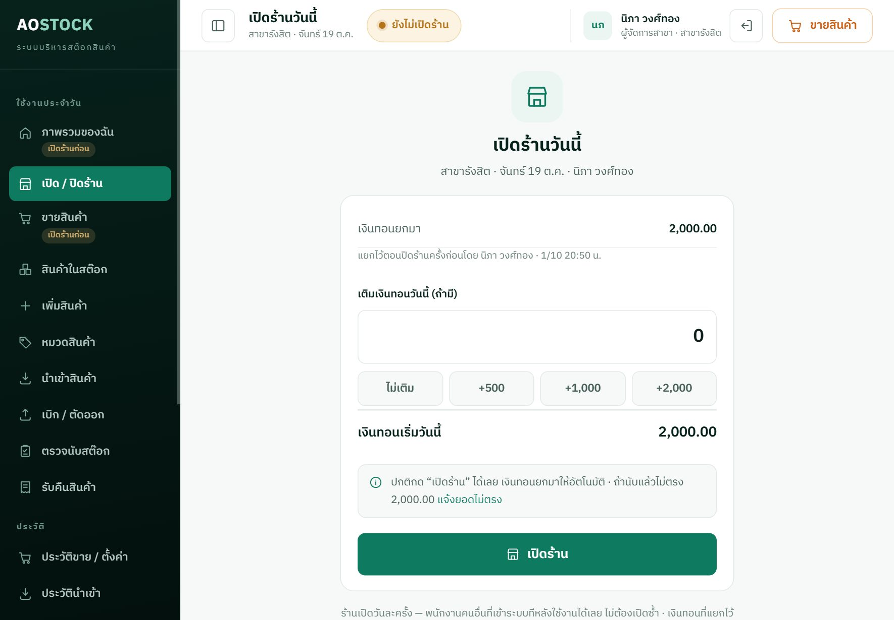
เปิดร้าน — เงินทอนยกมาอัตโนมัติ เติมเพิ่มได้
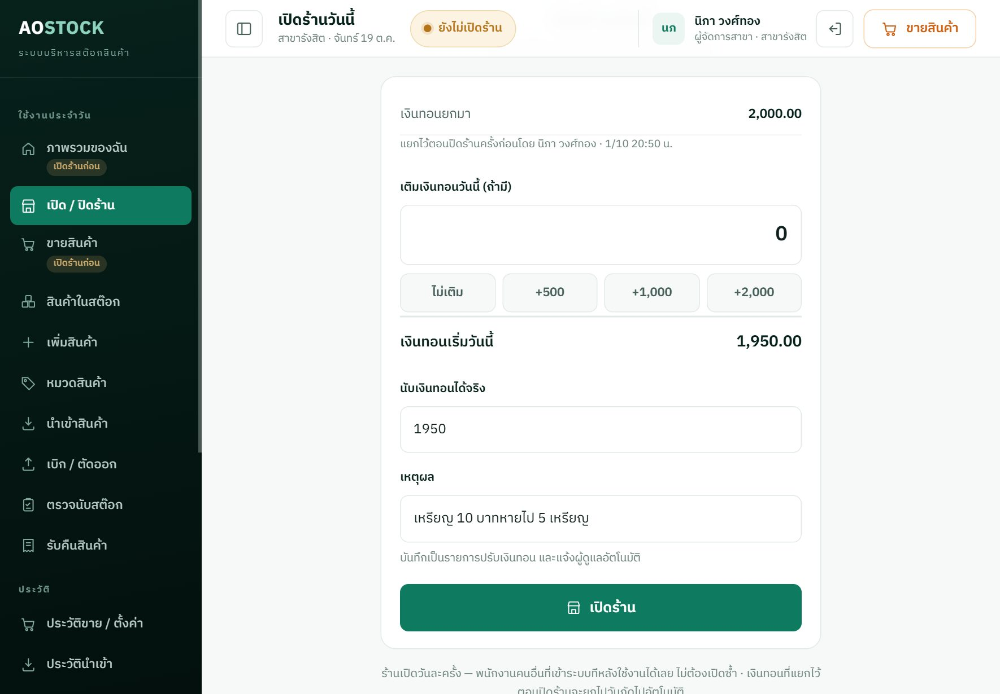
กด “แจ้งยอดไม่ตรง” — ใส่ยอดที่นับได้จริงและเหตุผล
คนอื่นที่เข้าระบบทีหลังไม่ต้องเปิดซ้ำ ร้านเปิดวันละครั้งต่อสาขา ·
คนที่ไม่มีสิทธิ์เปิดร้านจะเห็น “ร้านยังไม่เปิด — เปิดร้านได้เฉพาะคนที่มีสิทธิ์ “เปิด / ปิดร้าน” …” ระหว่างรอ ใช้ปุ่มลัด
“ยังไม่เปิดร้านก็ใช้ได้” ไปทำงานที่ไม่ต้องเปิดร้านได้ เช่น ดูสินค้า นำเข้า ตัดออก ตรวจนับ ดูประวัติ ดูรายงาน
ระหว่างวัน: เติมเงินทอน / หยิบเงินออก
ใช้เมื่อเอาเงินสดเข้าหรือออกจากลิ้นชักโดยไม่ได้ขาย เช่น แลกเหรียญเพิ่ม ซื้อถุงใส่ของ ต้องมีสิทธิ์ “เงินเข้า / ออกลิ้นชัก”
- หน้า เปิด / ปิดร้าน การ์ด “เติมเงินทอน / หยิบเงินออก”
- ช่อง “รายการ” เลือก เติมเงินทอนเข้าลิ้นชัก หรือ หยิบเงินออกจากลิ้นชัก
- ใส่ “จำนวนเงิน” (มีสตางค์ได้) และ “เหตุผล” — ต้องใส่เหตุผลทุกครั้ง
- กด บันทึก — รายการขึ้นในการ์ดพร้อมเวลาและชื่อคนทำ และไปรวมในยอด “ควรมีในลิ้นชัก” ตอนปิดร้าน
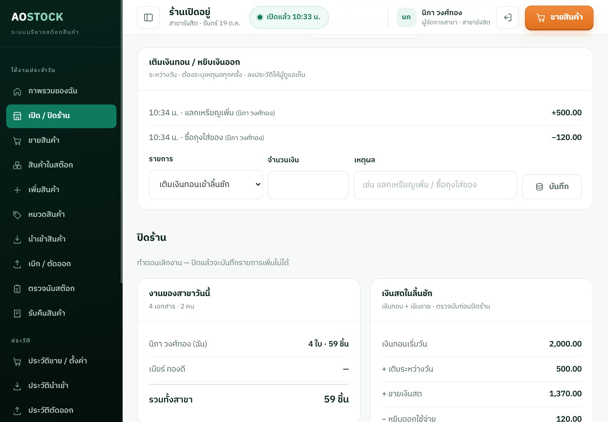
เติมเงินทอน 500 และหยิบเงินออก 120 — ด้านล่างคือส่วนปิดร้าน ยอดในลิ้นชักรวมรายการเหล่านี้แล้ว
หยิบออกได้ไม่เกินเงินที่ควรมีในลิ้นชักตอนนั้น · ทำได้เฉพาะตอนร้านเปิด · ผู้ดูแลเห็นทุกรายการในเมนูประวัติ “เปิด / ปิดร้าน”
เย็น: ปิดร้าน
- ส่วน ปิดร้าน ด้านล่างของหน้า เปิด / ปิดร้าน — การ์ด “งานของสาขาวันนี้” บอกว่าใครทำไปกี่ใบ กี่ชิ้น
- การ์ด “เงินสดในลิ้นชัก” บอกยอด “ควรมีในลิ้นชัก” (คิดตามแผนภาพถัดไป)
- นับเงินสดในลิ้นชัก ใส่ในช่อง “นับเงินได้จริง” (ระบบใส่ยอดที่ควรมีไว้ให้ก่อน) — ถ้าไม่ตรง ขึ้น “ขาด” หรือ “เกิน” และต้องเขียนหมายเหตุว่าเกิดจากอะไร
- “แยกเงินทอนไว้สำหรับพรุ่งนี้” ปกติเท่าเงินทอนมาตรฐาน กด “เปลี่ยนจำนวน” ถ้าจะเก็บมากหรือน้อยกว่านั้น (เช่น ก่อนวันหยุดยาว)
ส่วนที่เหลือคือ เงินนำส่ง
- กด ปิดร้านและส่งสรุปให้ผู้ดูแล — การ์ด “สรุปการปิดร้าน” ขึ้นมาแทน และสรุปของวันส่งถึงผู้ดูแล (ถ้าตั้งการแจ้งเตือนไว้)
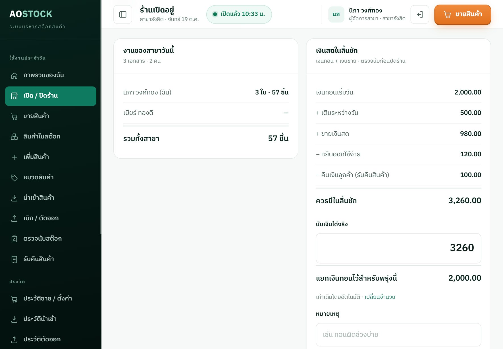
ปิดร้าน — ระบบบอกยอดที่ควรมี แล้วนับเงินจริงเทียบ
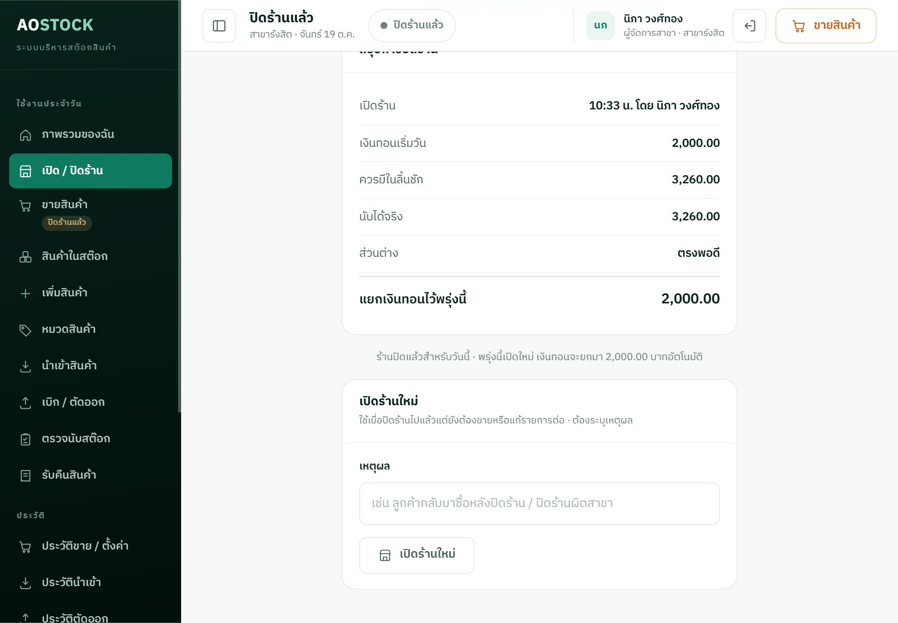
ปิดร้านแล้ว — สรุปของวัน และการ์ด “เปิดร้านใหม่” (ถ้ามีสิทธิ์)
ปิดร้านแล้ว ขายสินค้า ยกเลิกบิล รับคืน และเติม / หยิบเงิน ทำไม่ได้จนกว่าจะเปิดร้านใหม่ (งานคลังยังทำได้)
· ไม่มีกล่องถามยืนยันก่อนปิด ตรวจตัวเลขให้เรียบร้อยก่อนกด
เงินในลิ้นชักคิดอย่างไร
เงินที่ควรมีในลิ้นชักตอนปิดร้าน
เงินทอนเริ่มวันตอนเปิดร้าน
+
เติมระหว่างวันเติมเงินทอน
+
ขายเงินสดไม่นับเงินโอน
−
หยิบออกใช้จ่ายในร้าน
−
คืนเงินลูกค้าจากการรับคืน
=
ควรมีในลิ้นชัก
นับได้ตรงปิดร้านได้เลย
ขาด หรือ เกินต้องเขียนหมายเหตุว่าเกิดจากอะไร (เช่น ทอนผิด ลูกค้าไม่รับเงินทอน) ผู้ดูแลเห็นทันที
แยกเงินทอนไว้พรุ่งนี้ปกติเท่าเดิม เปลี่ยนจำนวนได้ ส่วนที่เหลือคือเงินที่นำส่ง
“ขายเงินสด” นับเฉพาะบิลที่จ่ายเงินสดและไม่ถูกยกเลิก · บิลโอน / พร้อมเพย์ไม่เข้าลิ้นชัก · เงินคืนลูกค้าจ่ายเป็นเงินสดจากลิ้นชักเสมอ
ปิดร้านแล้ว แต่ยังต้องขายต่อ: เปิดร้านใหม่
- หน้า เปิด / ปิดร้าน การ์ด “เปิดร้านใหม่” (มีเฉพาะคนที่มีสิทธิ์ “เปิดร้านอีกครั้งหลังปิดแล้ว”)
- ใส่ “เหตุผล” เช่น ลูกค้ากลับมาซื้อหลังปิดร้าน แล้วกด เปิดร้านใหม่
- ขึ้น “เปิดร้านใหม่แล้ว ขายต่อได้ — ปิดร้านอีกครั้งเมื่อเสร็จ” ขายเสร็จแล้วปิดร้านอีกรอบตามขั้นตอนปกติ
ไม่มีสิทธิ์ — ให้ผู้ดูแลเปิดให้จากหน้า “ภาพรวม” · เปิดใหม่ได้ไม่จำกัดครั้ง แต่ทุกครั้งขึ้นใน “รายการที่ต้องตรวจ” ของผู้ดูแล
วันก่อนลืมปิดร้าน
เช้าวันใหม่ หน้าเปิดร้านขึ้นเตือน “วัน… ยังไม่ได้กดปิดร้าน” และยังเปิดร้านวันนี้ไม่ได้จนกว่าจะปิดของวันนั้น
- การ์ด “ขั้นที่ 1 · ปิดร้านของวัน…” — ยังไม่ได้ขายของวันนี้ เงินในลิ้นชักตอนนี้คือเงินของวันนั้น นับแล้วใส่ “นับเงินในลิ้นชักได้จริง”
- “แยกเงินทอนไว้ (ยกมาเป็นเงินทอนวันนี้)” ปกติเท่าเงินทอนมาตรฐาน เปลี่ยนจำนวนได้
- ใส่ “ทำไมวันนั้นไม่ได้ปิดร้าน” (จำเป็น) แล้วกดปุ่ม ปิดร้านของวัน…
- ขั้นที่ 2 ฟอร์มเปิดร้านวันนี้ขึ้นมาให้ เงินทอนที่แยกไว้ยกมาแล้ว — เปิดร้านตามปกติ
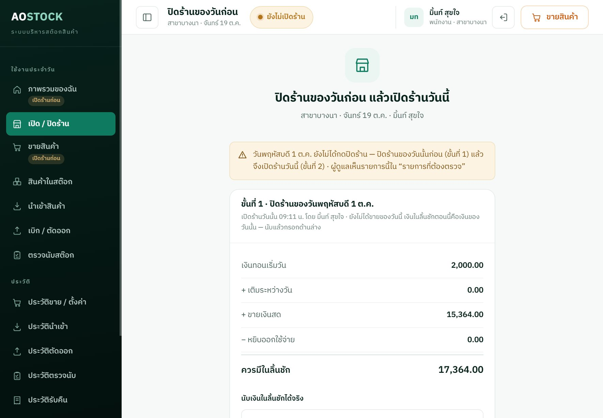
วันก่อนยังไม่ได้ปิดร้าน — ต้องปิดของวันนั้นก่อน (ขั้นที่ 1) แล้วจึงเปิดร้านวันนี้ (ขั้นที่ 2)
พนักงานปิดย้อนหลังได้เฉพาะวันล่าสุดที่ยังไม่ได้ปิด — ถ้าค้างหลายวัน หรือเป็นวันที่เก่ากว่านั้น
ให้ผู้ดูแลปิดย้อนหลังที่หน้า “ภาพรวม” (ข้อ 11) · ผู้ดูแลเห็นทุกการปิดย้อนหลังใน “รายการที่ต้องตรวจ”
4 ของเข้า–ของออก: สต๊อกเปลี่ยนเมื่อไร
“สต๊อก” คือจำนวนของที่สาขามีอยู่ ระบบเปลี่ยนตัวเลขให้เองทุกครั้งที่มีของเข้าหรือออก ไม่มีช่องให้แก้ตัวเลขสต๊อกด้วยมือ
ถ้าตัวเลขไม่ตรงกับของจริง ให้ทำ “ตรวจนับสต๊อก” (ข้อ 7)
อะไรทำให้ของเพิ่ม อะไรทำให้ของลด
+นำเข้าสินค้าของมาส่ง (ใบส่งของ / ใบกำกับ) หรือของที่ไม่มีเอกสาร เช่น ลูกค้าคืนไม่มีบิล
+รับคืน (ของยังดี)ลูกค้าซื้อผิดรุ่น ของกลับไปขายต่อ
±ตรวจนับ (นับได้มากกว่า)เจอของเพิ่ม ปรับยอดขึ้น
ของคงเหลือ
ของสาขาแยกแต่ละสินค้า
แยกแต่ละสาขา
−ขายสินค้าบันทึกบิลแล้วตัดทันที
−เบิก / ตัดออกของเสีย หาย หมดอายุ ใช้ในร้าน ส่งสาขาอื่น
±ตรวจนับ (นับได้น้อยกว่า)ของขาด ปรับยอดลง
รับคืนของเสีย / ใช้แล้วไม่เข้าสต๊อก — แยกเก็บไว้ส่งเคลม ไม่เอาไปขายต่อ
ยกเลิกเอกสารตัวเลขกลับเหมือนไม่เคยทำ เช่น ยกเลิกบิล = ของกลับเข้าสต๊อก
ส่งของไปสาขาอื่นสาขาต้นทางตัดออก (“ส่งไปสาขาอื่น”) สาขาปลายทางทำใบรับเข้าเอง
- ใส่ของในตะกร้ายังไม่ตัดสต๊อก — ตัดตอนกดบันทึกบิลเท่านั้น ถ้าอีกเครื่องขายตัดหน้าไปก่อน ระบบบอกว่าของไม่พอตอนรับเงิน
- สินค้าใหม่เริ่มที่ 0 ทุกสาขา ต้องทำใบรับเข้าก่อนจึงจะขายได้
- สินค้าที่ “เลิกขาย” แล้วไม่ขึ้นในหน้าขาย นำเข้า และตรวจนับ แต่ประวัติและรายงานเดิมยังอยู่ครบ
ดูได้ว่าตัวเลขมาจากไหน: เคลื่อนไหวรายสินค้า
- เมนู เคลื่อนไหวรายสินค้า (ในกลุ่มเมนู “ประวัติ”) เลือกสินค้าจากรายการทางซ้าย (ค้นด้วยชื่อ SKU หรือบาร์โค้ด หรือกรองตามหมวด)
- เลือกช่วงเวลา วันนี้ 7 วัน 14 วัน — ย้อนหลังได้สูงสุด 14 วัน
- อ่านแถบสมการด้านบน แล้วไล่ดูทีละรายการด้านล่าง: เมื่อไร · ชนิดรายการและเลขเอกสาร · ใครทำ · เข้า / ออกกี่ชิ้น · คงเหลือหลังรายการนั้น
ยกมายอดตอนต้นช่วง
+
รับเข้ารวมที่ยกเลิก
+
ขายรวมยกเลิกบิล · รับคืน
+
ตัดออกรวมที่ยกเลิก
+
ตรวจนับส่วนต่างที่นับได้
=
คงเหลือ
ตัวเลขแต่ละช่องมีเครื่องหมาย + / − กำกับอยู่แล้ว เช่น ขาย −3 · ยกเลิกบิล +1 จึงรวมอยู่ในช่องขายเป็น −2
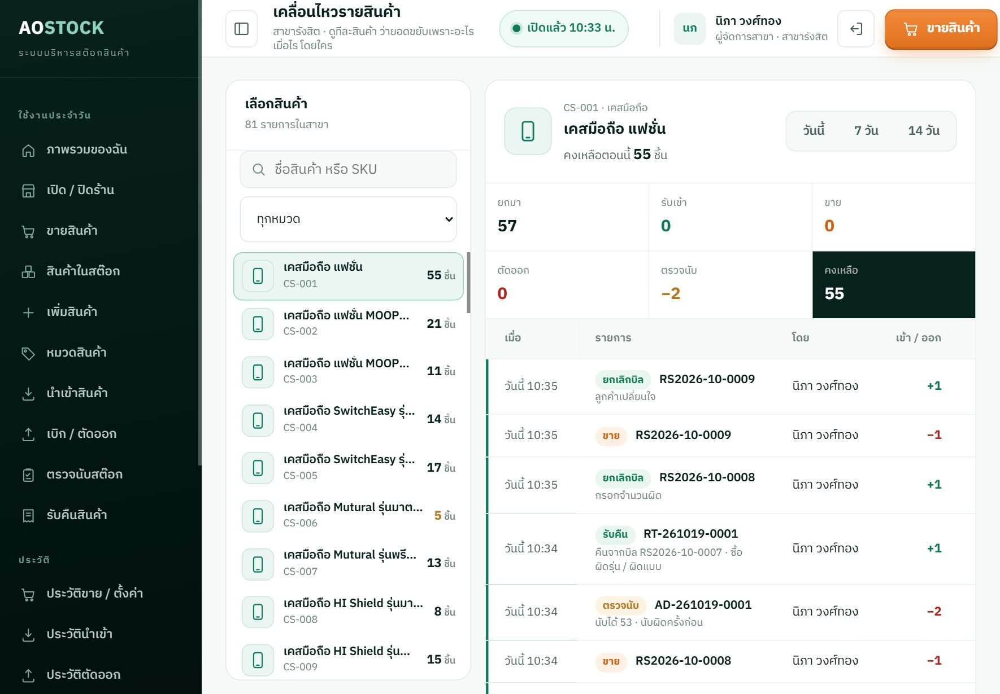
เคลื่อนไหวรายสินค้าของสินค้าหนึ่งตัว — แถบสมการด้านบน และทุกรายการที่ทำให้ยอดขยับ
ยังไม่เลือกสินค้า หน้านี้แสดง “เคลื่อนไหวล่าสุด” ของทุกสินค้ารวมกัน (100 รายการล่าสุด) กดชื่อสินค้าเพื่อดูละเอียดทีละตัว
· หน้า สินค้าในสต๊อก กดชื่อสินค้าก็มาที่หน้านี้ได้เหมือนกัน
5 ขายสินค้า
หน้าขายแบ่งเป็นสองฝั่ง: ซ้ายคือสินค้าให้แตะเลือก ขวาคือตะกร้าและส่วนรับเงิน
ต้องมีสิทธิ์ “ขายสินค้า” และร้านต้องเปิดอยู่ (ร้านยังไม่เปิดหรือปิดแล้ว กดเมนูขายแล้วระบบพาไปหน้าเปิดร้าน)
เลือกสินค้า
- แตะการ์ดสินค้า = ใส่ตะกร้า 1 ชิ้น แตะซ้ำ = เพิ่มอีกชิ้น ตัวเลขสีส้มบนการ์ดคือจำนวนที่อยู่ในตะกร้า
- ค้นหา พิมพ์ชื่อสินค้า SKU หรือบาร์โค้ด ในช่อง “ชื่อสินค้า หรือ SKU” รายการกรองให้ทันทีขณะพิมพ์ · กรองตามหมวดด้วยปุ่มหมวดด้านบน (“ทั้งหมด” = ทุกหมวด)
- การ์ดบอก “เหลือ N ชิ้น” — ตัวเลขเป็นสีส้มเมื่อถึงจุดสั่งซื้อ · ของหมดการ์ดขึ้น “หมด” และแตะไม่ได้ · สินค้าที่มีรูป การ์ดแสดงรูปทั้งรูป
ค้นด้วยบาร์โค้ด — ยิงเครื่องอ่านบาร์โค้ด (หรือพิมพ์เลขบาร์โค้ด) ลงช่องค้นหา สินค้าที่บาร์โค้ดตรงทั้งรหัสขึ้นมา แล้วแตะการ์ดเพื่อใส่ตะกร้า
(ระบบไม่ใส่ตะกร้าให้เองหลังยิง) · สินค้าต้องมีบาร์โค้ดในข้อมูลสินค้าก่อน · ค้นแบบนี้ได้ในหน้าขาย นำเข้า เบิก / ตัดออก ตรวจนับสต๊อก และเคลื่อนไหวรายสินค้า
ตะกร้า
- ปรับจำนวนด้วยปุ่ม − / + หรือพิมพ์ตัวเลขลงช่องได้เลย · พิมพ์ 0 หรือกด × = เอาออกจากตะกร้า · ปุ่มถังขยะ “ล้างตะกร้า” ล้างทันทีโดยไม่ถาม
- พิมพ์ตัวเลขเอง — ยอดในแถวและยอดรวมเปลี่ยนทันทีขณะพิมพ์ หยุดพิมพ์ครู่เดียวระบบบันทึกให้เอง (กด Enter หรือแตะที่อื่นก็บันทึกทันที)
· ระหว่างบันทึก ตัวเลขเงินจางลงนิดหนึ่ง เสร็จแล้วกลับเป็นปกติ · กดรับเงินทันทีหลังพิมพ์ได้ ระบบรอให้บันทึกครบก่อน
- ใส่ได้ไม่เกินของที่มี — แตะเกิน ระบบหยุดที่ยอดคงเหลือ · พิมพ์เกิน ระบบปรับให้และบอก “ใส่ได้ไม่เกินยอดคงเหลือ ปรับให้เป็นจำนวนสูงสุดที่มีแล้ว”
- ใส่ของในตะกร้ายังไม่ตัดสต๊อก (ตัดตอนบันทึกบิล) · ไปหน้าอื่นแล้วกลับมา ตะกร้ายังอยู่ จนกว่าจะออกจากระบบ
รับเงินและบันทึกบิล
- ยอดที่ต้องชำระ — ราคาเต็มของทั้งตะกร้า คนที่มีสิทธิ์ “ให้ส่วนลด” แก้ตัวเลขนี้ได้ ระบบแสดง “ราคาเต็ม” และ “ส่วนลด” ให้เห็น
(ต้องมากกว่า 0 และไม่เกินราคาเต็ม · ส่วนลดเป็นส่วนลดท้ายบิล ไม่มีส่วนลดรายชิ้น) · ไม่มีสิทธิ์ = ขายราคาเต็มเสมอ
- เลือก ประเภทบิล ไม่ VAT หรือ VAT ตามที่ลูกค้าต้องการ (เลขที่บิลแยกกันคนละชุด)
- เลือก วิธีจ่าย เงินสด หรือ โอน / พร้อมเพย์ (โอนไม่ต้องใส่เงินที่รับมา และไม่เข้าลิ้นชัก)
- เงินสด: ใส่ “รับเงินมา” (มีสตางค์ได้) หรือกดปุ่มลัด พอดี และยอดปัดขึ้นเป็นหลักร้อย / ห้าร้อย / พัน ระบบคิด เงินทอน ให้
— ใส่น้อยกว่ายอด เงินทอนขึ้นติดลบสีแดง ให้ตรวจก่อน
- กด รับเงินและบันทึกบิล → กล่อง “ยืนยันการรับเงิน” แสดงรายการ ยอด วิธีจ่าย ประเภทบิล เงินที่รับและเงินทอน
→ ถูกแล้วกด ยืนยัน บันทึกบิล (ผิดกด “ย้อนกลับ” ไปแก้)
- ขึ้นแถบเขียว “บันทึกบิล … แล้ว · ยอด … บาท · รับเงิน … · เงินทอน …” ของถูกตัดออกจากสต๊อกทันที
แถบนี้มีปุ่ม ดู / พิมพ์บิล และ (ตามสิทธิ์) แก้ไขบิลนี้ ยกเลิกบิลนี้
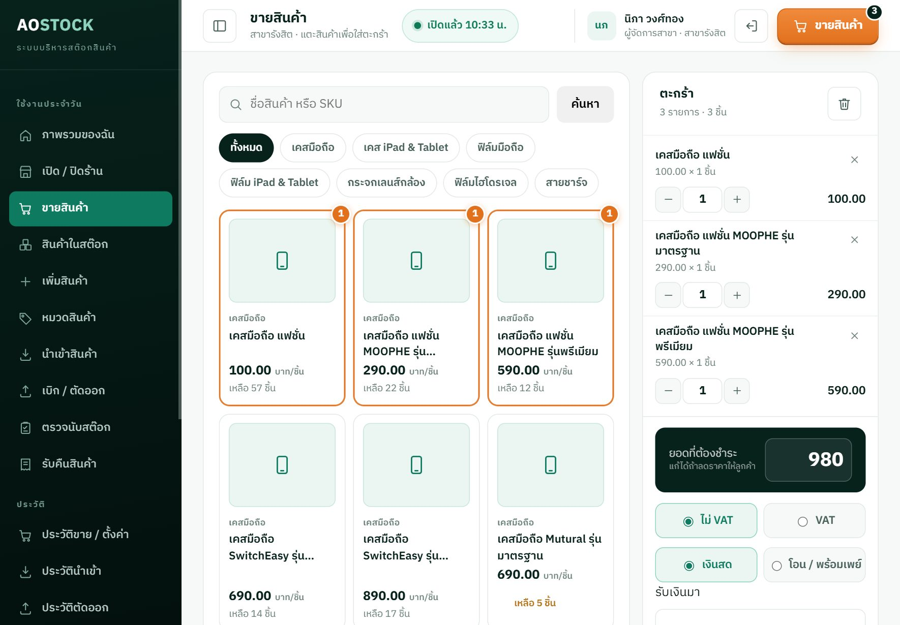
หน้าขาย — ซ้ายเลือกสินค้า ขวาคือตะกร้า ยอดที่ต้องชำระ ประเภทบิล และวิธีจ่าย
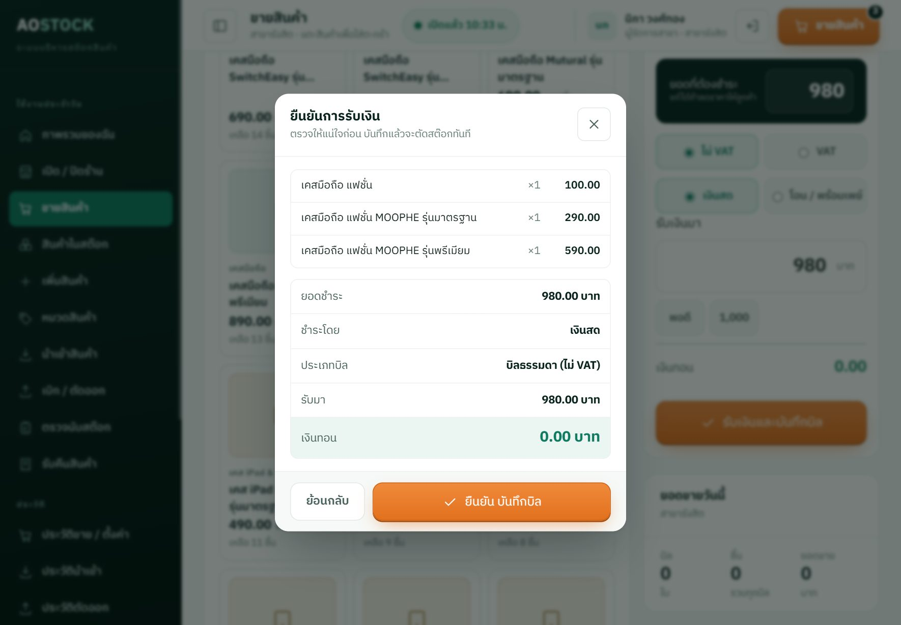
กล่องยืนยันก่อนบันทึก — ตรวจรายการ ยอด และเงินทอน
บันทึกไม่ผ่าน เพราะอะไรได้บ้าง — “ของไม่พอ (อาจถูกขายจากเครื่องอื่นไปแล้ว) …” แก้จำนวนในตะกร้าแล้วรับเงินใหม่ (ตะกร้ายังอยู่)
· “สาขานี้ยังไม่ได้ตั้งรหัสเลขที่บิล …” แจ้งฝ่ายบัญชีหรือผู้ดูแลให้ตั้งเลขที่บิล · “ร้านปิดแล้ว — บันทึกบิลไม่ได้” มีคนปิดร้านไปก่อน ต้องเปิดร้านใหม่
พิมพ์บิล และพิมพ์ซ้ำ
- กด ดู / พิมพ์บิล ขึ้นหน้าต่างบิล เลือกขนาด 80 มม. (เครื่องพิมพ์ใบเสร็จ) หรือ A4
แล้วกด พิมพ์ · หรือกด “เปิดแท็บใหม่” ซึ่งเปิดบิลแล้วสั่งพิมพ์ให้ทันที
- ระบบไม่สั่งพิมพ์เองหลังขาย ต้องกดปุ่มทุกครั้ง · ขนาดกระดาษเริ่มต้นตั้งที่หน้า “ตั้งค่าเลขที่บิล” ของฝ่ายบัญชี
- พิมพ์ซ้ำ / ลืมพิมพ์ — บิลที่ตัวเองขายวันนี้: กด บิลของฉันวันนี้ ในการ์ด “ยอดขายวันนี้” (หัวข้อถัดไป) ใช้ได้ทุกคน ·
บิลของคนอื่น: เมนู ประวัติขาย / ตั้งค่า (ต้องมีสิทธิ์ดูประวัติขาย) แล้วกด “ดู / พิมพ์บิล” ·
บิลที่ยกเลิกแล้วยังเปิดดูได้ มีตรา “ยกเลิก” สีแดง
- คนที่ไม่มีสิทธิ์ดูประวัติขาย เปิดได้เฉพาะบิลที่ตัวเองขาย — ใส่เลขบิลของคนอื่นในลิงก์ ขึ้น “ไม่พบบิล”
- บิล VAT พิมพ์หัวว่า “ใบเสร็จรับเงิน / ใบกำกับภาษีอย่างย่อ” มีเลขประจำตัวผู้เสียภาษี และแยก “มูลค่าสินค้าก่อนภาษี” กับ “ภาษีมูลค่าเพิ่ม 7%”
— ราคาสินค้ารวม VAT อยู่แล้ว ระบบถอด VAT ออกมาแสดง (ยอด × 7 ÷ 107) ไม่ได้บวกเพิ่ม
- บิล A4 มีจำนวนเงินเป็นตัวอักษร และช่องเซ็น “ผู้รับเงิน” กับ “ผู้ซื้อ / ลูกค้า”
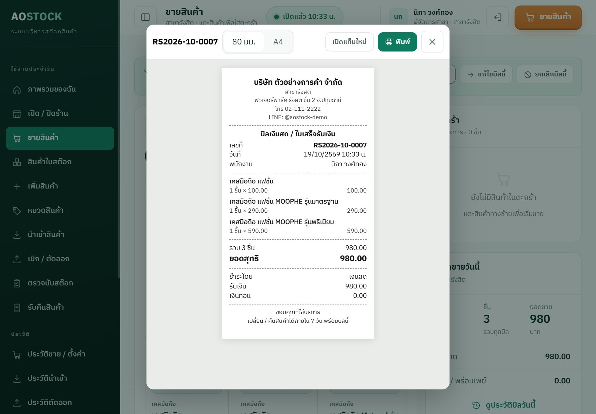
หน้าต่างบิล — เลือก 80 มม. หรือ A4 แล้วกดพิมพ์
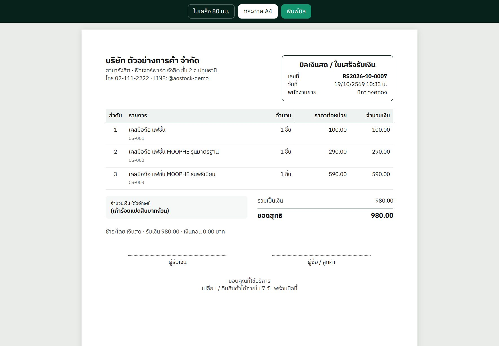
บิลขนาด A4 — มีจำนวนเงินตัวอักษรและช่องเซ็นชื่อ
เลขที่บิล เช่น RS2026-10-0007 = รหัสบิลของสาขา + ปี-เดือน (ค.ศ.) + เลขรัน 4 หลัก · บิล VAT ใช้รหัสอีกชุด (เช่น RSV…)
· เลขรันเริ่มใหม่ทุกเดือน · เลขของบิลที่ยกเลิกไม่ถูกนำมาใช้ซ้ำ
การ์ด “ยอดขายวันนี้” และบิลของฉันวันนี้
ใต้ตะกร้ามีสรุปของทั้งสาขาวันนี้: จำนวนบิล จำนวนชิ้น ยอดขาย แยกเงินสด / โอน (ไม่นับบิลที่ยกเลิก)
· ปุ่ม ดูประวัติบิลวันนี้ ไปเมนูประวัติขาย / ตั้งค่า (เฉพาะคนที่มีสิทธิ์ดูประวัติขาย) · ขายผิดแล้วจะแก้ ดูข้อ 8
บิลของฉันวันนี้ — ลืมพิมพ์ใบเสร็จ หรือเผลอรีเฟรชหน้า
ปุ่ม บิลของฉันวันนี้ (N ใบ) ขึ้นในการ์ดนี้เมื่อวันนี้มีบิลที่ตัวเองขายแล้ว ทุกคนที่ขายได้ใช้ได้ ไม่ต้องมีสิทธิ์ดูประวัติขาย
- กดปุ่ม ขึ้นหน้าต่างรายการบิลที่ตัวเองขายวันนี้ที่สาขานี้ ใหม่สุดอยู่บน: เวลา · เลขบิล · สินค้าตัวแรก (+ อีก N รายการ) · จำนวนชิ้น · วิธีจ่าย · ยอด
- บิลเยอะ — เลือกช่วงเวลาในช่อง “ตั้งแต่ – ถึง” หรือแตะปุ่มลัด 30 นาที 1 ชม. 3 ชม. ทั้งวัน
บรรทัดสรุปบอกจำนวนบิลและยอดรวม (ไม่รวมบิลที่ยกเลิก)
- กด ดู / พิมพ์บิล ที่บิลนั้น หน้าต่างบิลเปิดซ้อนขึ้นมา พิมพ์แล้วปิด กลับมาที่รายการเดิม
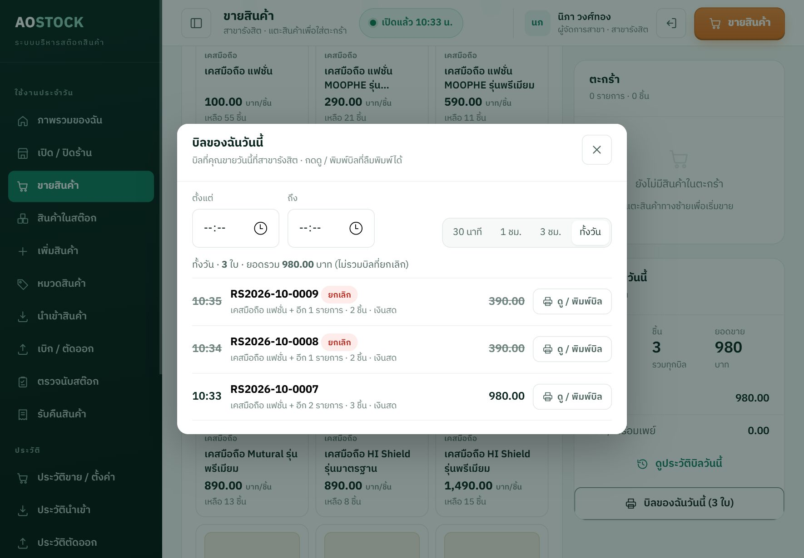
บิลของฉันวันนี้ — เลือกช่วงเวลา แล้วกดพิมพ์บิลที่ลืมพิมพ์
ดู / พิมพ์ได้อย่างเดียว แก้หรือยกเลิกบิลจากหน้าต่างนี้ไม่ได้ · บิลที่ยกเลิกแล้วมีป้าย “ยกเลิก” ยอดขีดฆ่า (พิมพ์ได้ มีตรายกเลิก)
· แสดงได้ถึง 200 ใบ ถ้าเกิน ให้เลือกช่วงเวลาให้แคบลง
6 รับคืนสินค้า
ลูกค้านำของมาคืนพร้อมบิลเดิม — คืนได้ภายในจำนวนวันที่สาขาตั้งไว้ (ปกติ 7 วัน) ต้องมีสิทธิ์ “รับคืนสินค้า”
และร้านต้องเปิดอยู่ เพราะเงินคืนจ่ายเป็นเงินสดจากลิ้นชักของวันนี้
ขั้นที่ 1 · หาบิลเดิม
- เมนู รับคืนสินค้า — หน้าแรกแสดงบิลย้อนหลังของสาขา ใหม่สุดอยู่บน
- ค้นจาก เลขบิล ชื่อสินค้า หรือ SKU ในช่องค้นหา แล้วกด “ค้นหา”
- ดูช่อง “สถานะการคืน” แล้วกด เลือกบิลนี้ ที่บิลที่ต้องการ
| สถานะที่เห็น | ความหมาย |
|---|
| คืนได้อีก N วัน / คืนได้ถึงวันนี้ | ยังอยู่ในกำหนดคืน กดเลือกบิลได้ |
| เกินกำหนด | เลยจำนวนวันที่สาขาตั้งไว้ เลือกไม่ได้ — ถ้าจำเป็นจริง ผู้ดูแลขยายจำนวนวันได้ที่หน้าจัดการสาขา |
| คืนครบทุกรายการแล้ว | ของในบิลนี้ถูกคืนไปหมดแล้ว |
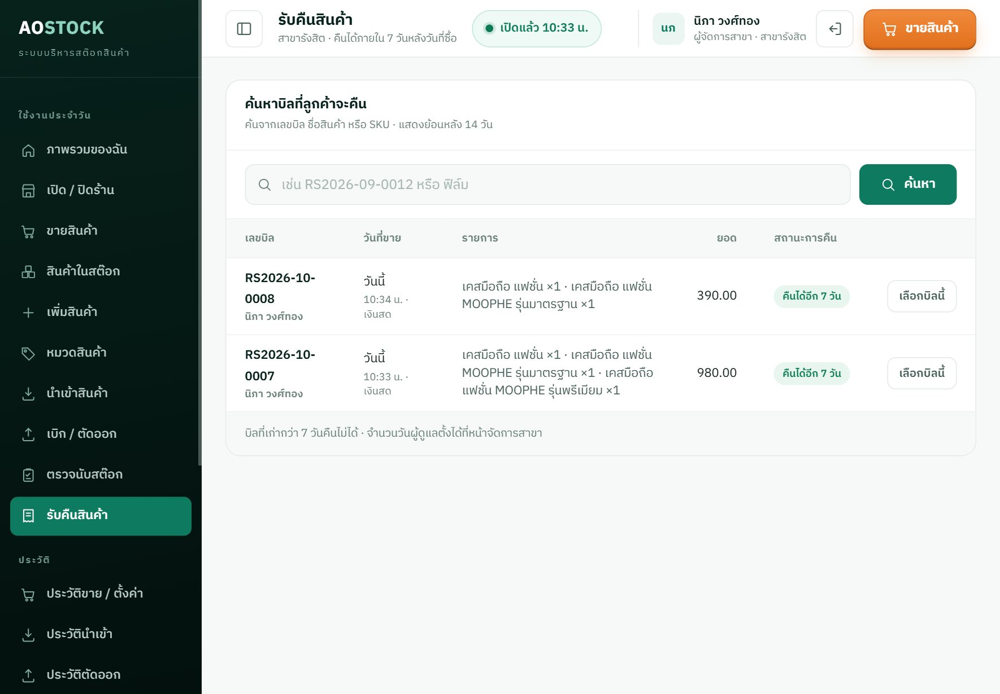
ค้นหาบิลที่ลูกค้าจะคืน — บิลในกำหนดมีปุ่ม “เลือกบิลนี้” บิลที่เลยกำหนดขึ้น “เกินกำหนด”
รายการแสดงย้อนหลังนานกว่ากำหนดคืน 7 วัน (อย่างน้อย 14 วัน) เพื่อให้เห็นบิลที่เลยกำหนดด้วย · บิลที่ถูกยกเลิกไม่ขึ้นในรายการ
ขั้นที่ 2 · กรอกการรับคืน
- ใส่จำนวนที่คืน เฉพาะรายการที่ลูกค้าคืน — คืนบางชิ้นได้ แต่ไม่เกินจำนวนที่ซื้อ (หักที่เคยคืนไปแล้ว)
- เลือกเหตุผล — เหตุผลเป็นตัวตัดสินว่าของกลับเข้าสต๊อกหรือไม่
| เหตุผล | ของที่คืน |
|---|
| ซื้อผิดรุ่น / ผิดแบบ (ของยังสมบูรณ์) | กลับเข้าสต๊อก ขายต่อได้ |
| สินค้าชำรุด / ใช้งานไม่ได้ | ไม่เข้าสต๊อก แยกเก็บไว้ส่งเคลม |
| ใช้แล้ว / สภาพไม่สมบูรณ์ | ไม่เข้าสต๊อก |
| อื่น ๆ (ต้องเขียนรายละเอียด) | ไม่เข้าสต๊อก |
- แนบรูป (ไม่บังคับ) ไม่เกิน 3 รูป รูปละไม่เกิน 5 MB (JPG / PNG / WEBP) ถ่ายใหม่หรือเลือกจากคลังรูปในเครื่องได้ — ถ่ายจุดที่ชำรุด กล่อง หรือใบเสร็จ ให้ผู้ดูแลตรวจภายหลัง
- ยอดเงินคืน ระบบคิดตามราคาที่ลูกค้าจ่ายจริง (บิลที่มีส่วนลด หักส่วนลดตามสัดส่วนให้แล้ว) ลดลงได้แต่ห้ามเกิน — ถ้าแก้ยอดต้องใส่เหตุผลที่ปรับ
- กด บันทึกรับคืนและคืนเงิน แล้วจ่ายเงินสดคืนจากลิ้นชัก — ได้ใบรับคืนเลขที่ RT-…
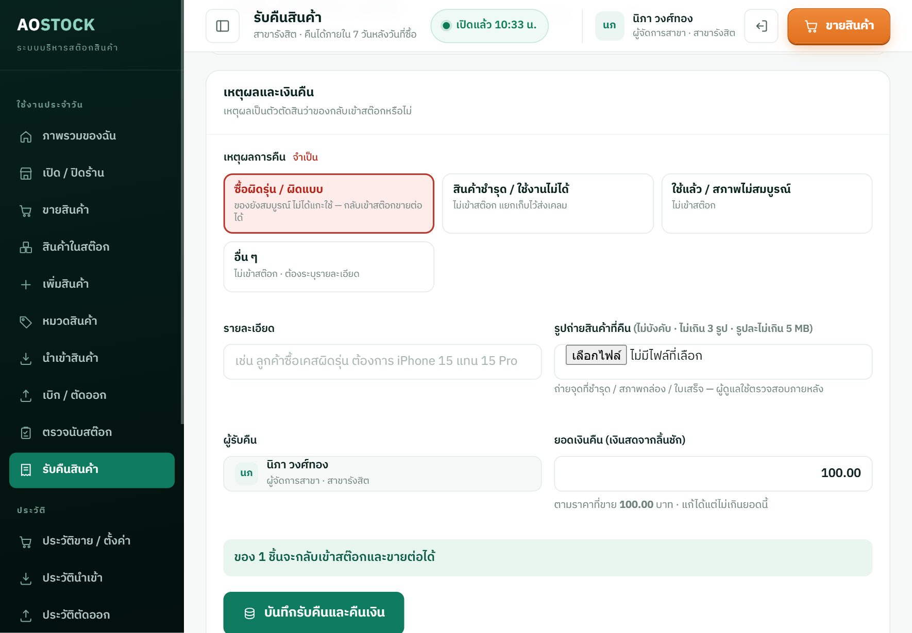
รับคืน — เลือกเหตุผล ระบบบอกว่าของจะกลับเข้าสต๊อกหรือไม่ และยอดเงินคืน
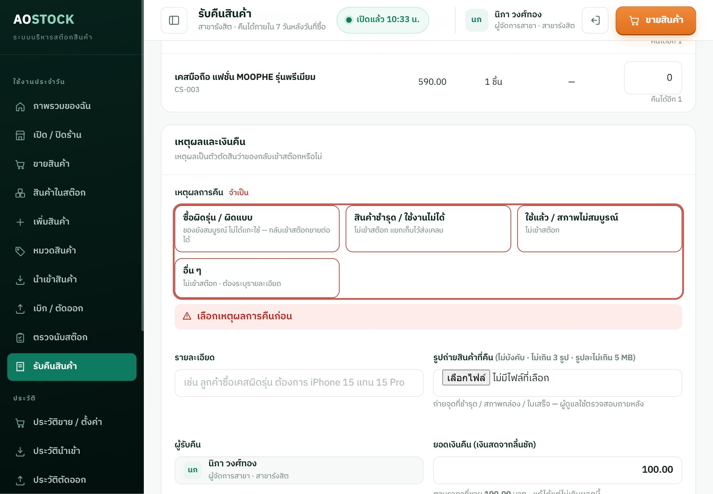
ยังไม่เลือกเหตุผลแล้วกดบันทึก — จอเลื่อนไปช่องที่ขาด กรอบแดงพร้อมบอกว่าต้องทำอะไร
ควรรู้
- เงินคืนเป็นเงินสดเสมอ แม้บิลเดิมจ่ายด้วยการโอน และไปหักในยอด “ควรมีในลิ้นชัก” ตอนปิดร้าน
- คนที่ไม่มีสิทธิ์ “คืนเงินสดให้ลูกค้า” บันทึกได้เป็นรับคืนแบบไม่คืนเงิน (เช่น เปลี่ยนสินค้า) ยอดคืนเป็น 0
- บิลที่มีการรับคืนแล้ว ยกเลิกหรือแก้ทั้งบิลไม่ได้ · บิลของวันก่อนก็ยกเลิกไม่ได้ ลูกค้าคืนของให้ใช้หน้านี้
- ปุ่มบันทึกเป็นสีเทาเมื่อยังกรอกไม่ครบ กดแล้วจอเลื่อนไปช่องที่ขาดให้ (หน้านำเข้า ตัดออก ตรวจนับก็เหมือนกัน)
- ทุกใบรับคืนพร้อมรูปที่แนบ ผู้ดูแลเปิดดูได้ที่เมนู “รับคืนสินค้า” ฝั่งผู้ดูแล และขึ้นใน “รายการที่ต้องตรวจ”
7 นำเข้า · เบิก / ตัดออก · ตรวจนับ
สามงานนี้ใช้หน้าตาแบบเดียวกัน: เลือกสินค้าทางซ้าย → รายการขึ้นในใบทางขวา → กดปุ่มบันทึกที่แถบล่าง → ยืนยัน
ทำได้แม้ร้านยังไม่เปิด · ใบที่ทำค้างไว้ไม่หาย ถ้าออกไปหน้าอื่นแล้วกลับมา (ระหว่างที่ยังไม่ออกจากระบบ)
นำเข้าสินค้า (ของเพิ่ม)
- เมนู นำเข้าสินค้า ใส่ “เลขที่เอกสารอ้างอิง” (เลขใบส่งของ / ใบกำกับ) หรือ “หมายเหตุ” — ต้องมีอย่างใดอย่างหนึ่ง เพื่อตรวจย้อนหลังได้
· ของที่ไม่มีเอกสาร (เช่น ลูกค้าคืนแบบไม่มีบิล ของกลับจากเคลม) เว้นเลขเอกสารไว้ แล้วเขียนเหตุในหมายเหตุ เช่น “ลูกค้าคืน ไม่มีบิล”
- แตะสินค้าที่มาส่ง (ค้นด้วยชื่อ SKU หรือบาร์โค้ด) แล้วปรับจำนวนในใบ — แต่ละแถวบอก “คงเหลือ 55 → 56” ให้เห็นยอดหลังรับเข้า
- กด บันทึกการรับเข้า ที่แถบล่าง → ตรวจในกล่องยืนยัน → ยืนยัน · ของเพิ่มในสต๊อกทันที ได้ใบรับเข้าเลขที่ RC-…
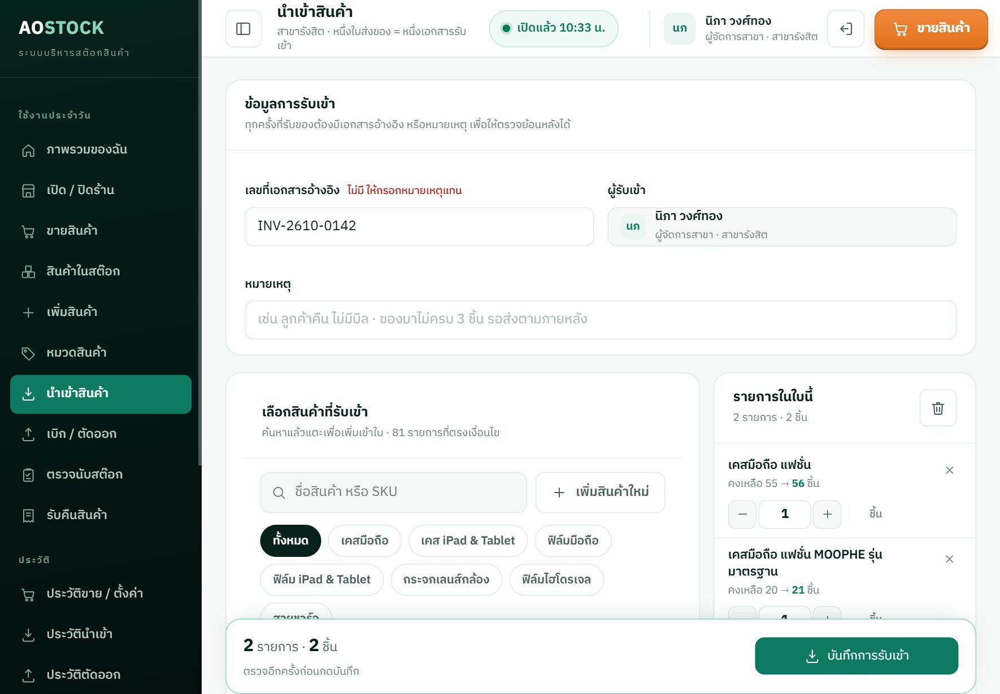
นำเข้าสินค้า — เลขเอกสารอ้างอิงหรือหมายเหตุด้านบน รายการในใบด้านขวา ปุ่มบันทึกที่แถบล่าง
ลูกค้าคืนของ เลือกหน้าให้ถูก — มีบิลและยังไม่เกินกำหนดคืน ใช้ “รับคืนสินค้า” (ข้อ 6 · คืนเงินได้ ของเข้าสต๊อกเองตามเหตุผล)
· ไม่มีบิล หรือเกินกำหนดคืน แต่ร้านตกลงรับของกลับมาขายต่อ ใช้ “นำเข้าสินค้า” แล้วเขียนเหตุในหมายเหตุ (หน้านี้ไม่มีการคืนเงิน)
สินค้าที่ยังไม่มีในระบบ: เพิ่มสินค้าใหม่
คนที่มีสิทธิ์ “เพิ่มสินค้าใหม่” เพิ่มได้ 2 ทาง กรอกเหมือนกัน:
เมนู เพิ่มสินค้า (เพิ่มเข้าระบบอย่างเดียว ยอดเริ่มที่ 0 แล้วค่อยนำเข้า)
หรือปุ่ม + เพิ่มสินค้าใหม่ ข้างช่องค้นหาในหน้านำเข้า (เพิ่มแล้วเข้าใบรับเข้าทันที)
- ใส่ ชื่อสินค้า · SKU เลือก “ตั้งให้อัตโนมัติ” (ได้รหัส P0001, P0002 …) หรือ “กรอกเอง” (A–Z 0–9 . _ - ตั้งแล้วเปลี่ยนไม่ได้)
- เลือก หมวด (คนที่มีสิทธิ์เพิ่มหมวด พิมพ์หมวดใหม่ได้) · หน่วย (ปกติ “ชิ้น”)
- ใส่ ทุนต่อหน่วย · ราคาขาย (รวม VAT) · จุดสั่งซื้อ (เหลือเท่านี้หรือน้อยกว่า = ใกล้หมด) · บาร์โค้ด (ไม่บังคับ)
- รูปสินค้า (ไม่บังคับ · JPG / PNG / WEBP) — ถ่ายจากมือถือได้เลย ระบบย่อรูปให้เองก่อนส่ง มีรูปตัวอย่างให้ดู
· รูปใช้ไม่ได้ (ไม่ใช่ไฟล์รูป / ใหญ่เกิน) ระบบยังไม่เพิ่มสินค้า บอกเหตุเป็นสีแดง ข้อมูลที่กรอกยังอยู่ เลือกรูปใหม่แล้วกดอีกครั้ง
- บันทึก — สินค้าใหม่ใช้ได้ทุกสาขาทันที · จากหน้านำเข้า: เข้าใบรับเข้านี้ 1 ชิ้นให้เลย ปรับจำนวนต่อได้ ·
จากเมนูเพิ่มสินค้า: ขึ้นกรอบเขียวพร้อมรูป กด นำเข้าสินค้านี้ ไปรับของเข้าต่อ
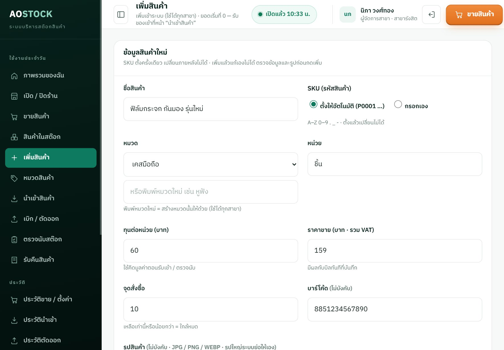
เมนูเพิ่มสินค้า — กรอกข้อมูลและรูป แล้วค่อยนำเข้า
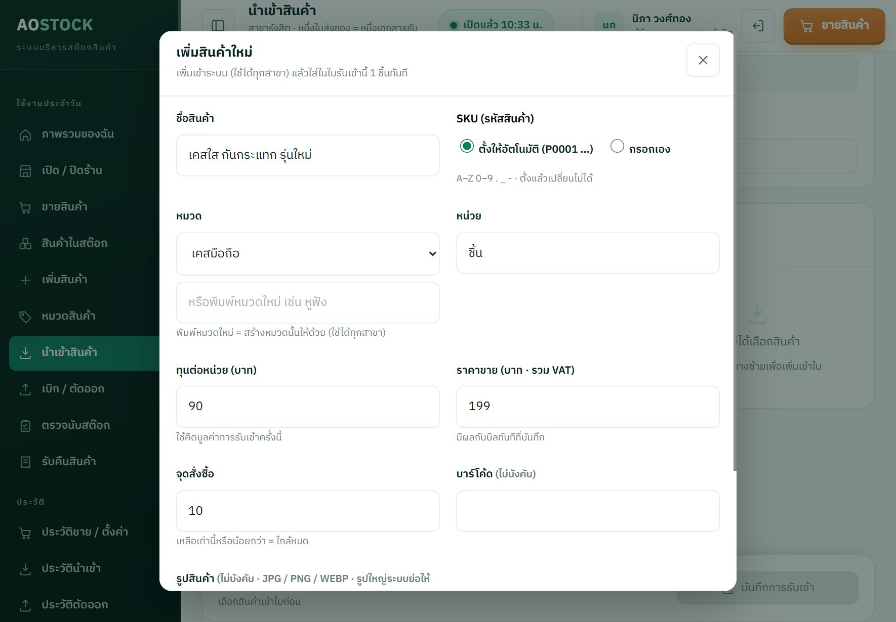
หน้าต่างเพิ่มสินค้าใหม่จากหน้านำเข้า
ราคาขายที่ตั้งตรงนี้มีผลกับบิลทันที ตรวจให้ถูกก่อนบันทึก · ภายหลังผู้ดูแลแก้ข้อมูลสินค้าได้ที่หน้า “สินค้าในสต๊อก” ฝั่งผู้ดูแล
เบิก / ตัดออก (ของลดโดยไม่ได้ขาย)
- เมนู เบิก / ตัดออก เลือกเหตุผล: เบิกใช้ภายใน · ชำรุด / เสียหาย · หมดอายุ · คืนผู้จำหน่าย · ส่งไปสาขาอื่น · สูญหาย · อื่น ๆ
- ช่อง “ผู้ขอเบิก / เลขที่อ้างอิง” ใส่ได้ (ไม่บังคับ) · ส่งไปสาขาอื่น · สูญหาย · อื่น ๆ ต้องเขียน “หมายเหตุ” อธิบายทุกครั้ง
- แตะสินค้าที่จะตัดออก ปรับจำนวน — ตัดเกินของที่มีไม่ได้ ระบบปรับให้เท่าที่มี
- กด บันทึกการตัดออก → ยืนยัน · ได้ใบตัดออกเลขที่ IS-…
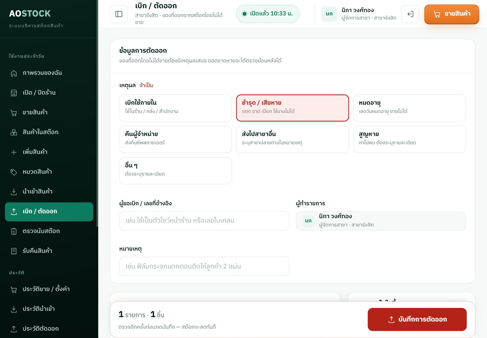
เบิก / ตัดออก — เลือกเหตุผลก่อนบันทึก
ตัดออกเพราะ “สูญหาย” หรือ “ชำรุด / เสียหาย” ส่งแจ้งเตือนถึงผู้ดูแลได้ (ถ้าเปิดไว้) และ “สูญหาย” ขึ้นใน “รายการที่ต้องตรวจ”
ตรวจนับสต๊อก (ทำให้ตัวเลขตรงกับของจริง)
แต่ละเดือนเป็นหนึ่ง รอบตรวจนับ (เริ่มวันที่ตามที่สาขาตั้ง ปกติวันที่ 1) ต้องนับให้ครบทุกสินค้าภายในรอบ
การ์ดด้านบนบอก “รอบนี้นับแล้ว X / Y รายการ” และวันครบกำหนด
- เมนู ตรวจนับสต๊อก เปิดมาที่แท็บ “ทั้งหมด” (สินค้าทุกตัว) · แท็บ “ยังไม่นับ” / “นับแล้ว” ช่วยดูว่ารอบนี้เหลือตัวไหน
· สินค้าเยอะ ค้นด้วยชื่อ SKU หรือยิงบาร์โค้ดได้
- แตะสินค้า ขึ้นในใบนับด้านขวา ระบบใส่ยอดในระบบไว้ให้ก่อน แล้วแก้เป็นจำนวนที่นับได้จริง (ปุ่ม − / + หรือพิมพ์ตัวเลข · Enter = ใช้ค่านี้)
— ระบบบอกทันทีว่า ตรง / เกิน / ขาด กี่ชิ้น
- ถ้ามีรายการไม่ตรง เลือก “ทำไมยอดถึงไม่ตรง”: นับผิดครั้งก่อน · ใช้/เสียไม่ได้บันทึก · บันทึกผิด · เจอของเพิ่ม · ของหาย · อื่น ๆ
(ของหาย และ อื่น ๆ ต้องเขียนหมายเหตุ) — ระบบบอก “มูลค่าส่วนต่าง (ราคาทุน)” ให้เห็น
- กดปุ่มที่แถบล่าง: ตรงทั้งหมดปุ่มขึ้น ยืนยัน นับแล้วตรง (เก็บเป็นหลักฐานว่านับแล้ว ยอดไม่เปลี่ยน) ·
มีไม่ตรงปุ่มขึ้น บันทึกผลการนับ (ระบบปรับยอดในระบบให้เท่ากับที่นับได้) → กล่อง “ยืนยันผลการนับ” → ยืนยัน · ได้ใบตรวจนับเลขที่ AD-…
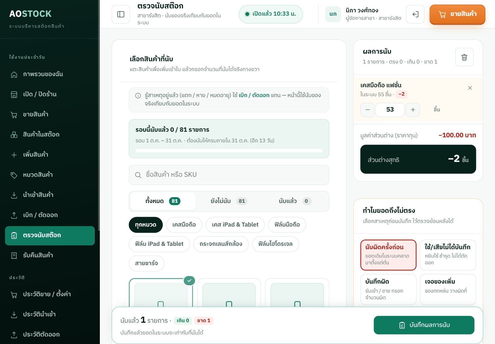
ตรวจนับสต๊อก — นับได้น้อยกว่าในระบบ ต้องเลือกสาเหตุก่อนบันทึก
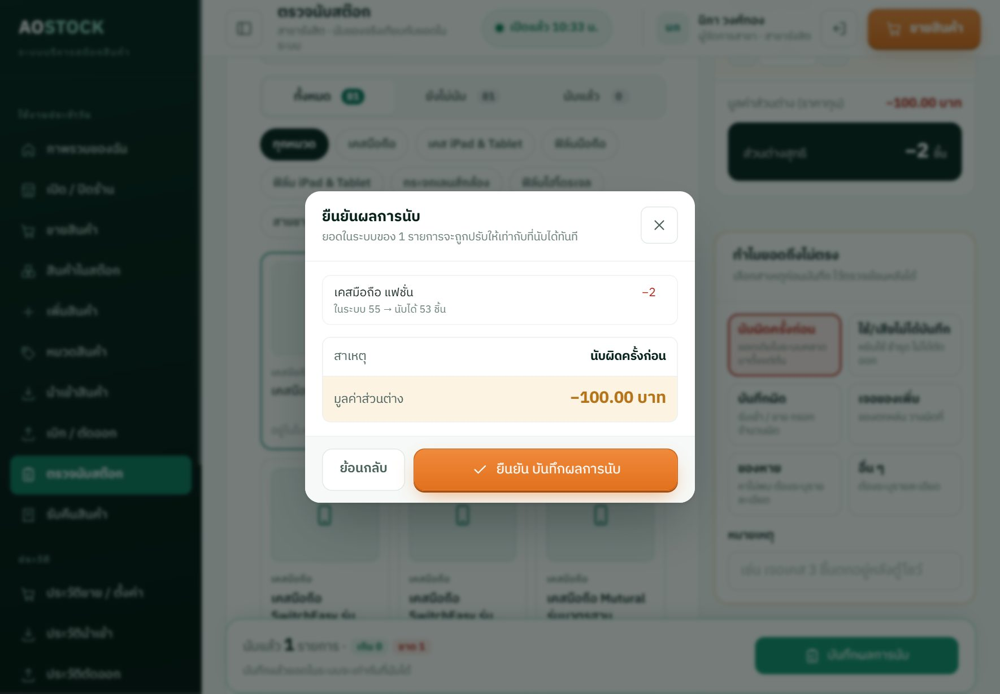
กล่องยืนยันผลการนับ — บอกยอดในระบบ → นับได้ สาเหตุ และมูลค่าส่วนต่าง
ตรวจนับ หรือ เบิก / ตัดออก? — หน้านี้ใช้นับของจริงเทียบกับยอดในระบบ (บรรทัดใต้หัวหน้าเตือนไว้)
ถ้ารู้สาเหตุอยู่แล้วว่าของออกไปเพราะอะไร (แตก หาย หมดอายุ เบิกใช้) ให้ใช้ “เบิก / ตัดออก” (หัวข้อก่อนหน้า) จะเห็นเหตุผลในประวัติชัดกว่า
นับตอนร้านเปิดอยู่ก็ได้ นับกี่รายการก็ได้ไม่จำกัด
· ถ้ามีคนขายหรือรับเข้าสินค้าตัวนั้นแทรกระหว่างนับ แถวนั้นขึ้นเตือนสีส้ม “ยอดในระบบเปลี่ยนระหว่างนับ (เดิม → ใหม่)”
ให้นับตัวนั้นใหม่แล้วแก้จำนวน คำเตือนหายทันที จากนั้นกดบันทึกได้ตามปกติ
8 ทำผิดแล้วแก้อย่างไร (แก้ไข / ยกเลิก)
เอกสารที่บันทึกแล้ว (บิล ใบรับเข้า ใบตัดออก ใบตรวจนับ) แก้ตัวเลขทับไม่ได้ เพื่อให้ตรวจย้อนหลังได้เสมอ
แต่มีทางแก้สองแบบ ทั้งสองแบบต้องใส่หมายเหตุ และเก็บไว้ในประวัติ
เส้นทางของการแก้ไขและการยกเลิก
เอกสารที่บันทึกแล้วเปิดจากเมนูประวัติของงานนั้น (ข้อ 9) หรือแถบเขียวหลังบันทึก
ยกเลิกใส่หมายเหตุ (มีตัวเลือกให้แตะ เช่น กรอกจำนวนผิด คิดเงินผิด)
ตัวเลขกลับเหมือนเดิมยกเลิกบิล = ของคืนสต๊อก · ยกเลิกใบรับเข้า = ถอนของออก
แก้ไขใส่หมายเหตุ
ระบบยกเลิกใบเดิม แล้วดึงรายการกลับมาให้แก้เฉพาะจุดที่ผิด แล้วบันทึกใหม่ ได้เลขเอกสารใหม่
แก้ไขบิล (บิลของวันนี้)
- เมนู ประวัติขาย / ตั้งค่า (หรือแถบเขียวหลังบันทึกบิล) กด แก้ไขบิลนี้ — ตะกร้าต้องว่างก่อน
- กล่อง “แก้ไขบิล” แตะเหตุผลสำเร็จรูป (กรอกจำนวนผิด · คิดเงินผิด · ลูกค้าเปลี่ยนใจ · ยิงสินค้าผิดตัว) หรือพิมพ์เอง แล้วกด ยืนยัน เปิดขึ้นมาแก้
- ระบบยกเลิกบิลเดิม แล้วพาไปหน้าขาย รายการเดิมอยู่ในตะกร้าแล้ว มีแถบฟ้าบอกว่าดึงกลับมากี่รายการ
- แก้เฉพาะแถวที่ผิด เลือกประเภทบิล วิธีจ่าย และส่วนลดใหม่ แล้วรับเงินตามปกติ — ได้เลขบิลใหม่
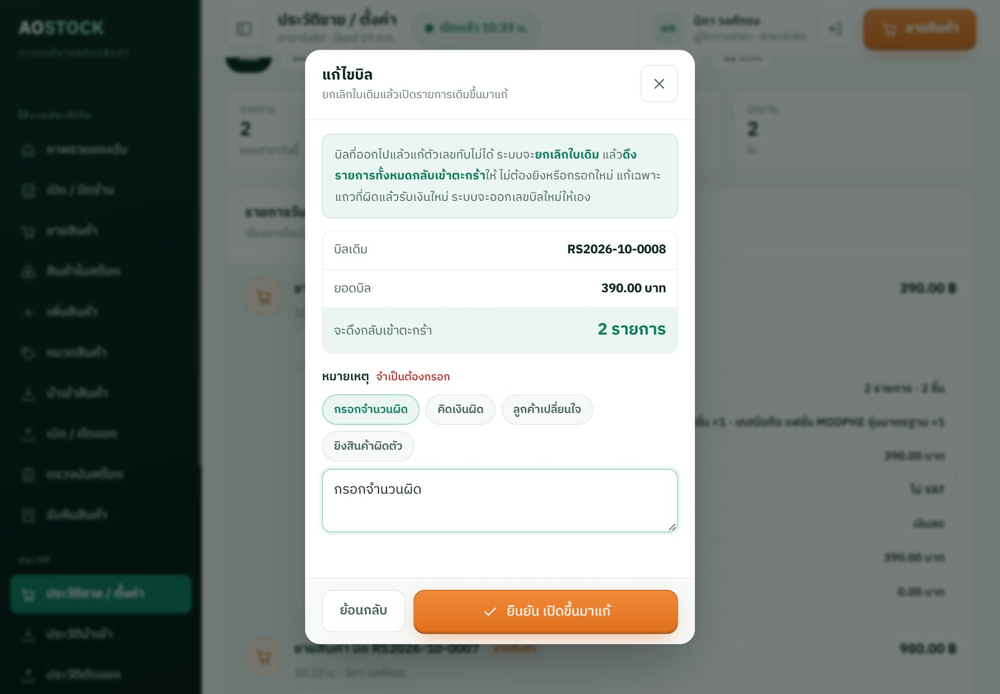
กล่องแก้ไขบิล — ต้องมีหมายเหตุก่อนจึงยืนยันได้
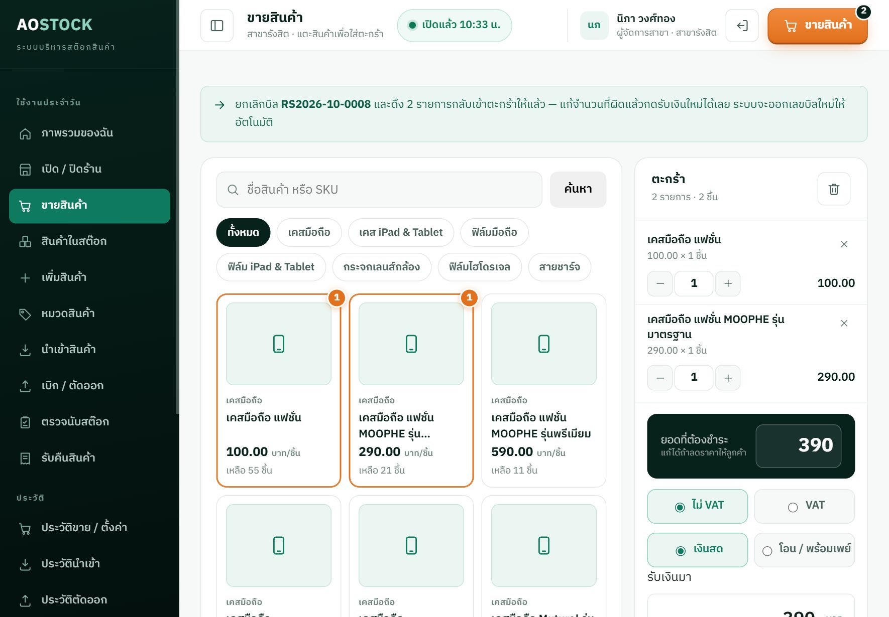
หลังยืนยัน — บิลเดิมถูกยกเลิก รายการเดิมกลับเข้าตะกร้า
ตอนแก้ไขบิล ตรวจ 2 เรื่องนี้ทุกครั้ง — ราคาในตะกร้าเป็นราคาขายปัจจุบัน ไม่ใช่ราคาในบิลเดิม (ถ้าเพิ่งเปลี่ยนราคา ยอดจะไม่เท่าเดิม)
· ส่วนลด ประเภทบิล และวิธีจ่ายกลับเป็นค่าเริ่มต้น (ไม่ VAT · เงินสด · ราคาเต็ม) ต้องเลือกใหม่ · บิลเดิมไม่ถูกลบ ยังเปิดดูได้ มีตรา “ยกเลิก”
ยกเลิกบิล
- กด ยกเลิกบิลนี้ ที่บิลในเมนูประวัติขาย / ตั้งค่า (หรือแถบเขียวหลังบันทึก)
- กล่อง “ยืนยันการยกเลิกบิล” บอกเลขบิล ยอดบิล และของที่จะคืนเข้าสต๊อก — ใส่หมายเหตุ
- กด ยืนยัน ยกเลิกบิล — ของคืนสต๊อก บิลไม่นับในยอดขายและเงินในลิ้นชัก ขึ้นข้อความ “ยกเลิกบิล … แล้ว · คืนสต๊อก … ชิ้น …”
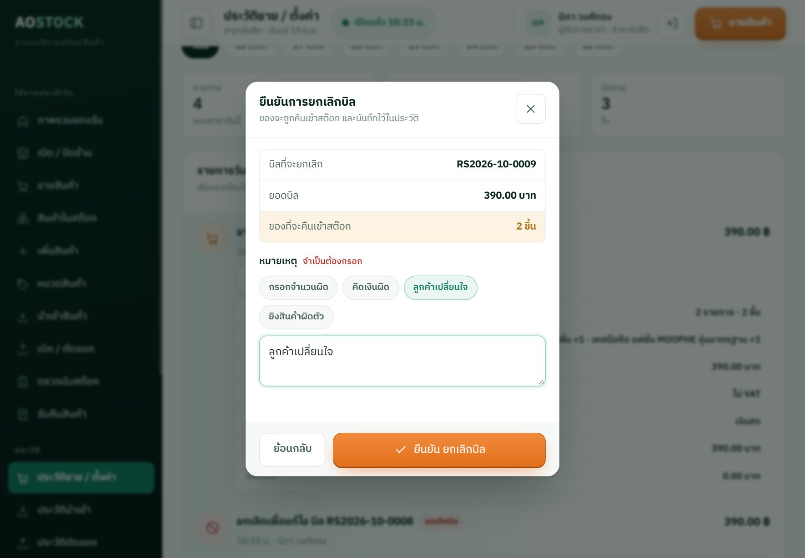
กล่องยืนยันการยกเลิกบิล
ใบรับเข้า · ใบตัดออก · ใบตรวจนับ
ทำแบบเดียวกัน ปุ่ม แก้ไขใบนี้ / ยกเลิกใบนี้ อยู่ที่ใบนั้นในเมนูประวัตินำเข้า / ประวัติตัดออก / ประวัติตรวจนับ หรือแถบหลังบันทึก
— แก้ไข = ยกเลิกใบเดิม แล้วรายการเดิมกลับเข้าใบในหน้านั้น (ต้องไม่มีใบที่ทำค้างอยู่) แก้แล้วบันทึกเป็นใบใหม่
- ยกเลิกใบรับเข้าไม่ได้ ถ้าของจากใบนั้นถูกขายหรือเบิกออกไปแล้ว — ใช้ตรวจนับสต๊อกแทน
- ยกเลิกใบตรวจนับที่ปรับยอดเพิ่มไม่ได้ ถ้าของส่วนที่เพิ่มถูกขายไปแล้ว — ให้นับใหม่อีกรอบแทน
- ยกเลิกใบตัดออกได้เสมอ (ของกลับเข้าสต๊อก)
เอกสารของวันก่อน
ต้องมีสิทธิ์เสริม “แก้ย้อนหลัง” (ผู้จัดการสาขาได้อัตโนมัติ) หน้าประวัติทุกเมนูจะมีแถบวันให้เลือกย้อนหลังได้ตามจำนวนวันที่สาขาตั้ง (ปกติ 7 วัน)
- แก้ / ยกเลิกย้อนหลังได้เฉพาะ เอกสารคลัง (ใบรับเข้า ใบตัดออก ใบตรวจนับ) — บิลของวันก่อนแก้หรือยกเลิกไม่ได้ ลูกค้าคืนของให้ใช้ “รับคืนสินค้า”
- ยกเลิก / แก้แล้ว สต๊อกถูกปรับวันนี้ และลงประวัติของวันนี้ · ใบเดิมขึ้น “ใบนี้ถูกยกเลิกย้อนหลังเมื่อ …”
- เกินจำนวนวันที่สาขาตั้ง ขึ้น “เกินกำหนด … วัน — ต้องให้ผู้ดูแลทำ” (ผู้ดูแลยกเลิกย้อนหลังได้ทุกวัน แต่แก้ไขไม่ได้)
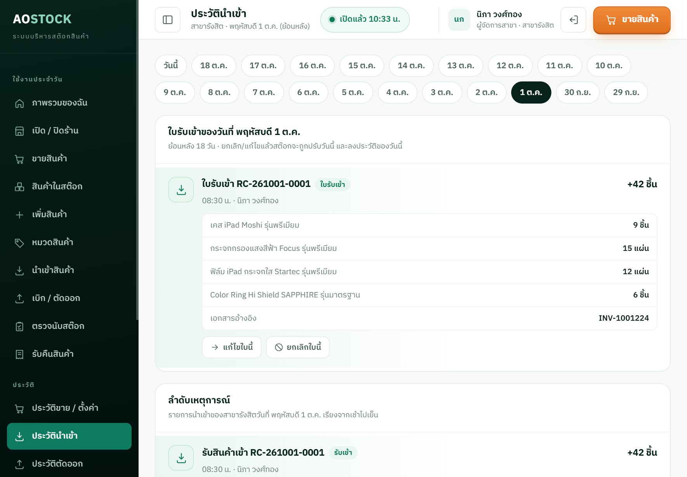
ประวัติของวันก่อน — แถบวันด้านบน เอกสารคลังของวันนั้นมีปุ่มแก้ไข / ยกเลิก
ใครแก้อะไรได้
| กรณี | ต้องมีสิทธิ์ |
|---|
| แก้ / ยกเลิกบิลของตัวเอง ของวันนี้ | “แก้ / ยกเลิกบิลของตัวเอง” (แก้ไขบิลต้องมีสิทธิ์ “ขายสินค้า” ด้วย) |
| แก้ / ยกเลิกใบรับเข้า ตัดออก ตรวจนับ ของตัวเอง ของวันนี้ | “แก้ / ยกเลิกเอกสารคลังของตัวเอง” และสิทธิ์ของงานนั้น |
| แก้งานของคนอื่นในสาขา | สิทธิ์เสริม “แก้งานคนอื่น” (ผู้จัดการสาขาได้อัตโนมัติ) |
| แก้เอกสารคลังของวันก่อน | สิทธิ์เสริม “แก้ย้อนหลัง” ได้ไม่เกินจำนวนวันที่สาขาตั้ง เกินนั้นผู้ดูแลทำเอง |
ทำไม่ได้ — ยกเลิก / แก้บิลหลังปิดร้านแล้ว (เปิดร้านใหม่ก่อน หรือใช้รับคืน) · ยกเลิกบิลที่มีการรับคืนไปแล้ว · แก้ / ยกเลิกบิลของวันก่อน
· ทุกการยกเลิก / แก้ไขขึ้นใน “รายการที่ต้องตรวจ” ของผู้ดูแล และส่งแจ้งเตือนได้
9 ดูข้อมูลย้อนหลังและรายงาน
หน้าดูข้อมูลของพนักงานและผู้จัดการสาขา เห็นเฉพาะสาขาตัวเอง — เปิดได้ตามสิทธิ์ “ดูข้อมูล” ที่ได้รับ (ผู้จัดการสาขาได้ครบอัตโนมัติ)
ภาพรวมของฉัน
หน้าแรกหลังเข้าระบบ บอกงานของตัวเองและงานที่ค้างของสาขา
- ชิ้นที่ฉันจัดการวันนี้ — นับรวมชิ้นที่ขาย รับเข้า เบิก ตรวจนับ และรับคืน (ไม่นับใบที่ยกเลิก)
- เมื่อวาน · 7 วันล่าสุด · เดือนนี้ และกราฟผลงาน 7 วัน · ตารางรายวันของเดือนนี้ · “งานของฉันวันนี้” แยกตามประเภทเอกสาร
- ทั้งสาขาวันนี้ — อันดับจำนวนชิ้นของทุกคนในสาขา (แสดงเฉพาะจำนวนชิ้น ไม่แสดงต้นทุนหรือมูลค่า)
- งานที่รอดำเนินการ — เช่น “ตรวจนับรอบนี้ยังไม่ครบ · เหลือ X จาก Y รายการ” พร้อมวันครบกำหนด (กดลิงก์ไปแท็บ “ยังไม่นับ” ของหน้าตรวจนับ) และ “ยังไม่ได้ปิดร้านของวัน…”
- สต๊อกที่ต้องดูแล — สินค้าที่ใกล้หมด / หมด 4 ตัวที่ด่วนที่สุดของสาขา · ป้ายสิทธิ์เสริมที่มี (เช่น แก้งานคนอื่น) อยู่บนการ์ดด้านบน
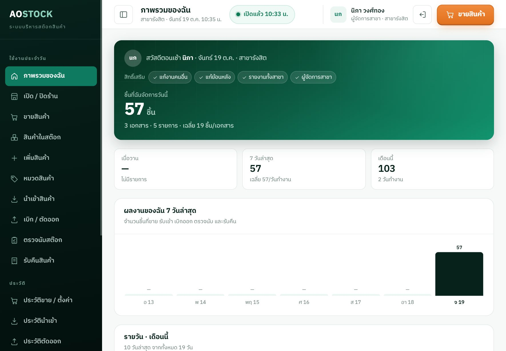
ภาพรวมของฉัน — งานวันนี้ ผลงานย้อนหลัง และสิทธิ์เสริมที่มี
สินค้าในสต๊อก
- การ์ดตัวเลขด้านบน กดเป็นตัวกรองได้: “รายการทั้งหมด” · “ใกล้หมด” · “หมดแล้ว” (กดซ้ำเพื่อยกเลิก) · “จำนวนรวม” บอกจำนวนชิ้นทั้งหมด
- ค้นด้วยชื่อหรือ SKU · กรองตามหมวด · “เรียงตาม” ได้ 5 แบบ — ค่าเริ่มต้น ด่วนก่อน (ใกล้หมดขึ้นก่อน)
- แต่ละแถวบอกคงเหลือ จุดสั่งซื้อ แถบระดับสต๊อก ราคาขาย และสถานะ · กดชื่อสินค้า = ไปหน้าเคลื่อนไหวรายสินค้าของตัวนั้น · ปุ่ม “นำเข้าสินค้า” (ถ้ามีสิทธิ์)
| สถานะ | เมื่อไร |
|---|
| หมดแล้ว | คงเหลือ 0 — ขายไม่ได้จนกว่าจะรับเข้า |
| ใกล้หมด | คงเหลือเท่ากับหรือน้อยกว่า “จุดสั่งซื้อ” ของสินค้านั้น (ผู้ดูแลตั้ง ใช้เลขเดียวกันทุกสาขา) |
| พอใช้ | มากกว่าจุดสั่งซื้อ · สินค้าที่จุดสั่งซื้อเป็น 0 จะไม่ขึ้น “ใกล้หมด” เลย |
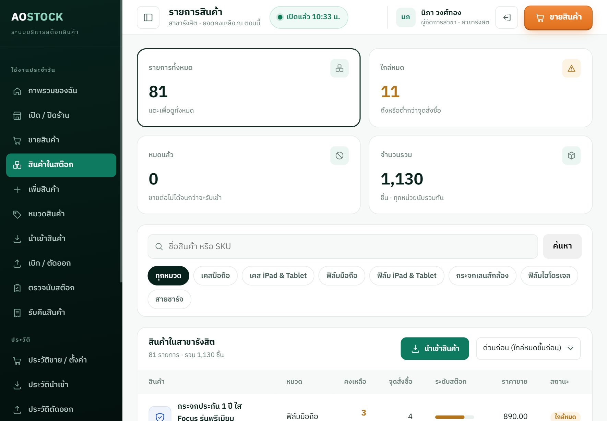
สินค้าในสต๊อก — การ์ดด้านบนกดกรองได้ รายการเรียงตัวที่ด่วนไว้ก่อน
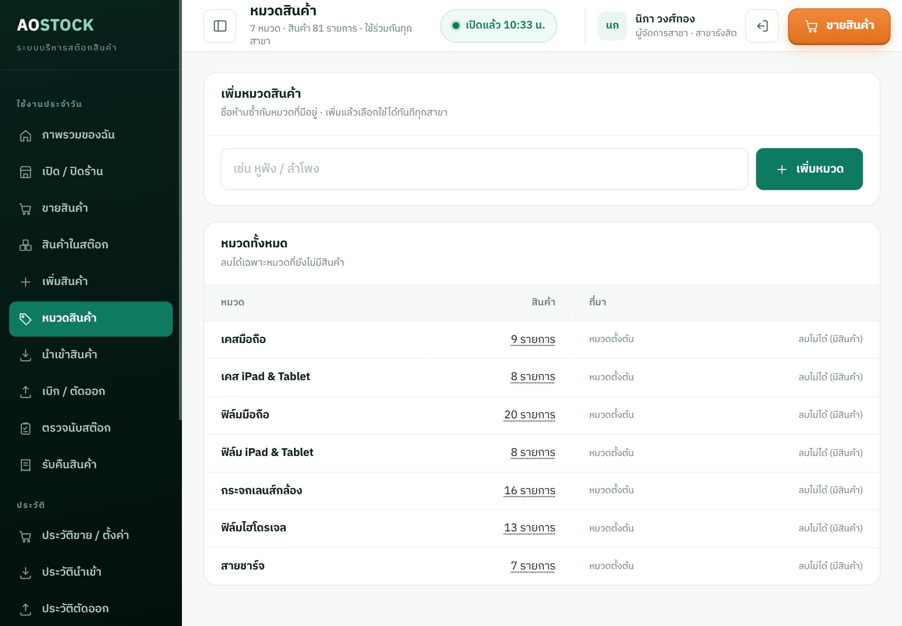
หมวดสินค้า — เพิ่มหมวด และดูจำนวนสินค้าในแต่ละหมวด
หมวดสินค้า
- หมวดใช้ร่วมกันทุกสาขา · เพิ่มหมวด (สิทธิ์ “เพิ่มหมวดสินค้า”) ชื่อห้ามซ้ำ ไม่เกิน 50 ตัวอักษร เพิ่มแล้วใช้ได้ทุกสาขาทันที
- ลบหมวด (สิทธิ์ “ลบหมวดสินค้า”) ได้เฉพาะหมวดที่ไม่มีสินค้าเลย นับรวมสินค้าที่เลิกขายแล้วด้วย มีหน้าต่างถามยืนยันก่อนลบ
- เปลี่ยนชื่อหมวดไม่ได้ · ย้ายสินค้าไปหมวดอื่นทำที่หน้าแก้ไขสินค้าของผู้ดูแล · กด “N รายการ” เพื่อดูสินค้าในหมวด
ประวัติ (แยกเมนูตามงาน)
ประวัติของสาขาวันนี้อยู่ในกลุ่มเมนู “ประวัติ” แยก 1 เมนูต่อ 1 งาน — ขึ้นเฉพาะเมนูที่มีสิทธิ์ดู (สิทธิ์ “ดูประวัติ” แยกรายเมนู ข้อ 13 · ผู้จัดการสาขาได้ครบอัตโนมัติ)
| เมนู | มีรายการอะไรบ้าง |
|---|
| ประวัติขาย / ตั้งค่า | บิลขาย · ยกเลิก / แก้ไขบิล · เพิ่มหมวด / สินค้า และการตั้งค่า (รายการตั้งค่าเห็นเฉพาะผู้จัดการสาขา) |
| ประวัตินำเข้า | ใบรับเข้า และการยกเลิก / แก้ไขใบรับเข้า |
| ประวัติตัดออก | ใบเบิก / ตัดออก และการยกเลิก / แก้ไข |
| ประวัติตรวจนับ | ใบตรวจนับ และการยกเลิก / แก้ไข |
| ประวัติรับคืน | ใบรับคืนสินค้า |
| ประวัติเปิด / ปิดร้าน | เปิดร้าน · ปิดร้าน · เปิดร้านใหม่ · เงินเข้า / ออกลิ้นชักระหว่างวัน |
| เคลื่อนไหวรายสินค้า | ยอดเข้า / ออกของสินค้าทีละตัว (ข้อ 4) |
- แต่ละหน้าเรียงใหม่ไปเก่า · การ์ดด้านบนบอก “รายการ” “ของฉัน” และจำนวนเอกสารของงานนั้น (เช่น บิลขาย · ใบรับเข้า)
- แต่ละรายการบอกเวลา คนทำ และรายละเอียด (เช่น ยอดบิล วิธีจ่าย เหตุผล) · บิลมีปุ่ม “ดู / พิมพ์บิล” และแก้ไข / ยกเลิกตามสิทธิ์
- มีสิทธิ์ “แก้ย้อนหลัง” จะมีแถบวันด้านบนให้ดูวันก่อน ๆ (ข้อ 8) · ในหน้าเปิด / ปิดร้านมีปุ่มลัด “ประวัติ”
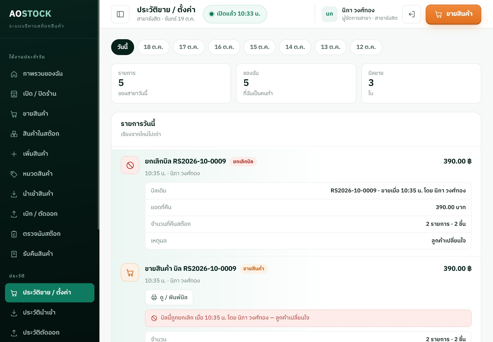
ประวัติขาย / ตั้งค่า — กลุ่มเมนูประวัติทางซ้าย แถบวัน และรายการของวันนี้
รายงานยอดขาย
- ดูของ — เฉพาะฉัน (ค่าเริ่มต้น) หรือ ทั้งสาขา (ต้องมีสิทธิ์ “ดูรายงานยอดขายทั้งสาขา” ผู้จัดการสาขาได้อัตโนมัติ)
- ช่วงเวลา — รายวัน (เลือกได้ 7 วันล่าสุด) · รายเดือน (ค่าเริ่มต้น ย้อนได้ 6 เดือน) · ทั้งหมด
- อ่านการ์ด ยอดขายรวม · จำนวนบิล · จำนวนชิ้น · เฉลี่ยต่อบิล กราฟ และตารางแยกตามวัน / เดือน · แบบทั้งสาขามี “แยกตามพนักงาน” ด้วย
- กด ดาวน์โหลด CSV ได้ไฟล์เปิดใน Excel: วันที่ · บิล · ชิ้น · ยอดขาย (ทุกวันในช่วง รวมวันที่ไม่มียอด)
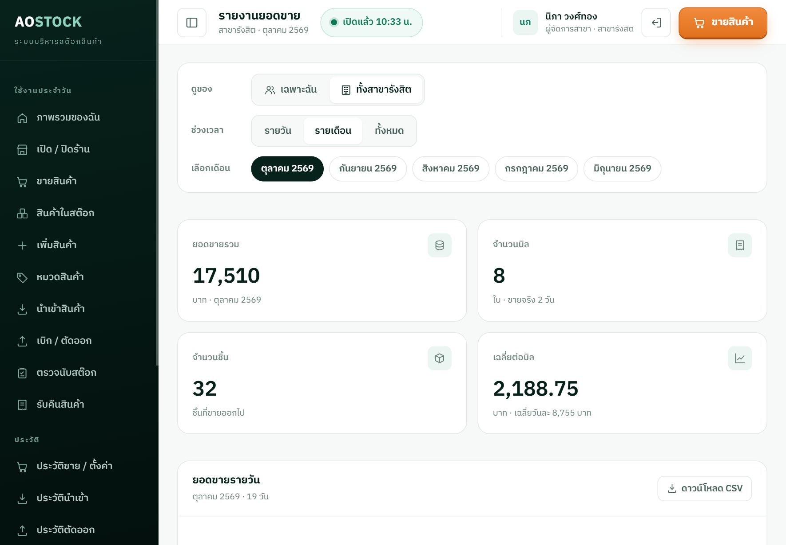
รายงานยอดขาย — เลือกดูของตัวเองหรือทั้งสาขา และช่วงเวลา
ยอดขายไม่นับบิลที่ยกเลิก และไม่หักเงินคืน — เงินคืนแยกแสดงต่างหาก จึงเทียบกับเงินในลิ้นชักได้ตรง
· ยอดผูกกับสาขาที่ขายจริง พนักงานย้ายสาขาแล้ว ยอดเก่ายังอยู่ที่สาขาเดิม
10 ผู้จัดการสาขาทำอะไรเพิ่มได้
ผู้จัดการสาขาคือพนักงานที่ผู้ดูแลตั้งตำแหน่ง “ผู้จัดการสาขา” ให้ สาขาหนึ่งมีได้หลายคน เข้าระบบด้วยชื่อผู้ใช้ + PIN เหมือนพนักงาน
- เห็นทุกอย่างในสาขา และได้สิทธิ์ดูข้อมูล ดูประวัติ (ครบทุกเมนูในกลุ่ม “ประวัติ”) กับสิทธิ์เสริมครบโดยอัตโนมัติ: แก้งานคนอื่น · แก้ย้อนหลัง · รายงานทั้งสาขา
- งานขายและงานคลังของตัวเองยังเป็นไปตามที่ผู้ดูแลติ๊กให้
- มีเมนู พนักงานในสาขา สำหรับดูแลพนักงานในสาขาตัวเอง
พนักงานในสาขา
รายชื่อพนักงานของสาขา บอกตำแหน่ง เมนูที่ใช้ได้ (เช่น “หน้าร้าน ครบ” “งานคลัง 4/5”) และสิทธิ์เสริม
— แถวของผู้จัดการ (รวมตัวเอง) ขึ้น “ผู้ดูแลจัดการ” แทนปุ่มแก้ไข
เพิ่มพนักงาน
- กด เพิ่มพนักงาน
- ใส่ ชื่อ–นามสกุล · ชื่อผู้ใช้ (a–z 0–9 _ ยาว 3–20 ตัว ห้ามซ้ำกับใครในระบบ) · PIN 4 หลัก (ห้ามซ้ำกับคนอื่นในสาขาเดียวกัน) · อักษรย่อ (ไม่บังคับ)
- ติ๊กสิทธิ์ — ระบบติ๊กชุดมาตรฐานไว้ให้แล้ว ปรับได้ (สิทธิ์เสริมเป็นของผู้ดูแล)
- ใส่ “PIN ของคุณ” แล้วกด เพิ่มพนักงาน — แจ้งชื่อผู้ใช้และ PIN ให้พนักงานใช้เข้าครั้งแรก
แก้ไขพนักงาน (กด “แก้ไข” ที่แถวนั้น)
- ข้อมูลและสิทธิ์ — แก้ชื่อ ชื่อผู้ใช้ อักษรย่อ ติ๊กสิทธิ์ แล้วกด “บันทึก” มีผลทันที (เปลี่ยนชื่อผู้ใช้แล้วต้องแจ้งพนักงาน)
- รีเซ็ต PIN — ใช้ตอนพนักงานลืม PIN หรือโดนล็อก ตั้ง PIN ใหม่แล้วปลดล็อกให้ทันที
- พักงาน / ลาออก — เข้าระบบไม่ได้ ชื่อหายจากหน้าเข้าสู่ระบบ แต่ชื่อในบิลและเอกสารเก่ายังอยู่ · “เปิดใช้งานอีกครั้ง” ได้ด้วย PIN และสิทธิ์เดิม
- ลบพนักงาน — ได้เฉพาะคนที่ยังไม่เคยทำรายการเลย นอกนั้นใช้พักงานแทน
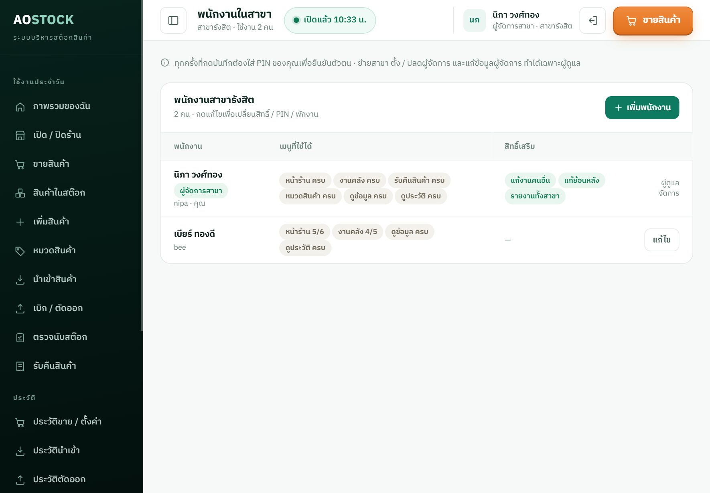
พนักงานในสาขา — รายชื่อ เมนูที่ใช้ได้ และสิทธิ์เสริม
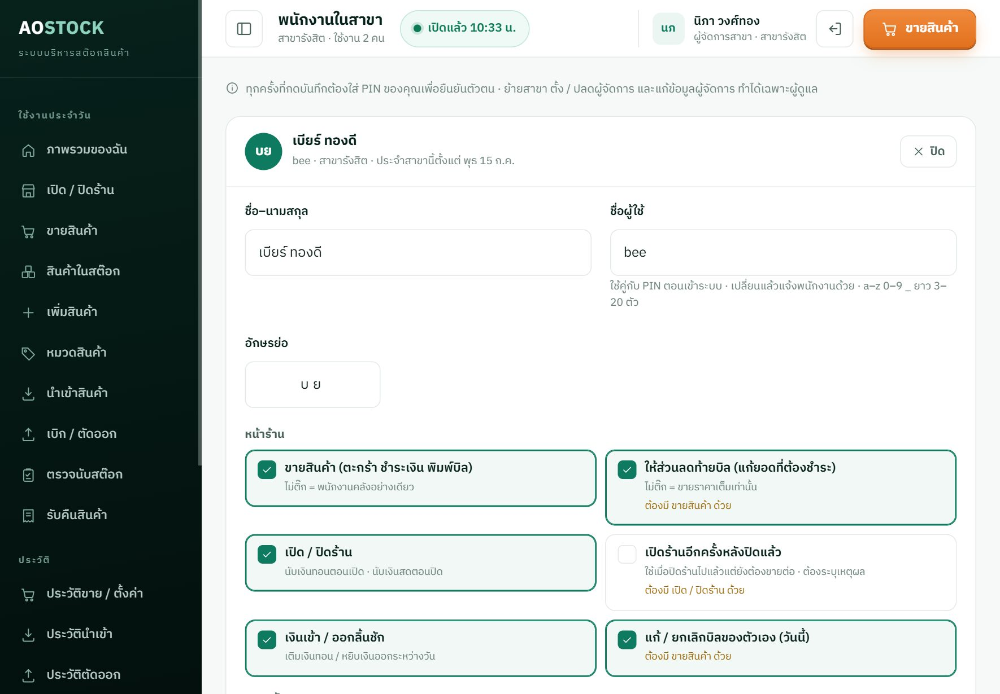
แก้ไขพนักงาน — ข้อมูล ติ๊กสิทธิ์ และ PIN ยืนยันก่อนบันทึก
ทุกครั้งที่กดบันทึกต้องใส่ PIN ของตัวเอง — ใส่ผิดครบ 5 ครั้งถูกล็อก 15 นาที และนับรวมกับการล็อกตอนเข้าระบบด้วย
· ทำไม่ได้ (เป็นงานของผู้ดูแล): แก้ข้อมูลผู้จัดการสาขา (รวมของตัวเอง) · ย้ายพนักงานไปสาขาอื่น · ตั้ง / ปลดผู้จัดการ · ให้สิทธิ์เสริม
(สิทธิ์เสริมที่ผู้ดูแลให้ไว้แล้วยังอยู่เหมือนเดิม)
11 ผู้ดูแลระบบ
ผู้ดูแลเห็นทุกสาขาพร้อมกัน และเป็นคนตั้งค่าทั้งหมด — ผู้ดูแลไม่ได้ขายหรือรับคืนเอง หน้าขาย เปิด / ปิดร้าน และตรวจนับเป็นงานของพนักงาน
(ผู้ดูแลเปิดหน้าเหล่านั้น ระบบพากลับหน้าภาพรวมพร้อมบอกว่าเป็นงานของพนักงาน · หน้าอื่น เช่น นำเข้า ตัดออก ประวัติ ระบบพาไปหน้าตรวจสอบของผู้ดูแลแทน)
งานจากสาขาไปถึงผู้ดูแลทางไหนบ้าง
ทุกสาขาทำงานขาย รับคืน รับเข้า ตัดออก ตรวจนับ เปิด–ปิดร้าน ยกเลิก / แก้ไข
หน้า “ภาพรวม” ของผู้ดูแล — เห็นทันทียอดขายวันนี้ · ร้านไหนเปิด / ปิด · เงินขาด / เกินตอนปิดร้าน · รายการที่ต้องตรวจ
(ยกเลิก / แก้เอกสาร · รับคืนและเงินคืน · เปิดร้านใหม่หลังปิด · ปิดร้านย้อนหลัง · ตัดออกเพราะสูญหาย · เงินไม่ตรง)
Telegram (ทันที)เลือกได้ว่าเหตุการณ์ไหนส่ง
อีเมลสรุปรายวันส่งวันละครั้งตามเวลาที่ตั้ง (เริ่มต้น 21:00 น.)
หน้าภาพรวมผู้ดูแล
- การ์ดด้านบน — ยอดขายวันนี้ · เงินขาด / เกินตอนปิดร้าน (ผลการปิดร้านล่าสุดของแต่ละสาขารวมกัน) · จำนวนรายการที่ต้องตรวจ · เลือกดูทีละสาขาได้จากช่องบนขวา
- สถานะร้านวันนี้ — ทุกสาขาในตารางเดียว: ร้านเปิด / ปิดเมื่อไร ใครเปิด เปิดใหม่กี่ครั้ง ยอดขาย เงินสด / โอน บิลยกเลิก และเงินตอนปิดร้าน (ตรงพอดี / ขาด / เกิน)
- รายการที่ต้องตรวจ — เรื่องที่ควรดูของวันนี้ ใหม่สุดอยู่บน พร้อมเหตุผลและคนทำ กด “ดูประวัติ” ไปดูรายละเอียดทั้งวันนี้ของสาขานั้น
(รายการนี้เริ่มใหม่ทุกวัน ไม่มีปุ่มกดว่าตรวจแล้ว)
- สต๊อกแยกตามสาขา — มูลค่าสต๊อก (ราคาทุน) จำนวนที่ใกล้หมด / หมด และสินค้าที่ต้องสั่งก่อน
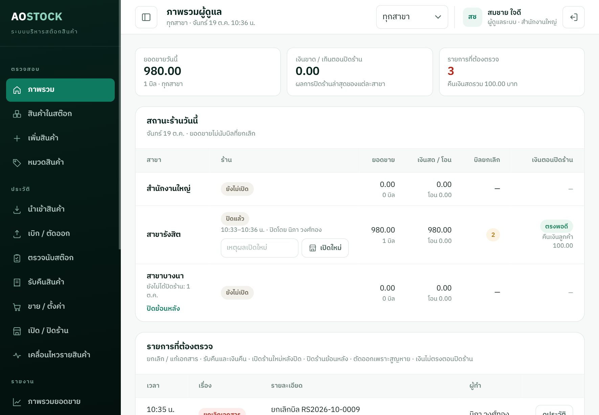
ภาพรวมผู้ดูแล — สถานะร้านทุกสาขาวันนี้ และรายการที่ต้องตรวจ
เปิดร้านใหม่ให้สาขา
- แถวของสาขาที่ “ปิดแล้ว” ในตารางสถานะร้าน
- ใส่เหตุผลในช่อง “เหตุผลเปิดใหม่” แล้วกด เปิดใหม่
- พนักงานขายต่อได้ และต้องปิดร้านอีกครั้งเมื่อเสร็จ
ปิดร้านย้อนหลังให้สาขาที่ลืมปิด
- ใต้ชื่อสาขาขึ้น “ยังไม่ได้ปิดร้าน: …” กด ปิดย้อนหลัง
- แต่ละวันใส่ “นับได้จริง” · “แยกเงินทอนไว้” · “หมายเหตุ” (จำเป็น)
- กด ปิดวันนี้ย้อนหลัง ทีละวัน (แสดงครั้งละ 5 วันล่าสุด)
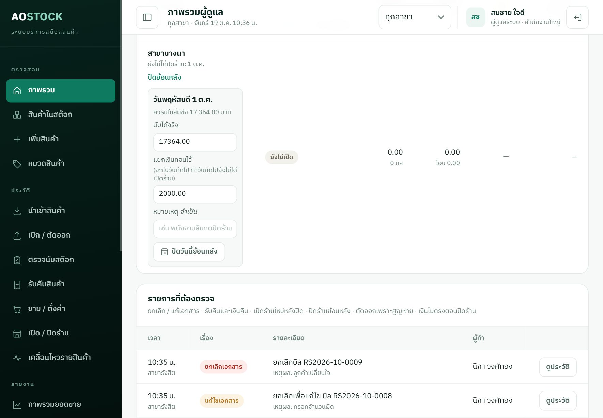
ปิดร้านย้อนหลังจากหน้าภาพรวม — ทีละวัน ต้องใส่หมายเหตุ
สินค้าในสต๊อก · เพิ่ม / แก้สินค้า
- หน้า “สินค้าในสต๊อก” ของผู้ดูแลเทียบยอดคงเหลือทุกสาขาในตารางเดียว (ช่องสีแดง = หมด เหลือง = ใกล้หมด) มีวันรับเข้าล่าสุด มูลค่าทุน
และแท็บ ทั้งหมด / ต้องเติม / หมดแล้ว / เลิกขาย · กรองตามสาขาเพื่อดูสถานะของสาขานั้นได้
- เมนู เพิ่มสินค้า หรือปุ่ม แก้ไข ที่แถวสินค้า: SKU (A–Z 0–9 . _ - ตั้งครั้งเดียว เปลี่ยนไม่ได้) · ชื่อสินค้า · หมวด · หน่วย · ทุนต่อหน่วย ·
ราคาขาย (รวม VAT) · จุดสั่งซื้อ (ใช้ทุกสาขา) · บาร์โค้ด (ไม่บังคับ ห้ามซ้ำ — ใช้ค้นในหน้าขาย นำเข้า ตัดออก ตรวจนับ) · รูปสินค้า (ไม่มีรูป การ์ดใช้ไอคอนของหมวด)
- รูปสินค้า — JPG / PNG / WEBP ถ่ายจากมือถือได้เลย ระบบย่อรูปให้เองก่อนส่ง (มีรูปตัวอย่าง ปุ่มบันทึกรอจนย่อเสร็จ) · การ์ดสินค้าทุกหน้าแสดงรูปทั้งรูปไม่ตัดขอบ
· รูปใช้ไม่ได้ ขึ้นแถบแดงและข้อความแดงข้างช่องรูปบอกเหตุ — ข้อมูลอื่นของสินค้าบันทึกแล้ว แต่รูปยังเป็นรูปเดิม ให้เลือกรูปใหม่แล้วบันทึกอีกครั้ง
- หัวข้อ “รูปและสถานะ” ในหน้าแก้ไข — รูปอยู่ซ้าย ปุ่มลบรูปอยู่ขวา · แถวล่างคือสถานะ (ป้าย “ขายอยู่” / “เลิกขายแล้ว”) พร้อมปุ่มเลิกขาย / เปิดขายอีกครั้ง
- ยอดคงเหลือแก้ที่หน้านี้ไม่ได้ สินค้าใหม่เริ่มที่ 0 ทุกสาขา ให้พนักงานทำใบรับเข้า · แก้ราคาแล้วมีผลกับบิลถัดไปทันที
- ลบสินค้าไม่ได้ ใช้ปุ่ม “เลิกขายสินค้านี้” แทน (ซ่อนจากหน้าขาย นำเข้า ตรวจนับ ประวัติและรายงานยังอยู่ครบ) และ “เปิดขายอีกครั้ง” ได้
- หมวดสินค้า: เพิ่ม / ลบได้เหมือนฝั่งพนักงาน · ยังไม่มีหมวดเลย เพิ่มสินค้าไม่ได้ ต้องเพิ่มหมวดก่อน
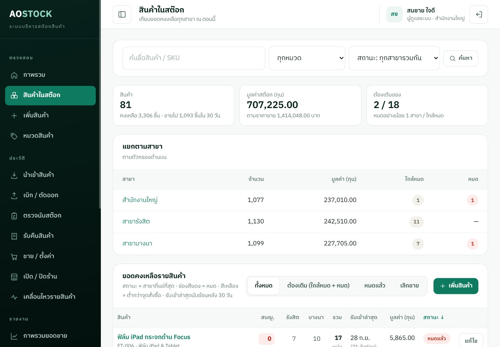
สินค้าในสต๊อก (ผู้ดูแล) — ยอดคงเหลือทุกสาขาในตารางเดียว
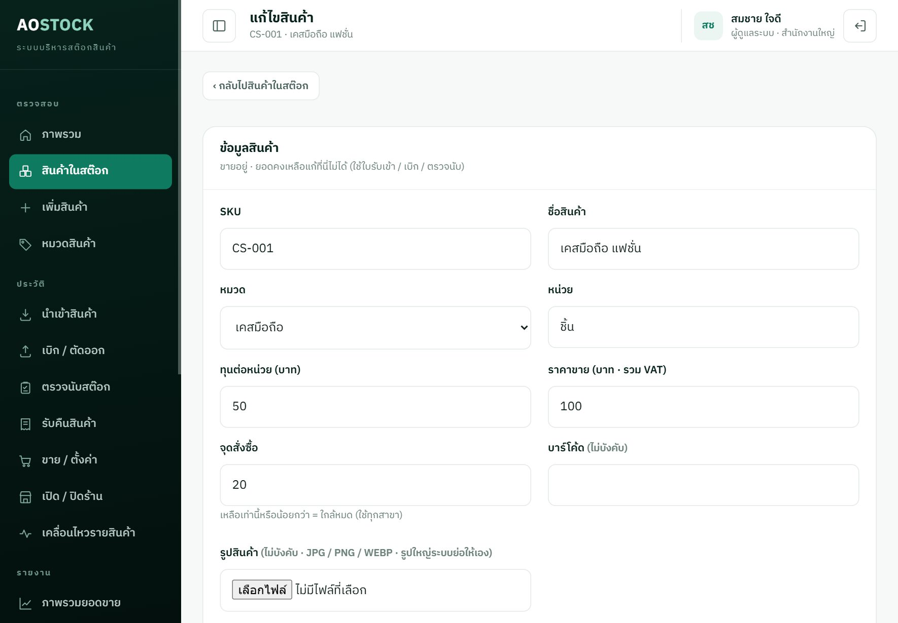
แก้ไขสินค้า — รูปและสถานะ · SKU เปลี่ยนไม่ได้ ยอดคงเหลือแก้ที่นี่ไม่ได้
จัดการพนักงาน
- กด เพิ่มพนักงาน เลือก ตำแหน่ง “พนักงาน” หรือ “ผู้จัดการสาขา”
- ใส่ ชื่อ–นามสกุล · ชื่อผู้ใช้ (a–z 0–9 _ 3–20 ตัว ห้ามซ้ำ) · สาขาที่ประจำ · PIN 4 หลัก (ห้ามซ้ำในสาขาเดียวกัน) · อักษรย่อ (ไม่บังคับ)
- ติ๊กสิทธิ์ (ระบบติ๊กชุดมาตรฐานไว้ให้ · ต้องมีอย่างน้อย 1 อย่าง) แล้วกด “เพิ่มพนักงาน”
เปิด “แก้ไข” ที่ชื่อพนักงาน ทำได้: แก้ข้อมูลและสิทธิ์ · รีเซ็ต PIN (ปลดล็อกด้วย) · ย้ายสาขา (มีผลตั้งแต่วันนี้ ยอดขายและเอกสารเก่ายังอยู่ที่สาขาเดิม) ·
พักงาน / ลาออก (พักแล้วเครื่องที่จดจำไว้ถูกล้างด้วย) · เปิดใช้งานอีกครั้ง · ลบ (เฉพาะคนที่ยังไม่เคยทำรายการ)
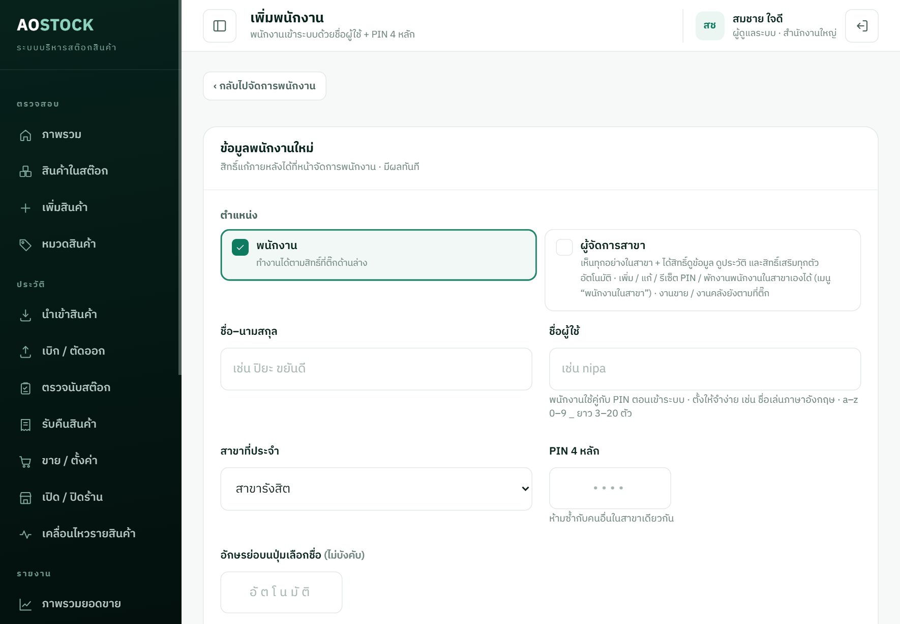
เพิ่มพนักงาน — ตำแหน่ง ข้อมูล สาขา และ PIN
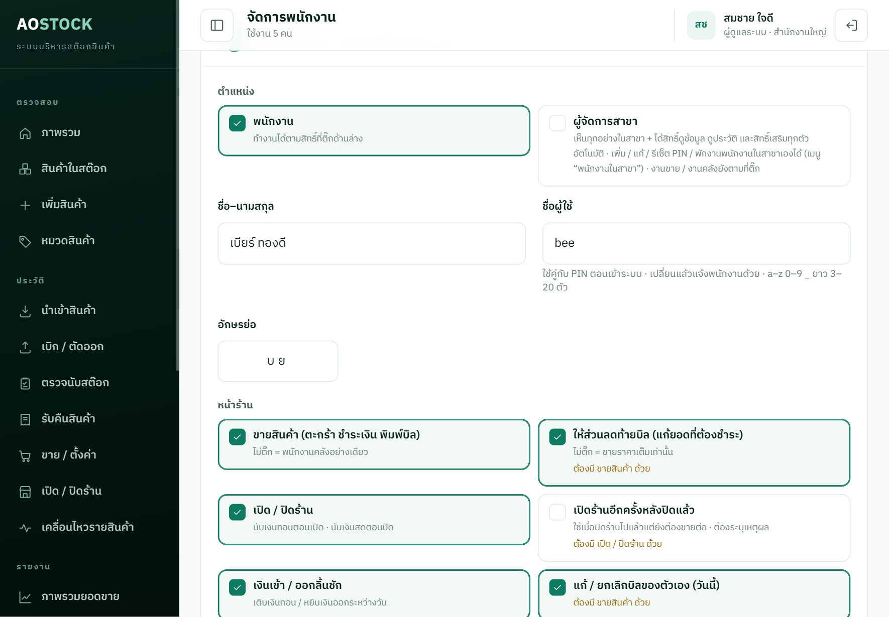
แก้ไขพนักงาน — ติ๊กสิทธิ์รายคน สิทธิ์ที่ต้องมีสิทธิ์หลักก่อนจะบอกไว้ใต้ชื่อ
หน้านี้จัดการเฉพาะพนักงาน · บัญชีผู้ดูแลและฝ่ายบัญชี (เข้าด้วยรหัสผ่าน) จะเพิ่ม / ตั้งรหัสใหม่ / พักงาน ติดต่อคนดูแลเว็บ
จัดการสาขา
- เพิ่มสาขา: รหัสสาขา ภาษาอังกฤษพิมพ์ใหญ่หรือตัวเลข 2–6 ตัว ตั้งครั้งเดียว (ระบบตั้งรหัสเลขที่บิลให้เป็น รหัสV สำหรับบิล VAT และ รหัส สำหรับบิลไม่ VAT)
· ชื่อสาขา · ชื่อย่อ (ใช้บนแถบ / การ์ด) · เบอร์โทร · ที่อยู่ (พิมพ์บนใบเสร็จ) · ค่าตั้งของสาขา
- แต่ละสาขามี “ผู้จัดการสาขา” ติ๊กได้หลายคน (เลือกจากพนักงานที่ประจำสาขานั้น)
- ปิดใช้งานสาขา — ต้องย้ายพนักงานออกให้หมด และร้านวันนั้นต้องปิดแล้ว · ประวัติ บิล รายงานยังอยู่ครบ เปิดใช้งานกลับได้
· ลบสาขา ได้เฉพาะสาขาที่ยังไม่มีข้อมูลเลย · จำนวนสาขาสูงสุดกำหนดโดยคนดูแลเว็บ (นับรวมสาขาที่ปิดใช้งาน)
| ค่าตั้งของสาขา | ค่าที่ใส่ได้ · สาขาใหม่ | มีผลกับอะไร |
|---|
| รอบตรวจนับเริ่มวันที่ | 1–28 · วันที่ 1 | วันเริ่มรอบตรวจนับรายเดือน ต้องนับให้ครบทุกสินค้าภายในรอบ |
| แก้เอกสาร / รับคืนย้อนหลังได้ | 0–60 วัน · 7 วัน | ลูกค้าคืนของได้ภายในกี่วัน และพนักงานที่มีสิทธิ์แก้ย้อนหลังย้อนได้กี่วัน (เกินนั้นผู้ดูแลทำเอง) |
| เงินทอนมาตรฐาน | 0–100,000 บาท · 2,000 | ยอดตั้งต้นของเงินทอนที่แยกไว้ตอนปิดร้าน (ตั้งได้ทีละ 100 บาท) |
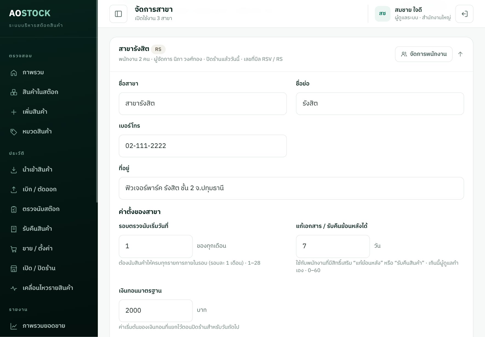
จัดการสาขา — ข้อมูลสาขาและค่าตั้งของสาขา
รายงาน
ทุกหน้ารายงานเลือกช่วงได้ด้วยปุ่ม 30 วัน รายวัน รายเดือน รายปี (หรือเดือน / ปีตามหน้านั้น)
เลือกสาขาได้ และมีปุ่ม ดาวน์โหลด CSV · ไม่นับบิลที่ยกเลิกทุกหน้า
| หน้า | ใช้ดูอะไร |
|---|
| ภาพรวมยอดขาย | ยอดขาย เงินสด / โอน · จำนวนบิล เฉลี่ยต่อบิล บิล VAT บิลยกเลิก · ชิ้นที่ขาย ส่วนลดรวม · กราฟรายวัน (กดแท่งเพื่อดูวันนั้น) · สินค้าขายดี 10 อันดับ |
| สรุปยอดขายรายวัน | ตารางทั้งเดือน วันละแถว สาขาละคอลัมน์ สลับดูยอดขาย / บิล / ชิ้น ได้ · ช่องเข้มกว่า = ยอดสูงกว่า ·
กดที่ตัวเลขเพื่อดูบิลทุกใบของวันนั้น พร้อมรายการสินค้า และเปิดพิมพ์บิลได้ |
| ยอดขายแยกสาขา | เทียบสาขาต่อวัน / ต่อเดือน / ต่อปี พร้อม % ของทั้งหมด · สาขาที่ยอดสูงสุดของแต่ละแถวเป็นสีเขียว |
| ยอดขายตามพนักงาน | อันดับพนักงานขาย: วันที่ขาย บิล ชิ้น เฉลี่ยต่อบิล ส่วนลดที่ให้ ยอดขาย · รวมคนที่ยังไม่มียอดด้วย |
| สินค้าขายดี 100 อันดับ | เรียงตามจำนวนที่ขายหรือยอดขาย กรองตามหมวด · แยกจำนวนตามสาขา และคงเหลือตอนนี้ · กดชื่อสินค้าไปเคลื่อนไหวรายสินค้า |
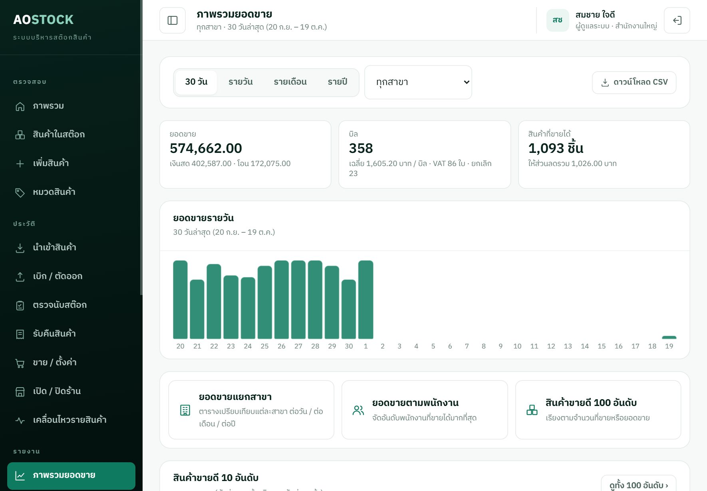
ภาพรวมยอดขาย — กราฟรายวัน และทางลัดไปรายงานอื่น
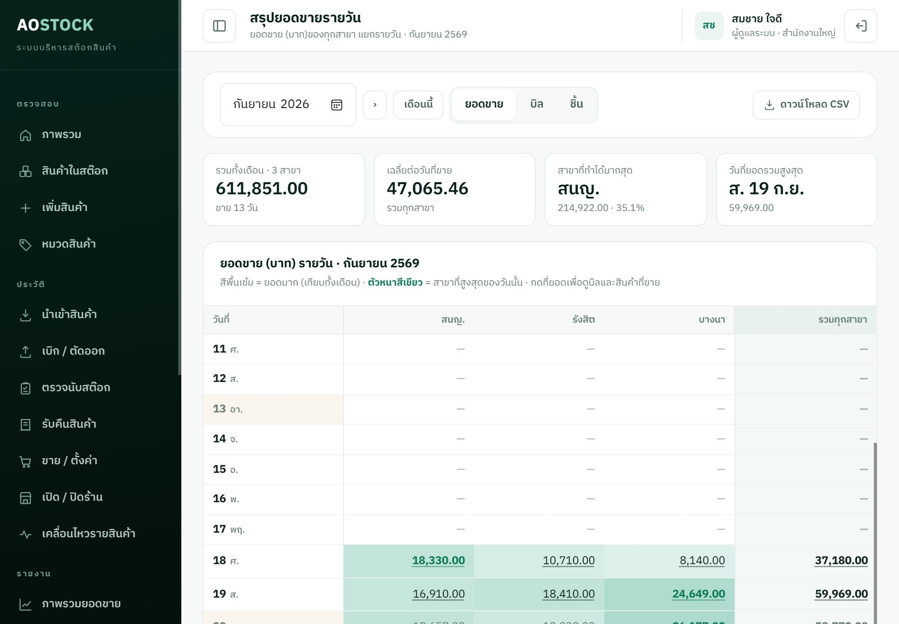
สรุปยอดขายรายวัน — ทั้งเดือนในตารางเดียว
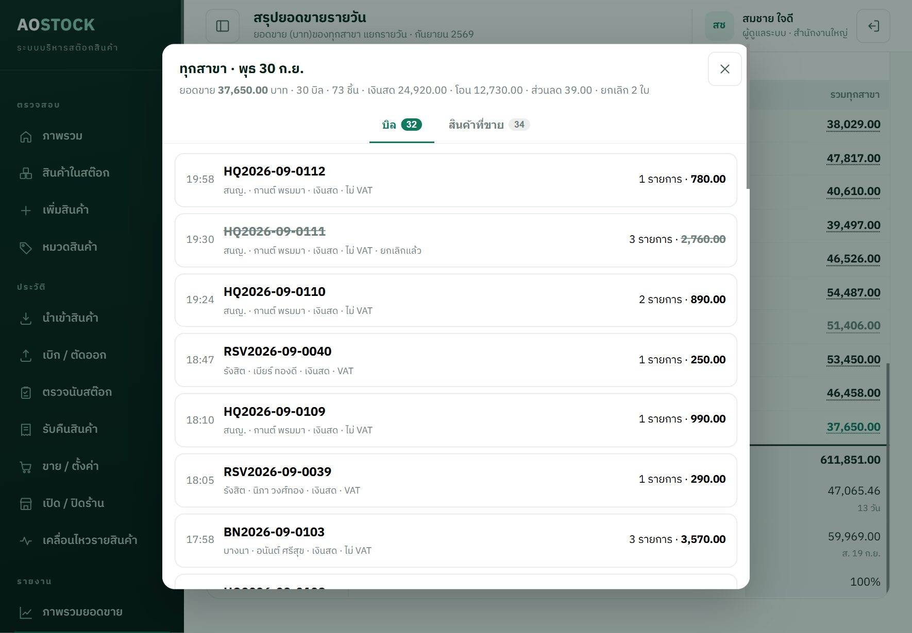
กดยอดของวันใดก็ได้ — เห็นบิลทุกใบของวันนั้น (บิลยกเลิกมีขีดฆ่า)
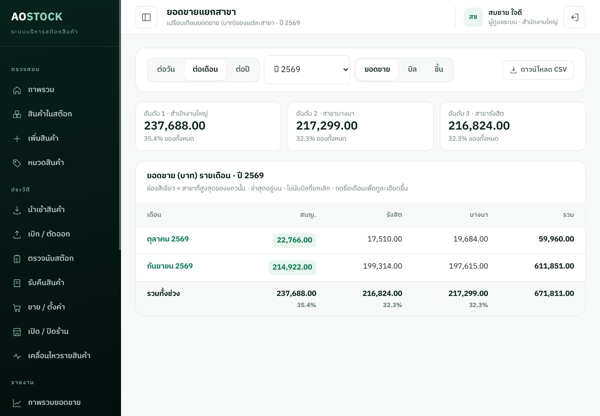
ยอดขายแยกสาขา — เทียบสาขาต่อเดือน
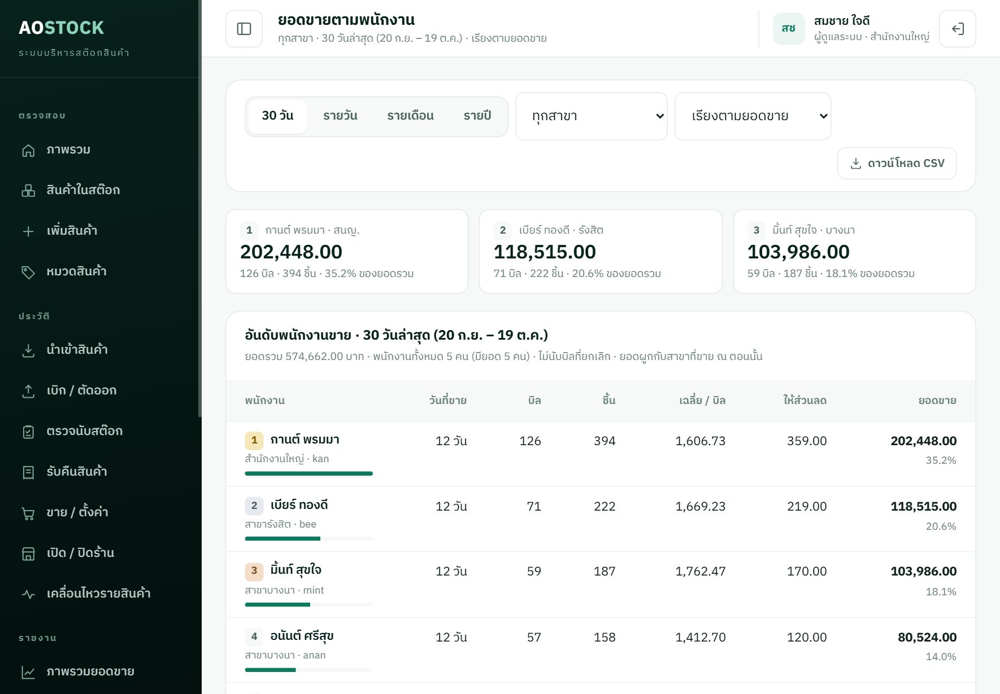
ยอดขายตามพนักงาน — อันดับและส่วนลดที่แต่ละคนให้
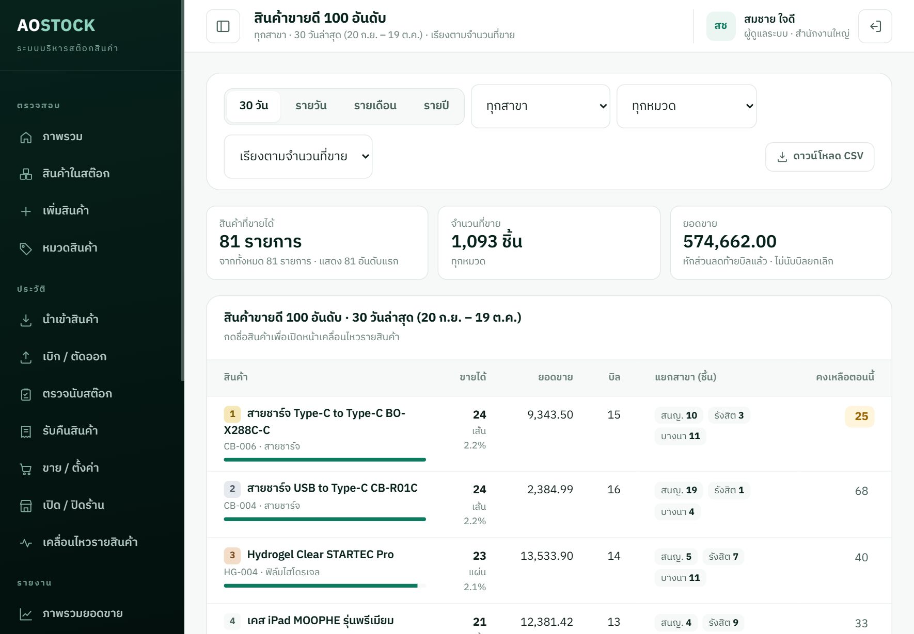
สินค้าขายดี 100 อันดับ — แยกตามสาขา และคงเหลือตอนนี้
ตรวจเอกสารของทุกสาขา
เอกสารของทุกสาขาอยู่ในกลุ่มเมนู “ประวัติ” ของผู้ดูแล — 1 เมนู = 1 งาน ไม่มีหน้า “ประวัติทั้งหมด” รวมกันแล้ว
| เมนู | ดูอะไร |
|---|
| นำเข้าสินค้า · เบิก / ตัดออก · รับคืนสินค้า | รายการเอกสารของทุกสาขา (ดูอย่างเดียว) ค้นหา กรองตามเหตุผล เรียงตามมูลค่า / เวลา
· กดเปิดดูใบได้ — ใบรับคืนมีรูปที่แนบ (กดดูภาพใหญ่) บิลเดิม คืนหลังซื้อกี่วัน และยอดที่ปรับ · ใบรับเข้าที่ไม่มีเลขเอกสารขึ้น “—” ให้อ่านหมายเหตุแทน |
| ตรวจนับสต๊อก · ขาย / ตั้งค่า · เปิด / ปิดร้าน | ประวัติของงานนั้นจากทุกสาขา (การยกเลิก / แก้ไขรวมอยู่ในงานของมัน · เปิด / ปิดร้านรวมเงินเข้า / ออกลิ้นชัก)
· เลือกช่วง 30 วัน รายวัน รายเดือน รายปี · เลือกสาขา · เรียงเวลาใหม่ → เก่า หรือกลับกัน |
| เคลื่อนไหวรายสินค้า | เหมือนฝั่งพนักงาน แต่เลือกดูทุกสาขาหรือสาขาเดียวได้ (ย้อนหลังสูงสุด 14 วัน) |
- รายการที่ถูกยกเลิกภายหลังมีขีดฆ่า · กด ดู เพื่อเปิดรายละเอียดของวันนั้นของสาขานั้น ซึ่งมีลำดับเหตุการณ์ทั้งวัน และมีลิงก์กลับเมนูเดิม
- เอกสารคลังของวันก่อน ผู้ดูแลยกเลิกได้ทุกวัน แต่แก้ไขไม่ได้ (การแก้ไขให้พนักงานทำใบใหม่) · ของวันนี้ผู้ดูแลดูได้อย่างเดียว
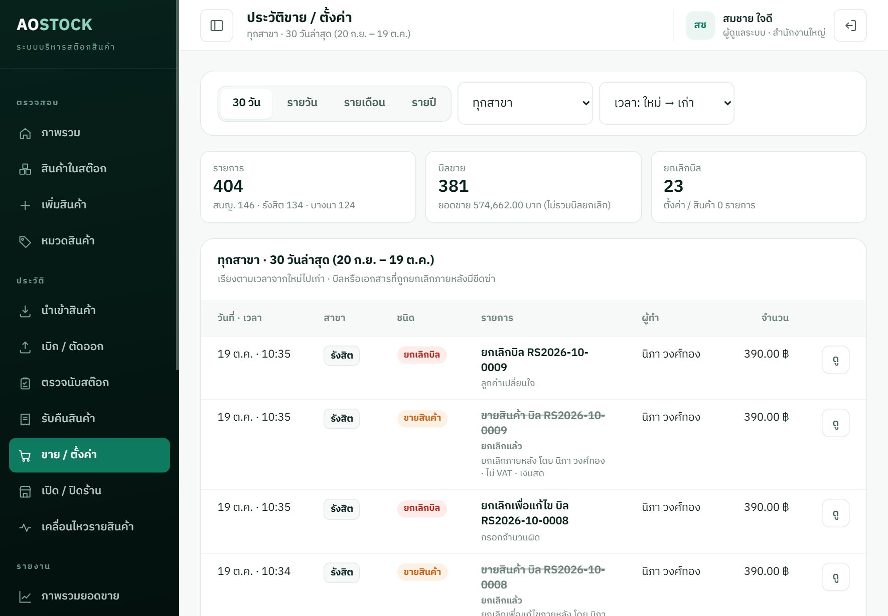
กลุ่มเมนู “ประวัติ” ของผู้ดูแล — เลือกงาน แล้วกรองช่วงและสาขา
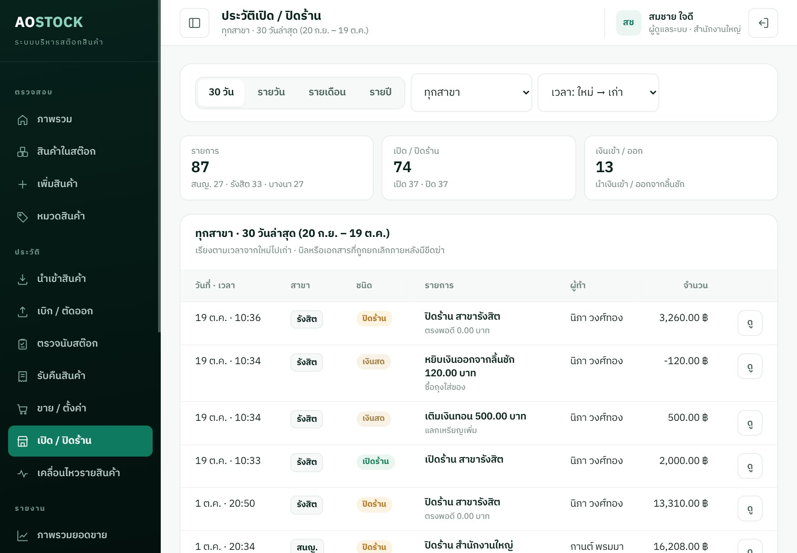
ประวัติเปิด / ปิดร้านของทุกสาขา — กด “ดู” เพื่อเปิดทั้งวันของสาขานั้น
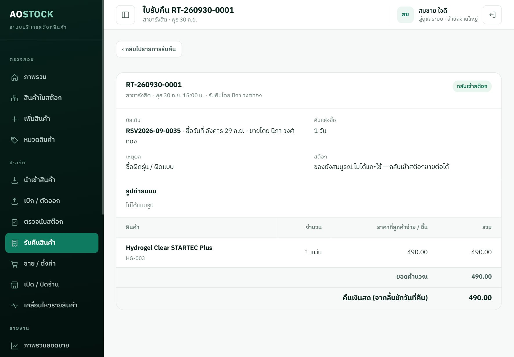
ใบรับคืน — บิลเดิม เหตุผล รูปที่แนบ และยอดคืนเงิน
เคลื่อนไหวรายสินค้าของผู้ดูแล — เลือกสาขาเดียวหรือทุกสาขา
ตั้งค่าการแจ้งเตือน
Telegram — ส่งทันทีเมื่อเกิดเหตุการณ์
- สร้างบอทใน Telegram ที่ @BotFather (พิมพ์ /newbot) แล้วคัดลอก Bot token มาวาง
- ทักบอท 1 ครั้ง (หรือเพิ่มบอทเข้ากลุ่ม) แล้วกด ค้นหา Chat ID เลือกแชตที่จะรับ (ใส่ได้หลายแชต)
- ติ๊ก “แจ้งเมื่อ” เลือกเหตุการณ์ · เลือกสาขา · ติ๊ก “ส่งแบบไม่มีเสียงแจ้งเตือน” ได้
- กด ส่งข้อความทดสอบ ดูว่ามาถึงไหม แล้วกด บันทึก (ทดสอบอย่างเดียวยังไม่บันทึก)
เหตุการณ์ที่เลือกส่งได้
- ปิดร้าน · สรุปยอดของสาขา (ติ๊กไว้ตั้งต้น)
- เงินในลิ้นชักขาด / เกิน (ตั้งต้น)
- ยกเลิกบิล / แก้เอกสาร (ตั้งต้น)
- รับคืนสินค้า · คืนเงินสด (ตั้งต้น)
- เปิดร้านใหม่หลังปิด (ตั้งต้น)
- ตัดออกเพราะสูญหาย / ชำรุด (ตั้งต้น)
- เปิดร้าน (เวลาและเงินทอน)
- สินค้าใกล้หมด / หมด (วันละครั้งตอนเปิดร้าน)
- ยกเลิกเอกสารย้อนหลัง
อีเมลสรุปยอดขายรายวัน
- ตั้ง เซิร์ฟเวอร์อีเมล (SMTP) ก่อน — มีปุ่มตั้งค่าด่วนสำหรับ Gmail / Microsoft 365 / อีเมลบนโฮสติ้ง (Gmail ใช้ “App password” 16 ตัว ไม่ใช่รหัสผ่านปกติ)
- เปิด “ส่งอีเมลสรุปยอดขายรายวัน” ใส่ ผู้รับ (หลายคนได้) · เวลาส่ง (ตั้งต้น 21:00 ควรหลังทุกสาขาปิดร้าน) · ส่งเฉพาะวันที่มียอด หรือทุกวัน · สาขา
- ติ๊ก “ในอีเมลมี” — ยอดขายแยกสาขามีเสมอ เลือกเพิ่ม: เงินสด / โอน · บิล VAT · รับคืน · เงินขาด / เกิน · ขายดี 5 อันดับ · ยอดสะสมเดือนนี้ · สินค้าใกล้หมด
- กด ดูตัวอย่างอีเมล และ ส่งทดสอบ แล้วกด บันทึก
ตัวอย่างอีเมลสรุปยอดขายรายวัน
ตั้งค่าการแจ้งเตือน — ด้านขวาเป็นตัวอย่างข้อความ Telegram ตามเหตุการณ์ที่ติ๊ก
อีเมลรายวันส่งโดยตัวส่งอัตโนมัติ (cron) ของโฮสต์ — ถ้าไม่ได้ตั้งไว้ หน้านี้ขึ้นเตือนว่าอีเมลจะยังไม่ถูกส่ง (แจ้งคนดูแลเว็บ) ·
ส่งไม่สำเร็จระบบลองใหม่วันละไม่เกิน 3 ครั้ง · ส่วน “ประวัติการส่งล่าสุด” บอกว่าส่งอะไรไปเมื่อไร สำเร็จหรือไม่ พร้อมสาเหตุ
12 ฝ่ายบัญชี
ฝ่ายบัญชีเห็นเฉพาะเรื่องบิลและเงินของทุกสาขา มี 2 เมนู: บิลขายและเงินเข้า และ ตั้งค่าเลขที่บิล
ไม่เกี่ยวกับงานหน้าร้านหรือสต๊อก (ผู้ดูแลเปิด 2 หน้านี้ได้เหมือนกัน)
บิลขายและเงินเข้า
- เลือก วัน (ปุ่ม ‹ › หรือเลือกจากปฏิทิน ย้อนหลังได้ 60 วัน) และ สาขา (ทุกสาขา หรือสาขาเดียว)
- อ่านการ์ดสรุปของวัน — บิลทั้งหมด (VAT · ไม่ VAT · ยกเลิก) · ยอดขาย และ VAT ที่เก็บได้ · เงินเข้าสุทธิ (เงินสด + โอน − เงินคืน)
- ตาราง “แยกตามสาขา” — ใช้เทียบเงิน: เงินสดเทียบกับเงินที่สาขานำส่ง · โอน / พร้อมเพย์เทียบกับรายการเดินบัญชีธนาคาร
- “รายการบิล” — เลือกแท็บ ทุกบิล / บิล VAT / บิลไม่ VAT · แต่ละใบบอกเวลา สาขา พนักงาน วิธีจ่าย ก่อน VAT · VAT · รวม · กด “ดู / พิมพ์” เปิดบิลพิมพ์ซ้ำได้
- “สรุปเดือน” ตั้งแต่วันที่ 1 ถึงวันนี้ (หรือสิ้นเดือน) แยกสาขา พร้อมเลขผู้เสียภาษี — ใช้ประกอบรายงานภาษีขาย (ภ.พ.30 ยื่นภายในวันที่ 15 ของเดือนถัดไป)
- กด ดาวน์โหลดบิลทั้งเดือน (CSV / Excel) — ไฟล์เปิดใน Excel ภาษาไทยไม่เพี้ยน
บิลขายและเงินเข้า — การ์ดสรุปของวัน และตารางแยกสาขา
ไฟล์บิลทั้งเดือนมีอะไร — วันที่ · เวลา · สาขา · เลขผู้เสียภาษี · สาขาที่ · เลขที่บิล · ประเภท (VAT / ไม่ VAT) · ชำระโดย · ราคาเต็ม · ส่วนลด ·
มูลค่าก่อน VAT · VAT · รวม · สถานะ (ปกติ / ยกเลิก) · พนักงาน — บิลที่ยกเลิกอยู่ในไฟล์ด้วย แต่ยอดเป็น 0 · ไฟล์ไม่รวมเงินคืน · กรองตามสาขาและแท็บ VAT ที่เลือกอยู่
การ์ดสรุปและตาราง “แยกตามสาขา” ไม่กรองตามแท็บ VAT — แท็บมีผลกับ “รายการบิล” และไฟล์ที่ดาวน์โหลดเท่านั้น
· VAT = ยอด × 7 ÷ 107 เพราะราคาสินค้ารวม VAT แล้ว · บิลยกเลิกนับเป็นจำนวนใบ แต่ไม่นับเป็นเงิน
ตั้งค่าเลขที่บิล
ตั้งแยกทีละสาขา (กดชื่อสาขาเพื่อเปิด) บอกเลขบิลใบถัดไปของทั้งสองชุดไว้ให้
| ส่วน | ช่องที่กรอก |
|---|
หัวบิล
พิมพ์บนบิลทั้งสองชุด | ชื่อร้าน / ชื่อบริษัท (จำเป็น · บิล VAT ควรตรงกับชื่อที่จดทะเบียน) · เบอร์โทร · ที่อยู่ (ว่าง = ใช้ของสาขา · บิล VAT ต้องเป็นที่อยู่ที่จดทะเบียน)
· บรรทัดเสริม (เช่น LINE) · ขนาดกระดาษเริ่มต้น (ใบเสร็จ 80 มม. / A4) · ข้อความท้ายบิล (เช่น เงื่อนไขการเปลี่ยนคืน) |
| ชุดบิล VAT | รหัสนำหน้าเลขที่ (ภาษาอังกฤษพิมพ์ใหญ่หรือตัวเลข 1–6 ตัว ห้ามซ้ำกับชุดอื่น) · หัวกระดาษ (ตั้งต้น “ใบเสร็จรับเงิน / ใบกำกับภาษีอย่างย่อ” ต้องมีคำว่าใบกำกับภาษี)
· เลขประจำตัวผู้เสียภาษี 13 หลัก · เลขที่สาขา 5 หลัก (สำนักงานใหญ่ = 00000) |
| ชุดบิลไม่ VAT | รหัสนำหน้าเลขที่ · หัวกระดาษ (ตั้งต้น “บิลเงินสด / ใบเสร็จรับเงิน” ห้ามใช้คำว่าใบกำกับภาษี) · ติ๊ก “พิมพ์เลขผู้เสียภาษีบนบิลไม่ VAT ด้วย” ได้ |
- แก้ช่องที่ต้องการ แล้วกด บันทึก… ของสาขานั้น — ขึ้น “บันทึกแล้ว — ใช้กับบิลใบถัดไปทันที”
- กด “ดูตัวอย่างบิล VAT” / “ดูตัวอย่างบิลไม่ VAT” เพื่อดูหน้าตาบิลจริง (ตัวอย่างแสดงตามค่าที่บันทึกแล้ว มีตรา “ตัวอย่าง”)
ตั้งค่าเลขที่บิล — หัวบิล และชุดเลขที่ของบิล VAT / ไม่ VAT ของแต่ละสาขา
เปลี่ยนรหัสนำหน้าแล้ว มีผลกับบิลใบถัดไปเท่านั้น เลขรันนับต่อจากเดิม บิลเก่าไม่เปลี่ยนเลข · หัวกระดาษของสองชุดต้องไม่เหมือนกัน
· ทุกการแก้ค่าลงประวัติ “ขาย / ตั้งค่า” ให้ผู้ดูแลเห็น (ฝ่ายบัญชีเปิดหน้าประวัติไม่ได้)
13 สิทธิ์: ใครทำอะไรได้บ้าง
ผู้ดูแลติ๊กสิทธิ์ให้พนักงานรายคน (ผู้จัดการสาขาติ๊กให้พนักงานในสาขาได้ ยกเว้นสิทธิ์เสริม)
ไม่ได้ติ๊ก = ไม่เห็นเมนูนั้น และระบบไม่ให้ทำ (ตรวจที่ระบบจริง ไม่ใช่แค่ซ่อนปุ่ม) · เปลี่ยนสิทธิ์แล้วมีผลทันที ไม่ต้องออกจากระบบ
| สิทธิ์ | ทำอะไรได้ · ต้องมีสิทธิ์หลักก่อน | ผู้จัดการ
สาขา |
|---|
| หน้าร้าน |
| ขายสินค้า | ตะกร้า รับเงิน พิมพ์บิล (ไม่ติ๊ก = พนักงานคลังอย่างเดียว) | ตามที่ติ๊ก |
| ให้ส่วนลดท้ายบิล | แก้ยอดที่ต้องชำระ (ไม่ติ๊ก = ขายราคาเต็ม) · ต้องมี “ขายสินค้า” | ตามที่ติ๊ก |
| เปิด / ปิดร้าน | นับเงินทอนตอนเปิด นับเงินสดตอนปิด ปิดร้านของวันก่อนที่ลืมปิด | ตามที่ติ๊ก |
| เปิดร้านอีกครั้งหลังปิดแล้ว | ต้องใส่เหตุผล · ต้องมี “เปิด / ปิดร้าน” | ตามที่ติ๊ก |
| เงินเข้า / ออกลิ้นชัก | เติมเงินทอน / หยิบเงินออกระหว่างวัน | ตามที่ติ๊ก |
| แก้ / ยกเลิกบิลของตัวเอง (วันนี้) | ต้องมี “ขายสินค้า” | ตามที่ติ๊ก |
| งานคลัง |
| นำเข้าสินค้า | รับของเข้าสต๊อก | ตามที่ติ๊ก |
| เพิ่มสินค้าใหม่ | เมนู “เพิ่มสินค้า” และปุ่มในหน้านำเข้า ตั้งราคาขายได้ด้วย (มีผลกับบิลทันที) · ต้องมี “นำเข้าสินค้า” | ตามที่ติ๊ก |
| เบิก / ตัดออกสินค้า | | ตามที่ติ๊ก |
| ตรวจนับสต๊อก | | ตามที่ติ๊ก |
| แก้ / ยกเลิกเอกสารคลังของตัวเอง (วันนี้) | ต้องมีนำเข้า หรือตัดออก หรือตรวจนับ อย่างใดอย่างหนึ่ง | ตามที่ติ๊ก |
| รับคืนสินค้า · หมวดสินค้า |
| รับคืนสินค้า | บิลย้อนหลังได้ตามจำนวนวันที่สาขาตั้ง | ตามที่ติ๊ก |
| คืนเงินสดให้ลูกค้า | ไม่ติ๊ก = รับคืนได้แต่ไม่คืนเงินสด · ต้องมี “รับคืนสินค้า” | ตามที่ติ๊ก |
| เพิ่มหมวด · ลบหมวด | แยกกันสองสิทธิ์ | ตามที่ติ๊ก |
| ดูข้อมูล |
| สินค้าในสต๊อก · รายงานยอดขายของตัวเอง | เปิดดูหน้านั้น ๆ | ได้เอง |
| ดูประวัติ (1 สิทธิ์ = 1 เมนูในกลุ่ม “ประวัติ”) |
| ประวัติขาย / ตั้งค่า | บิลของทุกคนในสาขา (ไม่ติ๊ก = พิมพ์ซ้ำได้เฉพาะบิลตัวเองจาก “บิลของฉันวันนี้”) · รายการตั้งค่าเห็นเฉพาะผู้จัดการ | ได้เอง |
| ประวัตินำเข้า · ประวัติตัดออก · ประวัติตรวจนับ · ประวัติรับคืน | แยกกันสี่สิทธิ์ · เมนูตรวจนับ / รับคืนขึ้นเฉพาะเมื่อเปิดใช้งานเมนูนั้นในระบบ | ได้เอง |
| ประวัติเปิด / ปิดร้าน และเงินเข้า / ออก | เปิด / ปิดร้าน · เปิดร้านใหม่ · เงินเข้า / ออกลิ้นชัก | ได้เอง |
| เคลื่อนไหวรายสินค้า | ยอดเข้า / ออกของสินค้าทีละตัว | ได้เอง |
| สิทธิ์เสริม (ให้เฉพาะคนที่ไว้ใจ · ผู้ดูแลให้เท่านั้น) |
| แก้งานคนอื่น | แก้ / ยกเลิกเอกสารของคนอื่นในสาขา | ได้เอง |
| แก้ย้อนหลัง | แก้ / ยกเลิกเอกสารคลังของวันก่อน ตามจำนวนวันที่สาขาตั้ง | ได้เอง |
| รายงานทั้งสาขา | ดูยอดขายของทุกคนในสาขา · ต้องมี “รายงานยอดขาย” | ได้เอง |
| ผู้จัดการสาขา | ตำแหน่งผู้จัดการ (ข้อ 10) | — |
- พนักงานใหม่ ระบบติ๊กให้ตั้งต้น 18 ข้อ: ขายสินค้า · ให้ส่วนลด · เปิด / ปิดร้าน · เงินเข้า / ออกลิ้นชัก · แก้บิลตัวเอง · นำเข้า · เบิก / ตัดออก · ตรวจนับ ·
แก้เอกสารคลังตัวเอง · ดูสินค้าในสต๊อก · รายงานของตัวเอง · ดูประวัติครบ 7 เมนู — ปรับได้ก่อนกดเพิ่ม
- พนักงานที่เคยมีสิทธิ์ “ประวัติรายการ” แบบเดิม (สิทธิ์เดียว) ได้สิทธิ์ดูประวัติครบ 6 เมนูโดยอัตโนมัติ (เคลื่อนไหวรายสินค้าเป็นสิทธิ์แยกอยู่แล้ว ได้ตามเดิม)
ไม่มีใครเสียสิทธิ์ — อยากจำกัด ให้เอาติ๊กเมนูที่ไม่ต้องการออก
- สิทธิ์ที่ต้องมีสิทธิ์หลักก่อน จะเป็นสีเทากดไม่ได้จนกว่าจะติ๊กสิทธิ์หลัก และหน้าจอบอกไว้ว่า “ต้องมี … ด้วย”
- ไม่มีสิทธิ์แล้วเปิดลิงก์ตรง ๆ ระบบพากลับหน้าแรก บอก “ไม่มีสิทธิ์เข้าหน้า … — ติดต่อผู้ดูแลเพื่อเปิดสิทธิ์”
ตำแหน่งและสิ่งที่เห็น
| ตำแหน่ง | เห็นข้อมูล | เข้าระบบด้วย | ใครสร้างบัญชี |
|---|
| พนักงาน / ผู้จัดการสาขา | เฉพาะสาขาตัวเอง | ชื่อผู้ใช้ + PIN 4 หลัก | ผู้ดูแล (ผู้จัดการเพิ่มพนักงานในสาขาได้) |
| ฝ่ายบัญชี | ทุกสาขา เฉพาะบิลและเงินเข้า | ชื่อผู้ใช้ + รหัสผ่าน | คนดูแลเว็บ |
| ผู้ดูแลระบบ | ทุกสาขา ทุกเรื่อง | ชื่อผู้ใช้ + รหัสผ่าน | คนดูแลเว็บ |
14 เหตุการณ์จริง: เจอแบบนี้ทำอย่างไร
รวมเรื่องที่เกิดบ่อยหน้าร้าน แต่ละเรื่องบอกว่าต้องทำอะไรในระบบ ตามลำดับ และตัวเลขที่จะเห็น
ตัวเลขในตัวอย่างคิดตามสูตรเดียวกับที่ระบบใช้จริง
1ลูกค้าขอเปลี่ยนสินค้า (เปลี่ยนรุ่น หรือเปลี่ยนชิ้นที่ชำรุด)
ระบบไม่มีปุ่ม “เปลี่ยนของ” โดยตรง ให้ทำเป็น รับคืนชิ้นเดิม + ขายชิ้นใหม่ ตัวเลขสต๊อกและเงินจึงถูกทั้งสองฝั่ง
- รับคืนชิ้นเดิม (ข้อ 6) — เปลี่ยนรุ่นเพราะซื้อผิด เลือก “ซื้อผิดรุ่น / ผิดแบบ” (ของกลับเข้าสต๊อก) · ชิ้นเดิมชำรุด เลือก “สินค้าชำรุด / ใช้งานไม่ได้” (ไม่เข้าสต๊อก แยกเก็บไว้เคลม)
- ขายชิ้นใหม่เป็นบิลใหม่ (ข้อ 5) ตามปกติ
- รับหรือทอนเงินกับลูกค้าเฉพาะส่วนต่าง — ในระบบเป็นคืนเงิน 1 รายการ และรับเงิน 1 บิล รวมกันแล้วเงินในลิ้นชักเปลี่ยนเท่าส่วนต่างพอดี
| ลูกค้าคืนเคสรุ่นมาตรฐาน (จ่ายไป 290.00) ขอเปลี่ยนเป็นรุ่นพรีเมียม 590.00 | |
| ใบรับคืน — คืนเงินสดให้ลูกค้า | − 290.00 |
| บิลใหม่ — รับเงินค่ารุ่นพรีเมียม | + 590.00 |
| เงินในลิ้นชักเพิ่มขึ้น = ส่วนต่างที่เก็บจากลูกค้า | + 300.00 |
ต้องมีสิทธิ์ “รับคืนสินค้า” และ “คืนเงินสดให้ลูกค้า” — ไม่มีสิทธิ์คืนเงินสด ให้คนที่มีสิทธิ์เป็นคนทำ (ไม่อย่างนั้นใบรับคืนบันทึกยอดคืนเป็น 0 แล้วตัวเลขเงินไม่ตรง)
· ร้านต้องเปิดอยู่ · บิลเดิมต้องยังอยู่ในกำหนดคืน
2ลูกค้าคืนของบางชิ้น จากบิลที่มีส่วนลด
บิลที่ลดราคาท้ายบิล ระบบคืนเงินตามราคาที่ลูกค้าจ่ายจริง โดยเฉลี่ยส่วนลดให้ทุกชิ้นตามสัดส่วนราคา — ไม่ใช่คืนตามป้ายราคา
| บิลเดิม: 100.00 + 290.00 + 590.00 = ราคาเต็ม | 980.00 |
| ลดท้ายบิลเหลือ (ลูกค้าจ่ายจริง) | 900.00 |
| สัดส่วนที่จ่ายจริง = 900 ÷ 980 | 0.9184 |
| ลูกค้าคืนชิ้นราคา 290.00 → ยอดคืน = 290 × 900 ÷ 980 (ปัด 2 ตำแหน่ง) | 266.33 |
หน้ารับคืนใส่ยอดนี้ให้เอง ลดลงได้แต่เกินไม่ได้ (ถ้าลดต้องใส่เหตุผล) · บิลที่ไม่มีส่วนลด คืนเต็มราคาชิ้นนั้น
3ของมาส่งไม่ครบ หรือส่งผิดรุ่น
- นับของจริงก่อนบันทึก แล้วรับเข้าเท่าที่มาจริง — ใบส่งของเขียน 20 ชิ้น มาจริง 18 ชิ้น ให้ใส่ 18 และเขียนหมายเหตุ เช่น “ใบส่งของ 20 มาจริง 18 รอส่งเพิ่ม”
- ของที่ค้างส่งมาถึงทีหลัง ทำใบรับเข้าใหม่อีกใบ ใส่เลขเอกสารอ้างอิงเดิมได้
- ส่งผิดรุ่น — อย่ารับรุ่นที่ผิดเข้าระบบ ถ้าเผลอบันทึกไปแล้ววันนี้ ใช้ “แก้ไขใบนี้” แก้ให้ถูก (ข้อ 8)
ถ้าของรับเข้าไปแล้วและต้องส่งคืนผู้จำหน่าย ใช้ “เบิก / ตัดออก” เหตุผล “คืนผู้จำหน่าย”
ใบรับเข้าที่ของถูกขายไปบางส่วนแล้วยกเลิกไม่ได้ — ให้แก้ตัวเลขด้วยการตรวจนับสต๊อกแทน
4ส่งของไปอีกสาขา
ระบบไม่มีใบโอนระหว่างสาขา ให้ทำ 2 ใบ คนละสาขา:
สาขาต้นทาง · ตัดออกเมนู “เบิก / ตัดออก” เหตุผล ส่งไปสาขาอื่น หมายเหตุ (จำเป็น) เขียนว่าส่งไปสาขาไหน · ได้เลขใบ IS-…
สาขาปลายทาง · นำเข้าเมื่อของมาถึง ทำใบรับเข้า ใส่ “เลขที่เอกสารอ้างอิง” เป็นเลขใบ IS-… ของต้นทาง จะตามย้อนได้
| ส่งฟิล์มกระจก 10 ชิ้น จากสำนักงานใหญ่ไปสาขารังสิต | |
| สำนักงานใหญ่ — หลังบันทึกใบตัดออก | − 10 |
| สาขารังสิต — หลังบันทึกใบรับเข้า | + 10 |
ระหว่างทาง (ต้นทางตัดแล้ว ปลายทางยังไม่รับ) ของ 10 ชิ้นนี้ไม่อยู่ในสาขาไหนเลย — ปลายทางควรรับเข้าทันทีที่ของถึง
· ผู้ดูแลตรวจทั้งสองใบได้ที่เมนู “เบิก / ตัดออก” และ “นำเข้าสินค้า” ในกลุ่มเมนูประวัติของผู้ดูแล
5ปิดร้านแล้วเงินขาด (หรือเกิน)
ตัวอย่างหนึ่งวันของสาขา — ระบบคิดยอด “ควรมีในลิ้นชัก” ให้แบบนี้
| เงินทอนเริ่มวัน (ยกมาจากเมื่อวาน ไม่ได้เติมตอนเปิดร้าน) | 2,000.00 |
| + เติมเงินทอนระหว่างวัน (แลกเหรียญ) | 500.00 |
| + ขายเงินสด (บิลเงินสดที่ไม่ถูกยกเลิก · บิลโอน 4,200.00 ไม่นับ) | 12,350.00 |
| − หยิบเงินออก (ซื้อถุงใส่ของ) | 120.00 |
| − คืนเงินลูกค้า (ใบรับคืนจากเรื่องที่ 2) | 266.33 |
| ควรมีในลิ้นชัก | 14,463.67 |
| นับเงินได้จริง | 14,443.67 |
| ส่วนต่าง → ขาด (ต้องเขียนหมายเหตุก่อนปิดร้าน) | − 20.00 |
| แยกเงินทอนไว้สำหรับพรุ่งนี้ | 2,000.00 |
| เงินนำส่ง = นับได้ − เงินทอนที่แยกไว้ | 12,443.67 |
ก่อนกดปิดร้าน ลองเช็กสิ่งเหล่านี้
- มีบิลที่ลูกค้าโอน แต่บันทึกเป็นเงินสด (หรือกลับกัน) ไหม — ดูในเมนู “ประวัติขาย / ตั้งค่า” (หรือ “บิลของฉันวันนี้” ดูวิธีจ่ายของบิลตัวเอง) · ยังเปิดร้านอยู่แก้บิลได้ (เรื่องที่ 6)
- หยิบเงินออกไปใช้ หรือเติมเงินทอน แต่ยังไม่ได้บันทึกในการ์ด “เติมเงินทอน / หยิบเงินออก” ไหม
- คืนเงินลูกค้าไปแล้วแต่ยังไม่ได้บันทึกรับคืนไหม
เช็กแล้วยังไม่ตรง ให้เขียนหมายเหตุตามจริง (เช่น ทอนเกินช่วงบ่าย) แล้วปิดร้าน — ผู้ดูแลเห็นส่วนต่างทันทีในหน้าภาพรวม และได้แจ้งเตือน “เงินขาด / เกิน” ถ้าเปิดไว้
· ปิดร้านแล้วแก้ตัวเลขการปิดไม่ได้
6บันทึกบิลผิด: จำนวนผิด · วิธีจ่ายผิด · ลูกค้าขอบิล VAT ทีหลัง
| เจอเมื่อไร | ทำอย่างไร |
|---|
| วันเดียวกัน ร้านยังเปิด | “แก้ไขบิลนี้” (ข้อ 8) → รายการเดิมกลับเข้าตะกร้า → แก้จำนวน / เลือกวิธีจ่ายที่ถูก / เลือก “VAT” → รับเงินใหม่ ได้เลขบิลใหม่
ถ้าบิลเดิมมีส่วนลด ต้องแก้ “ยอดที่ต้องชำระ” ให้เท่าเดิมอีกครั้ง เพราะส่วนลดไม่ยกมา |
| วันเดียวกัน ปิดร้านแล้ว | คนที่มีสิทธิ์ “เปิดร้านอีกครั้ง” (หรือผู้ดูแล) เปิดร้านใหม่ก่อน → แก้บิล → ปิดร้านอีกรอบ |
| วันถัดไป | บิลของวันก่อนแก้หรือยกเลิกไม่ได้ · ของผิด / ลูกค้าคืนของ ใช้ “รับคืนสินค้า” · วิธีจ่ายผิด หรือขอบิล VAT ย้อนหลัง
ระบบเปลี่ยนให้ไม่ได้ — แจ้งผู้ดูแลและฝ่ายบัญชีให้บันทึกไว้ |
| มีของค้างในตะกร้าอยู่ | แก้ไขบิลได้เมื่อตะกร้าว่างเท่านั้น — ขายรายการที่ค้างให้เสร็จก่อน (หรือล้างตะกร้า) |
บิล VAT ของระบบเป็น “ใบเสร็จรับเงิน / ใบกำกับภาษีอย่างย่อ” ไม่มีช่องชื่อและที่อยู่ลูกค้า
7นับของแล้วไม่ตรง · ของแตกหรือหายระหว่างวัน
- รู้สาเหตุอยู่แล้ว (ทำแตก ลูกค้าทำหาย ของหมดอายุ) — บันทึก “เบิก / ตัดออก” ด้วยเหตุผลนั้นทันที ไม่ต้องรอตรวจนับ
- ไม่รู้สาเหตุ เจอตอนนับ — ทำ “ตรวจนับสต๊อก” เลือกสาเหตุที่ใกล้ที่สุด (เลือก “ของหาย” หรือ “อื่น ๆ” ต้องเขียนหมายเหตุ)
- ก่อนปรับยอด เช็กว่ามีของที่มาส่งแต่ยังไม่ได้ทำใบรับเข้า หรือของที่เบิกไปแต่ยังไม่ได้บันทึกไหม — ทำใบนั้นก่อน แล้วค่อยนับ
| เคสมือถือ แฟชั่น: ในระบบ 57 ชิ้น · นับได้จริง 55 ชิ้น | − 2 ชิ้น |
| ราคาทุนชิ้นละ | 50.00 |
| มูลค่าส่วนต่าง (ราคาทุน) = − 2 × 50 | − 100.00 |
บันทึกแล้วยอดในระบบเปลี่ยนเป็น 55 ทันที · มูลค่าส่วนต่างคิดจากราคาทุน ไม่ใช่ราคาขาย
8ปิดร้านไปแล้ว ลูกค้ามาซื้ออีก
- คนที่มีสิทธิ์ “เปิดร้านอีกครั้งหลังปิดแล้ว” กด “เปิดร้านใหม่” ที่หน้าเปิด / ปิดร้าน ใส่เหตุผล — ไม่มีคนมีสิทธิ์ โทรให้ผู้ดูแลเปิดจากหน้าภาพรวม
- ขายตามปกติ (เงินที่รับเพิ่ม ไปรวมในยอดที่ควรมีของวันนี้)
- ปิดร้านอีกรอบ นับเงินในลิ้นชักใหม่ทั้งหมด แล้วกดปิดร้าน — ใช้ผลการปิดรอบล่าสุด
9เช้ามาเจอว่าเมื่อวานลืมปิดร้าน
- อย่าเพิ่งขาย — เงินในลิ้นชักตอนนี้ยังเป็นเงินของเมื่อวาน นับให้เรียบร้อยก่อน
- หน้าเปิดร้านขึ้น “ขั้นที่ 1 · ปิดร้านของวัน…” ใส่ยอดที่นับได้ แยกเงินทอน เขียนเหตุผลว่าทำไมไม่ได้ปิด แล้วกดปิด (ข้อ 3)
- ขั้นที่ 2 เปิดร้านวันนี้ตามปกติ
ค้างมากกว่า 1 วัน หรือเป็นวันที่เก่ากว่าวันล่าสุด พนักงานปิดเองไม่ได้ — ให้ผู้ดูแลปิดย้อนหลังที่หน้าภาพรวม ทีละวัน
10ลูกค้าคืนของ แต่ไม่มีบิล (หรือเกินกำหนดคืน)
หน้า “รับคืนสินค้า” ต้องมีบิลเดิมที่ยังอยู่ในกำหนดคืน — ไม่มีบิลจะรับหรือไม่รับเป็นเรื่องที่ร้านตัดสินใจ ถ้าร้านรับ ให้บันทึกแบบนี้
- ของยังดี เอากลับไปขายต่อ — เมนู “นำเข้าสินค้า” เว้นเลขที่เอกสารอ้างอิงไว้ แล้วเขียนหมายเหตุ เช่น “ลูกค้าคืน ไม่มีบิล” → แตะสินค้า → บันทึก ของกลับเข้าสต๊อก
- ร้านคืนเงินสดให้ลูกค้าด้วย — หน้าเปิด / ปิดร้าน การ์ด “เติมเงินทอน / หยิบเงินออก” (สิทธิ์ “เงินเข้า / ออกลิ้นชัก”) เลือกหยิบเงินออก ใส่จำนวนและเหตุผล เช่น “คืนเงินลูกค้า ไม่มีบิล”
เงินในลิ้นชักตอนปิดร้านจะได้ตรง
- ของชำรุด ไม่เอากลับไปขาย — ไม่ต้องรับเข้า (สต๊อกไม่เปลี่ยน) ถ้าคืนเงิน ทำแค่ขั้นที่ 2
วิธีนี้ไม่ใช่ใบรับคืน จึงไม่ขึ้นเป็น “รับคืน / เงินคืน” ในรายงานและไม่หักยอดขาย — เงินที่หยิบออกไปอยู่ในประวัติเปิด / ปิดร้านแทน
· มีบิลและยังไม่เกินกำหนด ใช้ “รับคืนสินค้า” (ข้อ 6) เสมอ
11ขายแล้วลืมพิมพ์ใบเสร็จ หรือเผลอรีเฟรชหน้า
- อย่าขายซ้ำ — กดยืนยันแล้วบิลถูกบันทึกทันที แถบเขียวหายไปเพราะรีเฟรช แต่บิลยังอยู่
- หน้าขาย การ์ด “ยอดขายวันนี้” กด บิลของฉันวันนี้ → แตะ 30 นาที ให้เหลือเฉพาะบิลล่าสุด
- ดูเวลา ยอด และสินค้าให้ตรงกับลูกค้า แล้วกด ดู / พิมพ์บิล → พิมพ์
- ไม่เจอบิลในรายการ = ยังไม่ได้บันทึก (เช่น กดย้อนกลับในกล่องยืนยัน) ดูว่าของยังอยู่ในตะกร้าไหม แล้วรับเงินให้เสร็จ
ใช้ได้ทุกคนที่ขาย ไม่ต้องมีสิทธิ์ดูประวัติขาย แต่เห็นเฉพาะบิลที่ตัวเองขายวันนี้ · บิลของคนอื่น หรือของวันก่อน ให้ผู้จัดการสาขา
(เมนูประวัติขาย / ตั้งค่า มีแถบวัน) ฝ่ายบัญชี (บิลขายและเงินเข้า) หรือผู้ดูแลพิมพ์ให้
สรุปตัวเลขที่ระบบคิดให้
| ตัวเลข | คิดอย่างไร | ตัวอย่าง |
|---|
| VAT ในบิล VAT | ราคารวม VAT แล้ว → VAT = ยอด × 7 ÷ 107 (ปัด 2 ตำแหน่ง) · ก่อน VAT = ยอด − VAT | ยอด 980.00 → VAT 64.11 · ก่อน VAT 915.89 |
| เงินทอน | รับเงินมา − ยอดที่ต้องชำระ | รับ 1,000.00 ยอด 980.00 → ทอน 20.00 |
| ส่วนลด | ราคาเต็ม − ยอดที่ต้องชำระที่แก้ | 980.00 แก้เป็น 900.00 → ส่วนลด 80.00 |
| เงินคืนบิลที่มีส่วนลด | ราคาชิ้นนั้น × ยอดที่จ่ายจริง ÷ ราคาเต็มของบิล | 290 × 900 ÷ 980 = 266.33 |
| ควรมีในลิ้นชัก | เงินทอนเริ่มวัน + เติม + ขายเงินสด − หยิบออก − คืนเงิน | ดูเรื่องที่ 5 |
| เงินนำส่ง | เงินที่นับได้ − เงินทอนที่แยกไว้พรุ่งนี้ | 14,443.67 − 2,000.00 = 12,443.67 |
| มูลค่าส่วนต่างตรวจนับ | (นับได้ − ในระบบ) × ราคาทุน | (55 − 57) × 50 = − 100.00 |
| ใกล้หมด | คงเหลือ ≤ จุดสั่งซื้อของสินค้านั้น | จุดสั่งซื้อ 20 · เหลือ 20 → ใกล้หมด |
15 ถาม–ตอบ เมื่อเจอปัญหา
ข้อความในเครื่องหมายคำพูดคือข้อความที่ขึ้นบนจอจริง (… คือส่วนที่เปลี่ยนตามสถานการณ์ เช่น ชื่อ ตัวเลข)
ลองทำตาม “ทำอย่างไร” ก่อน ถ้ายังไม่ได้ ติดต่อคนที่บอกไว้ในข้อนั้น
เข้าระบบ
กด PIN แล้วขึ้น “PIN ไม่ถูกต้อง” ทั้งที่มั่นใจว่าถูก
ตรวจ — แตะชื่อตัวเองถูกคนไหม · อยู่แท็บ “พนักงาน (PIN)” ไหม (กรอกผิดแท็บก็นับเป็นผิด) · ถ้าถูกพักงานไว้ ระบบจะบอกว่าไม่ถูกต้องเหมือนกรอกผิด
ทำอย่างไร — อย่าลองซ้ำหลายครั้ง ผิดครบ 5 ครั้งจะโดนล็อก ให้ผู้จัดการสาขาตรวจสถานะบัญชี หรือตั้ง PIN ใหม่ให้
โดนล็อก เข้าระบบไม่ได้
“กรอก PIN ผิดหลายครั้ง บัญชีนี้ถูกล็อกชั่วคราว — ลองใหม่ได้ในอีก …”
ทำอย่างไร — รอให้ครบ 15 นาที หรือให้ผู้จัดการสาขา / ผู้ดูแล ตั้ง PIN ใหม่ ซึ่งปลดล็อกให้ทันที ·
ถ้าขึ้น “กรอกผิดหลายครั้งเกินไป …” (ทั้งเครื่อง รอ 1 นาที) หรือ “มีการกรอกผิดจากเครือข่ายนี้หลายครั้งเกินไป …” (ทั้งร้าน รอ 15 นาที) ต้องรอให้ครบเวลาเท่านั้น (ข้อ 2)
ลืม PIN หรือลืมชื่อผู้ใช้
ทำอย่างไร — บอกผู้จัดการสาขา (เมนู “พนักงานในสาขา” → แก้ไข → รีเซ็ต PIN) หรือผู้ดูแล · ชื่อผู้ใช้ดูได้ที่หน้าเดียวกัน
· ผู้ดูแล / ฝ่ายบัญชีลืมรหัสผ่าน ติดต่อคนดูแลเว็บให้ตั้งใหม่
ชื่อตัวเองหายไปจากแถว “เลือกชื่อของคุณ”
เพราะ — ล้างข้อมูลเบราว์เซอร์ · ไม่ได้เข้าเครื่องนี้เกิน 180 วัน · เครื่องจำครบ 12 ชื่อแล้ว · บัญชีถูกพักงาน
ทำอย่างไร — กด “ไม่มีชื่อคุณ? พิมพ์ชื่อผู้ใช้” แล้วพิมพ์ชื่อผู้ใช้เอง
ใช้งานอยู่ดี ๆ ถูกพากลับหน้าเข้าสู่ระบบ ขึ้น “หลุดจากระบบแล้ว” หรือ “เซสชันหมดอายุ …”
เพราะ — ปิดเบราว์เซอร์ · ไม่ได้ใช้เกิน 12 ชั่วโมง · กดออกจากระบบในแท็บอื่น · ล้างข้อมูลเบราว์เซอร์ · ผู้ดูแลเปลี่ยนชื่อผู้ใช้หรือพักงานบัญชีนั้น
ทำอย่างไร — เข้าระบบใหม่ ของในตะกร้าหรือใบที่ทำค้างจะหายไป ต้องทำใหม่ · ดูเมนูประวัติ (หรือ “บิลของฉันวันนี้” ในหน้าขาย) ก่อนว่ารายการล่าสุดบันทึกแล้วหรือยัง
เมนู สิทธิ์ และปุ่ม
ไม่เห็นเมนูที่ต้องใช้ หรือขึ้น “ไม่มีสิทธิ์เข้าหน้า … — ติดต่อผู้ดูแลเพื่อเปิดสิทธิ์”
ทำอย่างไร — ขอสิทธิ์จากผู้ดูแล (สิทธิ์งานทั่วไป ผู้จัดการสาขาติ๊กให้ได้) เปิดแล้วมีผลทันที ไม่ต้องออกจากระบบ (ข้อ 13)
ขึ้น “เมนูนี้ถูกปิดใช้งานอยู่ — ติดต่อคนดูแลเว็บถ้าต้องการใช้”
เพราะ — เมนูนั้นยังไม่ได้เปิดให้ร้านใช้ (เช่น รับคืน ตรวจนับ รายงาน) ทำอย่างไร — แจ้งผู้ดูแล / คนดูแลเว็บ
ปุ่มบันทึกเป็นสีเทา กดแล้วจอเลื่อนไปที่อื่น
เพราะ — ยังกรอกไม่ครบ ระบบพาไปช่องแรกที่ขาด ขึ้นกรอบแดงพร้อมบอกว่าต้องทำอะไร เช่น “เลือกเหตุผลการคืนก่อน”
ทำอย่างไร — กรอกช่องที่กรอบแดง แล้วกดบันทึกอีกครั้ง · ถ้าร้านปิด ปุ่มพาขึ้นไปที่แถบแจ้งด้านบน
แตะแล้วขึ้น “เชื่อมต่อไม่สำเร็จ — ตรวจอินเทอร์เน็ตแล้วแตะใหม่อีกครั้ง” หรือ “ระบบตอบช้าเกินไป — แตะใหม่อีกครั้ง”
เพราะ — อินเทอร์เน็ตหลุด หรือเซิร์ฟเวอร์ตอบไม่ทัน (ข้อความขึ้นที่ล่างจอ · ระหว่างรอนาน กลางจอขึ้น “กำลังโหลด…”)
ทำอย่างไร — เช็กอินเทอร์เน็ต แล้วแตะใหม่ หรือรีเฟรชหน้า (ดึงหน้าลง หรือกด F5) · ดูว่ารายการบันทึกแล้วหรือยังที่เมนูประวัติ ก่อนทำซ้ำ
พิมพ์จำนวนเองแล้ว ตัวเลขเงินจางลง เหมือนยังไม่เสร็จ
เพราะ — ระบบกำลังบันทึกจำนวนที่พิมพ์ (หยุดพิมพ์ครู่เดียวระบบส่งเอง) เสร็จแล้วตัวเลขกลับเป็นปกติ
ทำอย่างไร — ไม่ต้องทำอะไร พิมพ์ต่อหรือกดบันทึก / รับเงินได้เลย ระบบรอให้บันทึกครบก่อนเอง
ขึ้นหน้า “ระบบขัดข้องชั่วคราว กรุณาลองใหม่อีกครั้ง — …”
ทำอย่างไร — กดกลับหน้าแรกแล้วลองใหม่ ถ้ายังเป็น แจ้งคนดูแลเว็บ พร้อมวันเวลาที่ขึ้นบนจอ (ใช้หาสาเหตุ)
เปิด / ปิดร้าน และเงินในลิ้นชัก
กดเมนูขายแล้วถูกพาไปหน้าเปิดร้าน หรือขึ้น “ร้านยังไม่เปิด — รอคนที่มีสิทธิ์ “เปิด / ปิดร้าน” เปิดร้านก่อน”
ทำอย่างไร — เปิดร้านก่อน (ข้อ 3) · ไม่มีสิทธิ์เปิดร้าน ให้คนที่มีสิทธิ์เปิด ระหว่างนั้นทำงานคลังหรือดูข้อมูลได้
เปิดร้านไม่ได้ ขึ้น “ปิดร้านของวัน…ก่อน แล้วจึงเปิดร้านวันนี้”
เพราะ — วันล่าสุดก่อนหน้ายังไม่ได้ปิดร้าน ทำอย่างไร — ทำ “ขั้นที่ 1 · ปิดร้านของวัน…” ให้เสร็จก่อน (ข้อ 3)
· ถ้าขึ้น “ปิดย้อนหลังได้เฉพาะวันล่าสุดที่ยังไม่ได้ปิด — วันอื่นให้ผู้ดูแลปิดที่หน้าภาพรวม” ให้ผู้ดูแลปิดให้
ปิดร้านไม่ได้ ขึ้น “เงินที่นับได้ไม่ตรงกับยอดที่ควรมี กรุณากรอกหมายเหตุว่าเกิดจากอะไร”
ทำอย่างไร — เช็กสาเหตุตามเรื่องที่ 5 ในข้อ 14 แล้วเขียนหมายเหตุตามจริง จึงปิดร้านได้ · ผู้ดูแลเห็นส่วนต่างทุกครั้ง
หยิบเงินออกไม่ได้
“หยิบเงินออกได้ไม่เกินเงินที่ควรมีในลิ้นชัก (… บาท)” · “ร้านไม่ได้เปิดอยู่ — เติม / หยิบเงินได้เฉพาะตอนร้านเปิด”
ทำอย่างไร — ใส่จำนวนไม่เกินเงินที่ควรมี และต้องใส่เหตุผลทุกครั้ง · ทำได้เฉพาะตอนร้านเปิด
กดปิดร้านแล้วขึ้น “ร้านปิดไปแล้ว (อาจมีเครื่องอื่นปิดก่อน)”
เพราะ — มีคนปิดร้านจากอีกเครื่องไปแล้ว ทำอย่างไร — โหลดหน้าใหม่ ดูการ์ด “สรุปการปิดร้าน” ว่าตัวเลขถูกไหม
ขายสินค้า และบิล
ยิงบาร์โค้ดแล้วหาสินค้าไม่เจอ
เพราะ — สินค้านั้นยังไม่ได้ใส่บาร์โค้ดในข้อมูลสินค้า หรือใส่ไว้ไม่ตรงกับบนกล่อง (บาร์โค้ดต้องตรงทั้งรหัส) · สินค้าเลิกขายแล้ว
ทำอย่างไร — พิมพ์ชื่อหรือ SKU แทน แล้วแจ้งผู้ดูแลให้ใส่บาร์โค้ดที่หน้าแก้ไขสินค้า · ยิงแล้วต้องแตะการ์ดเพื่อใส่ตะกร้าเอง
แตะสินค้าแล้วจำนวนในตะกร้าไม่เพิ่ม หรือการ์ดขึ้น “หมด”
เพราะ — ใส่ครบเท่าของที่เหลือแล้ว หรือของหมด (ถ้าเพิ่งหมดจากอีกเครื่องขึ้น “สินค้านี้เหลือไม่พอ ใส่เพิ่มไม่ได้แล้ว”)
ทำอย่างไร — ถ้ามีของจริงแต่ระบบบอกหมด แปลว่ายังไม่ได้ทำใบรับเข้า หรือยอดคลาด ให้คนทำงานคลังรับเข้า / ตรวจนับก่อน
กดรับเงินแล้วขึ้น “ของไม่พอ (อาจถูกขายจากเครื่องอื่นไปแล้ว) — …”
เพราะ — ระหว่างรอลูกค้า อีกเครื่องขายตัวนั้นไปก่อน ทำอย่างไร — ตะกร้ายังอยู่ ลดจำนวนตามที่บอกแล้วรับเงินใหม่
แก้ยอดที่ต้องชำระไม่ได้ หรือปุ่มรับเงินกดไม่ได้
“ยอดชำระต้องมากกว่า 0 และไม่เกินราคาเต็ม … บาท”
เพราะ — ไม่มีสิทธิ์ “ให้ส่วนลด” (ช่องจะไม่ให้แก้) หรือใส่ 0 / มากกว่าราคาเต็ม ทำอย่างไร — ใส่ยอดที่ถูก หรือขอสิทธิ์ส่วนลด
ขึ้น “สาขานี้ยังไม่ได้ตั้งรหัสเลขที่บิล … — แจ้งฝ่ายบัญชี / ผู้ดูแล”
ทำอย่างไร — ฝ่ายบัญชีหรือผู้ดูแลตั้งรหัสนำหน้าที่หน้า “ตั้งค่าเลขที่บิล” ของสาขานั้น (ข้อ 12) แล้วรับเงินใหม่ได้เลย ตะกร้ายังอยู่
ไม่มีปุ่ม “แก้ไขบิลนี้ / ยกเลิกบิลนี้” หรือกดแล้วไม่ผ่าน
- “บิลนี้เป็นของพนักงานคนอื่น — …” → ต้องมีสิทธิ์ “แก้งานคนอื่น” ให้ผู้จัดการทำ
- “ไม่มีสิทธิ์ “แก้บิลตัวเอง” — …” → ขอสิทธิ์จากผู้ดูแล
- “บิลนี้มีการรับคืนสินค้าไปแล้ว — …” → ใช้รับคืนแทน
- “ร้านปิดแล้ว — ยกเลิกบิลไม่ได้ …” → เปิดร้านใหม่ก่อน
- “ตะกร้ายังมีสินค้าค้างอยู่ …” → ขายหรือล้างตะกร้าก่อน
- บิลของวันก่อน → แก้ / ยกเลิกไม่ได้ ใช้รับคืน
บันทึกบิลแล้ว บิลไม่พิมพ์ออกมา
เพราะ — ระบบไม่สั่งพิมพ์เองหลังขาย ทำอย่างไร — กด “ดู / พิมพ์บิล” → “พิมพ์” · ตั้งเครื่องพิมพ์ดูข้อ 17 · พิมพ์ซ้ำได้จาก “บิลของฉันวันนี้” (ข้อ 5)
ลืมพิมพ์ใบเสร็จ แล้วเผลอรีเฟรชหน้า ไม่มีเมนูประวัติขาย
ทำอย่างไร — หน้าขาย การ์ด “ยอดขายวันนี้” กด “บิลของฉันวันนี้” เลือก 30 นาที แล้วพิมพ์บิลนั้น — ใช้ได้โดยไม่ต้องมีสิทธิ์ดูประวัติขาย (เรื่องที่ 11 ในข้อ 14)
เปิดลิงก์บิลแล้วขึ้น “ไม่พบบิล”
เพราะ — เลขบิลผิด · เป็นบิลของสาขาอื่น · หรือเป็นบิลของคนอื่น แต่ตัวเองไม่มีสิทธิ์ดูประวัติขาย (เห็นได้เฉพาะบิลที่ตัวเองขาย)
ทำอย่างไร — ให้คนที่ขายบิลนั้น หรือผู้จัดการสาขาเปิดให้
ใส่เงินที่รับมาน้อยกว่ายอด แล้วยังกดบันทึกได้
เพราะ — ระบบไม่บล็อก แต่บันทึกเงินที่รับเท่ากับยอดชำระ (เงินทอน 0) ทำอย่างไร — ดูเงินทอนสีแดงในกล่องยืนยันทุกครั้งก่อนกดยืนยัน
รับคืนสินค้า
หาบิลที่ลูกค้าจะคืนไม่เจอ
เพราะ — บิลเก่ากว่าช่วงที่แสดง (กำหนดคืน + 7 วัน อย่างน้อย 14 วัน) · บิลถูกยกเลิกแล้ว · เป็นบิลของสาขาอื่น (ขึ้น “ไม่พบบิลนี้ในสาขา”)
ทำอย่างไร — ค้นด้วยเลขบิลให้ครบ หรือชื่อ / SKU ของสินค้า · บิลสาขาอื่น ต้องคืนที่สาขาที่ซื้อ
บิลขึ้น “เกินกำหนด” เลือกไม่ได้
“เกินกำหนดคืน … วัน (ผ่านมา … วัน) — คืนไม่ได้ · ถ้าจำเป็น ผู้ดูแลขยายจำนวนวันได้ที่หน้าจัดการสาขา”
ทำอย่างไร — ปรึกษาผู้ดูแล (การขยายวันมีผลกับทั้งสาขา และกับการแก้เอกสารย้อนหลังด้วย)
บันทึกรับคืนไม่ได้ ขึ้น “ต้องเปิดร้านก่อน เพราะเงินคืนจ่ายจากลิ้นชักของวันนี้” หรือ “ร้านปิดแล้ว — รับคืนไม่ได้ …”
ทำอย่างไร — เปิดร้าน หรือเปิดร้านใหม่ (ข้อ 3) แล้วบันทึกรับคืน
ยอดเงินคืนน้อยกว่าราคาบนป้าย
เพราะ — บิลนั้นมีส่วนลด ระบบคืนตามที่ลูกค้าจ่ายจริง (เรื่องที่ 2 ในข้อ 14) · ถ้าจะแก้ยอดเอง ขึ้น
“ยอดเงินคืนไม่เท่ากับยอดคำนวณ — กรุณาใส่เหตุผลที่ปรับยอด” ต้องใส่เหตุผล และเกินยอดที่ลูกค้าจ่ายไม่ได้
แนบรูปไม่ได้
“รูป … ใหญ่เกิน 5 MB” · “ไฟล์ … ไม่ใช่รูป JPG / PNG / WEBP” · “แนบรูปได้ไม่เกิน 3 รูป”
ทำอย่างไร — เลือกไม่เกิน 3 รูป ถ่ายใหม่ด้วยกล้องปกติ (ไม่ต้องใช้โหมดความละเอียดสูงสุด) · รูปไม่บังคับ บันทึกโดยไม่แนบก็ได้
ลูกค้าคืนของ แต่ไม่มีบิล หรือบิลเกินกำหนดคืน
ทำอย่างไร — หน้ารับคืนใช้ไม่ได้ ถ้าร้านตกลงรับ ให้รับเข้าที่ “นำเข้าสินค้า” โดยเขียนหมายเหตุแทนเลขเอกสาร และถ้าคืนเงินสด ให้บันทึก “หยิบเงินออก” (เรื่องที่ 10 ในข้อ 14)
นำเข้า · ตัดออก · ตรวจนับ
บันทึกรับเข้าไม่ได้ ขึ้น “กรอกเลขที่เอกสารอ้างอิง หรือหมายเหตุ อย่างใดอย่างหนึ่ง …”
ทำอย่างไร — ใส่เลขใบส่งของหรือใบกำกับที่มากับของ (รับของจากสาขาอื่น ใส่เลขใบตัดออก IS-… ของสาขาต้นทาง)
· ของที่ไม่มีเอกสาร (เช่น ลูกค้าคืนไม่มีบิล) เขียนเหตุในช่องหมายเหตุแทน
ยกเลิกใบรับเข้าไม่ได้
“ยกเลิกไม่ได้ เพราะของบางส่วนถูกขาย/เบิกไปแล้ว — … · กรณีนี้ให้ตรวจนับสต๊อกแทน”
ทำอย่างไร — นับของจริงแล้วทำ “ตรวจนับสต๊อก” ให้ตัวเลขตรง เลือกสาเหตุ “บันทึกผิด”
ตัดออกแล้วจำนวนถูกปรับเอง
“… มีอยู่ … ชิ้น — ปรับจำนวนให้เท่าที่มี” · “… หมดสต๊อกแล้ว ตัดออกไม่ได้”
เพราะ — ตัดออกเกินของที่มีในระบบไม่ได้ ทำอย่างไร — ถ้าของจริงมีมากกว่าในระบบ ตรวจนับก่อนแล้วค่อยตัดออก
ตรวจนับแล้วแถวขึ้นเตือนสีส้ม “ยอดในระบบเปลี่ยนระหว่างนับ (… → …)” หรือกดบันทึกแล้วขึ้น “ยอดในระบบเปลี่ยนไประหว่างที่นับ (มีการขายหรือรับเข้าแทรก) — …”
ทำอย่างไร — นับสินค้าตัวนั้นใหม่ แก้ตัวเลข คำเตือนหายทันที แล้วกดบันทึกอีกครั้ง (ระบบใช้ยอดล่าสุดเป็นตัวตั้งให้แล้ว)
สินค้าเป็นพันรายการ หาตัวที่จะนับไม่เจอ
ทำอย่างไร — พิมพ์ชื่อ / SKU หรือยิงบาร์โค้ดในช่องค้นหา · กรองตามหมวด · แท็บ “ยังไม่นับ” เหลือเฉพาะตัวที่รอบนี้ยังไม่ได้นับ
· การ์ดแสดงครั้งละ 60 ใบ กด “แสดงเพิ่ม” ท้ายรายการเพื่อดูต่อ
เพิ่มสินค้าใหม่ไม่ได้
“ไม่มีสิทธิ์ “เพิ่มสินค้าใหม่” — …” · “SKU … มีอยู่แล้ว” · “บาร์โค้ด … ซ้ำกับ …”
ทำอย่างไร — ขอสิทธิ์ · SKU ซ้ำ ให้เลือกตั้งอัตโนมัติ หรือใช้รหัสอื่น (ถ้าซ้ำกับสินค้าที่เลิกขาย ผู้ดูแลเปิดขายใหม่ได้) · บาร์โค้ดซ้ำ ตรวจว่าเป็นสินค้าตัวเดียวกันไหม
ใส่รูปสินค้าแล้วรูปไม่ขึ้น หรือขึ้นข้อความสีแดงที่ช่องรูป
“ไฟล์ไม่ใช่รูป JPG / PNG / WEBP” · “รูปใหญ่เกิน 2 MB” · “ไฟล์ที่ส่งมาใหญ่เกินที่เซิร์ฟเวอร์รับได้ — …”
เพราะ — ระบบย่อรูปให้เองก่อนส่ง ส่วนใหญ่จึงผ่าน · ที่ไม่ผ่านมักเป็นไฟล์ที่ไม่ใช่รูป (เช่น PDF หรือไฟล์รูปชนิดอื่น) หรือเบราว์เซอร์เก่าที่ย่อรูปไม่ได้
ทำอย่างไร — เลือกรูปใหม่ (ถ่ายเป็น JPG หรือแคปหน้าจอรูปนั้น) แล้วกดอีกครั้ง · หน้าเพิ่มสินค้าของพนักงาน รูปไม่ผ่าน = ยังไม่เพิ่มสินค้า ·
หน้าแก้ไขของผู้ดูแล ข้อมูลอื่นบันทึกแล้ว เหลือแค่รูป
ลบหมวดไม่ได้
“ลบไม่ได้ เพราะหมวด “…” ยังมีสินค้า … รายการ (รวมที่เลิกขาย) — ย้ายสินค้าไปหมวดอื่นก่อน”
ทำอย่างไร — ให้ผู้ดูแลเปลี่ยนหมวดของสินค้าเหล่านั้นที่หน้าแก้ไขสินค้าก่อน แล้วค่อยลบ
ผู้จัดการสาขา · ผู้ดูแล
บันทึกข้อมูลพนักงานไม่ได้ ขึ้น “PIN ยืนยันตัวตนไม่ถูกต้อง — …” หรือ “PIN ของคุณถูกล็อกอีก … นาที …”
ระวัง — การใส่ PIN ยืนยันผิดนับรวมกับการล็อกตอนเข้าระบบ โดนล็อกแล้วเข้าระบบไม่ได้ด้วย 15 นาที ให้ผู้ดูแลตั้ง PIN ใหม่ถ้ารีบ
ตั้ง PIN ให้พนักงานไม่ได้ ขึ้น “PIN นี้ซ้ำกับ … ในสาขาเดียวกัน กรุณาใช้เลขอื่น”
ทำอย่างไร — ใช้เลขอื่น PIN ในสาขาเดียวกันห้ามซ้ำกัน (ต่างสาขาซ้ำได้)
ลบพนักงานไม่ได้
“ลบไม่ได้ เพราะมี…ที่เคยทำแล้ว — ใช้ “พักงาน / ลาออก” แทน ชื่อในเอกสารเก่าจะไม่หาย”
เพราะ — คนที่เคยทำรายการแล้วลบไม่ได้ เพื่อให้เอกสารเก่ายังมีชื่อคนทำ ทำอย่างไร — ใช้พักงาน / ลาออก
ปิดใช้งานสาขา หรือเพิ่มสาขาไม่ได้
“ยังมีพนักงานประจำ … คน (…) — ย้ายไปสาขาอื่นก่อน …” · “ร้านของสาขานี้ยังเปิดอยู่วันนี้ — ปิดร้านก่อน …” · “มีสาขาครบ … สาขาตามที่กำหนดไว้แล้ว …”
ทำอย่างไร — ย้ายพนักงานออก / ให้สาขาปิดร้านก่อน · จำนวนสาขาเต็ม ติดต่อคนดูแลเว็บให้เพิ่มจำนวน
ไม่ได้รับข้อความ Telegram
ตรวจ — เปิดการแจ้งเตือน Telegram และติ๊กเหตุการณ์นั้นไว้ไหม · ทักบอทหรือเพิ่มบอทเข้ากลุ่มแล้วหรือยัง · กด “ส่งข้อความทดสอบ” แล้วอ่านสาเหตุ
(เช่น “ไม่พบ Chat ID นี้ — ต้องทักบอทก่อน …” “ผู้ใช้บล็อกบอทนี้อยู่”) · ดูตาราง “ประวัติการส่งล่าสุด” ในหน้าเดียวกัน
อีเมลสรุปรายวันไม่มา
ตรวจ — หน้าตั้งค่าขึ้นเตือนเรื่องตัวส่งอัตโนมัติ (cron) ไหม (ถ้าขึ้น แจ้งคนดูแลเว็บ) · เลือก “เฉพาะวันที่มียอดขาย” แล้ววันนั้นไม่มีบิลไหม
· ดูในโฟลเดอร์ Spam · กด “ส่งทดสอบ” ดูสาเหตุ (ส่วนใหญ่เป็นค่าเซิร์ฟเวอร์อีเมล) · ส่งไม่สำเร็จ ระบบลองใหม่วันละไม่เกิน 3 ครั้ง
16 เช็กลิสต์ประจำวัน
ทำตามลำดับนี้ทุกวัน ตัวเลขในระบบจะตรงกับของจริงและเงินจริง — หน้าของพนักงานหน้าร้านจัดให้อยู่ในหน้าเดียว
สั่งพิมพ์เฉพาะหน้านั้นไปแปะไว้ข้างเครื่องได้
เช็กลิสต์พนักงานหน้าร้านAOSTOCK · ทำทุกวัน
เช้าก่อนเปิดร้าน
- เข้าระบบด้วยชื่อของตัวเอง (แตะชื่อ + PIN) — ห้ามใช้ชื่อคนอื่น
- ขึ้น “วัน… ยังไม่ได้กดปิดร้าน” → นับเงิน แล้วปิดร้านของวันนั้นก่อน (ขั้นที่ 1)
- นับเงินทอนในลิ้นชัก เทียบกับ “เงินทอนยกมา” — ไม่ตรง กด “แจ้งยอดไม่ตรง” ใส่ยอดจริงและเหตุผล
- เติมเงินทอนถ้าต้องการ แล้วกด “เปิดร้าน” — แถบบนขึ้น “เปิดแล้ว … น.”
- ดู “งานที่รอดำเนินการ” และ “สต๊อกที่ต้องดูแล” ในภาพรวมของฉัน — ของใกล้หมด แจ้งผู้จัดการ
ระหว่างวันทุกครั้งที่ทำรายการ
- ขายทุกบิล ดูกล่องยืนยันก่อนกด: ประเภทบิล (VAT / ไม่ VAT) · วิธีจ่าย · เงินทอน
- ลูกค้าโอน / พร้อมเพย์ เลือก “โอน / พร้อมเพย์” — ไม่ใช่เงินสด
- เอาเงินเข้า / ออกลิ้นชักโดยไม่ได้ขาย → บันทึก “เติมเงินทอน / หยิบเงินออก” ทันที พร้อมเหตุผล
- ลูกค้าคืนของพร้อมบิล → “รับคืนสินค้า” เลือกเหตุผลให้ถูก แล้วคืนเงินจากลิ้นชัก (ไม่มีบิล ดูข้อ 14 เรื่องที่ 10)
- ของมาส่ง → นับของจริงก่อน แล้วทำใบรับเข้าพร้อมเลขใบส่งของ (ไม่มีเอกสาร เขียนหมายเหตุแทน)
- ของแตก / หาย / หมดอายุ / เบิกใช้ → “เบิก / ตัดออก” ทันที
- ลืมพิมพ์ใบเสร็จ → หน้าขาย “บิลของฉันวันนี้” · ตรวจนับระหว่างวัน → นับเสร็จบันทึกทันที
- ลุกจากเครื่องที่ใช้ร่วมกัน → ออกจากระบบ
เย็นปิดร้าน
- บิลสุดท้ายบันทึกแล้ว ตะกร้าว่าง
- เปิด “บิลของฉันวันนี้” (หรือเมนูประวัติขาย) — บิลโอนกับบิลเงินสดบันทึกถูกไหม (ผิดยังแก้บิลได้ตอนนี้)
- นับเงินสดในลิ้นชัก ใส่ “นับเงินได้จริง” — ไม่ตรง เช็กเงินเข้า–ออกที่ยังไม่ได้บันทึก แล้วเขียนหมายเหตุตามจริง
- แยกเงินทอนไว้สำหรับพรุ่งนี้ ส่วนที่เหลือคือเงินนำส่ง
- กด “ปิดร้านและส่งสรุปให้ผู้ดูแล” แล้วดูการ์ดสรุปการปิดร้าน
- ออกจากระบบ
ผู้จัดการสาขา
ทุกวัน
- ภาพรวมของฉัน — งานค้างของสาขา (ตรวจนับ · ปิดร้านค้าง)
- เมนูประวัติขาย / ตั้งค่า และประวัติเปิด / ปิดร้าน — การยกเลิก / แก้ไขบิล และเงินเข้า–ออกลิ้นชัก มีเหตุผลสมเหตุสมผลไหม
- สาขาปิดร้านทุกวัน เงินตรงหรือมีหมายเหตุ
- พนักงานลืม PIN / โดนล็อก → รีเซ็ต PIN
ทุกสัปดาห์
- สินค้าในสต๊อก การ์ด “ใกล้หมด” / “หมดแล้ว” → แจ้งสั่งของ
- ตรวจนับรอบนี้นับไปกี่รายการแล้ว เหลือกี่วัน
- รายงานยอดขายทั้งสาขา แยกตามพนักงาน
ทุกเดือน
- ตรวจนับให้ครบทุกสินค้าก่อนครบรอบ
- คนลาออก / พักงาน → พักงานในระบบ · ทบทวนสิทธิ์ของแต่ละคน
ผู้ดูแลระบบ
ทุกวัน
- ภาพรวม — ทุกสาขาเปิด / ปิดร้านครบ เงินขาด / เกิน
- รายการที่ต้องตรวจ — ดูก่อนหมดวัน (รายการเริ่มใหม่ทุกวัน)
- สาขาที่ “ยังไม่ได้ปิดร้าน” → ปิดย้อนหลัง
- Telegram / อีเมลสรุปมาครบ
ทุกสัปดาห์
- สต๊อกแยกตามสาขา · สินค้าที่ต้องสั่งก่อน
- ใบตัดออกเหตุผลสูญหาย / ชำรุด · ใบรับคืนพร้อมรูป
- ยอดขายตามพนักงาน — ส่วนลดที่ให้
ทุกเดือน
- สรุปยอดขายรายวัน / แยกสาขาของเดือน
- ราคา จุดสั่งซื้อ สินค้าที่ควรเลิกขาย
- พนักงาน ผู้จัดการ และสิทธิ์เสริม · ค่าตั้งของสาขา
- ประวัติการส่งแจ้งเตือน มีส่งไม่สำเร็จไหม
ฝ่ายบัญชี
ทุกวัน (ของเมื่อวาน)
- เงินสดแต่ละสาขา เทียบกับเงินที่สาขานำส่ง
- เงินโอน / พร้อมเพย์ เทียบกับรายการเดินบัญชีธนาคาร
- บิลยกเลิก และเงินคืน มีที่มาที่ไป
ทุกเดือน
- “สรุปเดือน” ยอดก่อน VAT และ VAT แยกสาขา สำหรับ ภ.พ.30 (ยื่นภายในวันที่ 15 ของเดือนถัดไป)
- ดาวน์โหลดบิลทั้งเดือน (CSV) เก็บไว้ — หน้าบิลขายย้อนดูได้แค่ 60 วัน
เมื่อมีการเปลี่ยนแปลง
- เปิดสาขาใหม่ → ตั้งหัวบิล รหัสเลขที่บิล เลขผู้เสียภาษี และเลขที่สาขา
- ย้ายที่อยู่ / เปลี่ยนชื่อบริษัท → แก้หัวบิลทุกสาขา แล้วดูตัวอย่างบิล
17 ตั้งเครื่องให้พร้อมใช้
ระบบเปิดผ่านเว็บเบราว์เซอร์ ไม่ต้องลงโปรแกรม ใช้ได้ทั้ง iPad แท็บเล็ต มือถือ และคอมพิวเตอร์ (Safari · Chrome · Edge รุ่นใหม่)
ต้องต่ออินเทอร์เน็ตตลอดเวลาที่ใช้งาน — หน้าขายออกแบบมาสำหรับ iPad แนวนอน เป็นหลัก
เพิ่มไอคอน AOSTOCK บนหน้าจอ iPad / มือถือ
iPad / iPhone (Safari)
- เปิด Safari ไปที่ที่อยู่เว็บของระบบ (ผู้ดูแลแจ้งให้) จนเห็นหน้าเข้าสู่ระบบ
- แตะปุ่ม แชร์ (สี่เหลี่ยมมีลูกศรชี้ขึ้น)
- เลือก “เพิ่มไปยังหน้าจอโฮม” ตั้งชื่อว่า AOSTOCK แล้วแตะ “เพิ่ม”
แท็บเล็ต / มือถือ Android (Chrome)
- เปิด Chrome ไปที่ที่อยู่เว็บของระบบ
- แตะเมนู ⋮ มุมขวาบน
- เลือก “เพิ่มลงในหน้าจอหลัก” แล้วยืนยัน
ไอคอนบนหน้าจอโฮมเป็นทางลัดเปิดหน้าเว็บ (ภาพไอคอนเป็นภาพย่อของหน้าเว็บ) เปิดแล้วยังต้องเข้าระบบตามปกติ
ตั้ง iPad หน้าร้าน
- ใช้แนวนอน — หน้าขาย นำเข้า ตัดออก ตรวจนับ จะเห็นสินค้าทางซ้ายกับตะกร้า / ใบทางขวาพร้อมกัน
- ตั้งให้หน้าจอไม่ดับเร็วเกินไประหว่างขาย (การตั้งค่า → จอภาพและความสว่าง → ล็อกอัตโนมัติ)
- ใช้ Wi-Fi ของร้านที่สัญญาณดี — เน็ตหลุดระหว่างกด ให้ดูเมนูประวัติ (หรือ “บิลของฉันวันนี้”) ก่อนทำซ้ำ (ข้อ 15)
- ตัวหนังสือเล็กไป ใช้ปุ่ม “aA” ในแถบที่อยู่ของ Safari ขยายขนาดหน้าเว็บได้
ใช้บนมือถือ
ทำได้ทุกอย่างเหมือนบน iPad หน้าจอจัดเรียงเป็นแนวตั้ง: เมนูอยู่ใต้ปุ่ม ☰ มุมซ้ายบน (แตะ × หรือแตะพื้นหลังเพื่อปิด)
หน้าขายมีรายการสินค้าอยู่บน ตะกร้าและส่วนรับเงินอยู่ล่าง ปุ่ม ขาย สีส้มบนแถบบนบอกจำนวนชิ้นในตะกร้า
หน้าขายบนมือถือ — ตะกร้าและรับเงิน
เมนูบนมือถือ — เปิดจากปุ่ม ☰
เครื่องพิมพ์ใบเสร็จ 80 มม. และ A4
ระบบสั่งพิมพ์ผ่านหน้าต่างพิมพ์ของเบราว์เซอร์ ไม่มีโปรแกรมพิมพ์แยก — เครื่องพิมพ์จึงต้องใช้กับอุปกรณ์เครื่องนั้นได้ก่อน
- iPad / iPhone — ใช้เครื่องพิมพ์ที่รองรับ AirPrint (อยู่ Wi-Fi วงเดียวกัน) หรือตามวิธีของยี่ห้อเครื่องพิมพ์นั้น
- คอมพิวเตอร์ — ติดตั้งไดรเวอร์ของเครื่องพิมพ์ให้เครื่องพิมพ์ขึ้นในรายการเครื่องพิมพ์ของ Windows / macOS ก่อน
- ฝ่ายบัญชีหรือผู้ดูแลตั้ง “ขนาดกระดาษเริ่มต้น” ของสาขาที่หน้า “ตั้งค่าเลขที่บิล” (ใบเสร็จ 80 มม. หรือ A4)
- พิมพ์บิลทดสอบ: “ดู / พิมพ์บิล” → เลือก 80 มม. หรือ A4 → พิมพ์
- หน้าต่างพิมพ์ของเครื่อง เลือกเครื่องพิมพ์ที่ถูก — บนคอม ตั้งขนาดกระดาษให้ตรงกับเครื่องพิมพ์ ระยะขอบ “ไม่มี” และขนาด 100%
ถ้ามีวันที่หรือที่อยู่เว็บติดมาที่หัว / ท้ายกระดาษ ให้ปิด “หัวกระดาษและท้ายกระดาษ”
- ตั้งเครื่องพิมพ์ที่ใช้ประจำเป็นค่าเริ่มต้นของเครื่อง ครั้งต่อไปกดพิมพ์ได้เลย
หน้าบิลกำหนดขนาดกระดาษและระยะขอบไว้ในตัวแล้ว (80 มม. ความยาวตามบิล / A4) · ฝ่ายบัญชีกด “ดูตัวอย่างบิล” ในหน้าตั้งค่าเลขที่บิลเพื่อพิมพ์ทดสอบได้โดยไม่ต้องขาย
ใช้เครื่องร่วมกันอย่างปลอดภัย
- ทุกคนมีชื่อผู้ใช้และ PIN ของตัวเอง — ทุกรายการบันทึกชื่อคนที่เข้าระบบ ใช้ PIN ของคนอื่นเท่ากับทำรายการในชื่อคนนั้น
- อย่าบอก PIN ให้ใคร สงสัยว่าคนอื่นรู้ ให้ผู้จัดการสาขาตั้ง PIN ใหม่
- ลุกจากเครื่องต้องกดออกจากระบบ — ปิดแท็บหรือพับหน้าจอไม่ได้แปลว่าออกจากระบบ
- เปิดหลายแท็บได้ แต่กดออกจากระบบในแท็บหนึ่ง แท็บอื่นก็ออกด้วย
- ไม่อยากให้เครื่องจำชื่อตัวเอง เอาติ๊ก “จำชื่อฉันไว้บนเครื่องนี้” ออก หรือกด × บนชื่อ
- “จดจำการเข้าสู่ระบบ 30 วัน” ของผู้ดูแล / ฝ่ายบัญชี ใช้เฉพาะเครื่องส่วนตัว
18 คำศัพท์ในระบบ
| คำ | ความหมาย |
|---|
| สต๊อก / ของคงเหลือ | จำนวนของที่สาขามีอยู่ตอนนี้ |
| SKU / รหัสสินค้า | รหัสประจำสินค้าแต่ละตัว ใช้ค้นหาแทนชื่อได้ |
| บาร์โค้ด | รหัสบนกล่องสินค้า ยิงเครื่องอ่านลงช่องค้นหาได้ (ต้องใส่ในข้อมูลสินค้าก่อน) |
| จุดสั่งซื้อ | จำนวนที่ถ้าของเหลือเท่านี้หรือน้อยกว่า ระบบขึ้น “ใกล้หมด” |
| เงินทอน | เงินที่เตรียมไว้ในลิ้นชักตอนเปิดร้านเพื่อทอนลูกค้า |
| ลิ้นชัก | เงินสดในร้านของวันนั้น (ไม่รวมเงินโอน) |
| เงินนำส่ง | เงินสดที่เหลือหลังแยกเงินทอนไว้สำหรับพรุ่งนี้ ส่งให้เจ้าของ / บัญชี |
| บิลธรรมดา / บิล VAT | บิล VAT พิมพ์เป็นใบกำกับภาษีอย่างย่อ และมีเลขที่บิลแยกชุด |
| ใบรับเข้า (RC) | เอกสารการรับของเข้าสต๊อก ต้องมีเลขที่ใบส่งของ / ใบกำกับอ้างอิง หรือหมายเหตุ |
| ใบตัดออก (IS) | เอกสารของออกจากสต๊อกโดยไม่ได้ขาย |
| ใบตรวจนับ (AD) | ผลการตรวจนับสต๊อก — นับของจริงแล้วปรับยอดในระบบให้ตรง |
| ใบรับคืน (RT) | เอกสารรับคืนสินค้าจากลูกค้า อ้างอิงบิลเดิม |
| รอบตรวจนับ | ช่วงเวลาหนึ่งเดือนที่ต้องนับสินค้าให้ครบทุกตัว |
| ยกเลิก / แก้ไขเอกสาร | ทางแก้เอกสารที่บันทึกแล้ว ต้องใส่หมายเหตุ และเก็บไว้ในประวัติ (ข้อ 8) |
| เปิดร้านใหม่ | เปิดร้านอีกครั้งหลังปิดไปแล้วในวันเดียวกัน ต้องใส่เหตุผล |
| สิทธิ์ / สิทธิ์เสริม | สิ่งที่แต่ละคนทำได้ ผู้ดูแลติ๊กให้รายคน (ข้อ 13) |